Datacenter Networks¶
The previous chapter distributed matrices, layers, and experts across different cards and chose instance scale based on communication cost. Now, holding the model and total card count fixed, we move part of the cards to a different supernode: is the original partitioning still suitable? Partial sums that previously traveled over high-speed intra-node interconnect may now have to go over InfiniBand or RoCE; the same synchronization thus consumes different bandwidth, queues, and failure domains. What needs recalculating is the placement and execution cost of the partitioning, not a fresh set of parallelism concepts.
Once the model is split across multiple servers, training must still proceed, and the first piece of shared work is reconciling the gradients across replicas. After multiple data-parallel replicas process different samples, their gradients must be reconciled before updating the parameters on the same batch. Gradients are first combined within a supernode, then exchanged across nodes — the same approach as in Chapter 5, which accumulates partial sums locally first to reduce off-node movement. Local combination itself takes time, and this arrangement pays off only when the savings in remote transfer and waiting exceed that time. A general-purpose datacenter network carries many independent flows, so the delay caused by congestion is spread across them; a synchronous reduction instead makes every card wait for the same batch of data, and each round ends only when its slowest transfer finishes (Section 7.2.1).
This chapter follows the path data takes as it leaves a server, studying how cards split across multiple servers jointly complete work. The whole chapter centers on two servers, eight cards each: first deciding how gradients are reduced across servers, then discussing how to continuously submit and process communication requests, then explaining when data becomes readable and when buffers can be reused, and how to handle congestion in a shared network. Finally, this analysis is extended to a fixed 1024-card training task, comparing communication layering, throughput, and recovery cost across different supernode sizes. The chapter also compares the small data transfers of low-concurrency inference, showing what the same network should prioritize optimizing under different workloads.
The chapter uses three analytical models throughout. The traffic and resource model computes how long data takes to cross each link and interface, locating bottlenecks; the concurrency and throughput model explains how many requests must be in flight simultaneously to fully use bandwidth; the dependency and critical-path model determines which operations can run concurrently and which operation's shortening reduces total time. Several of the design cases in this book come from work the author participated in: KV-Direct lets a programmable NIC directly handle key-value store requests; 1Pipe uses the network to provide a global operation order, simplifying coordination in distributed programs; UB provides unified device interconnect. While participating in this research and design, the author kept returning to three questions: how to reduce data movement, how to do other work while waiting on one operation, and how to simplify programming without stalling the system.
This chapter uses GB/s for decimal bandwidth and KiB, MiB, GiB for binary capacity, with \(1\ \mathrm{GiB}=2^{30}\) bytes.
7.1 From Supernode to Cluster¶
7.1.1 How Storage Requirements Lead to Cross-Server Collaboration¶
A model needing more storage than a single machine provides is one direct reason for cross-server collaboration. Take an 8B-parameter model trained with mixed-precision Adam as an example. Mixed precision means choosing different numerical precisions for different objects during training. If parameters, gradients, FP32 master weights, and the optimizer's first and second moments together consume 16 bytes per parameter, that requires 128 GB. A single 80 GB card cannot hold this; two cards together provide 160 GB, leaving 32 GB for activations and workspace after subtracting this state. When parameters grow to 284B, using the same data representation, this state alone requires about 4.5 TB, and must be spread across more cards for storage and processing.1
Inference does not need to store gradients or optimizer state, but a large model's weights may still require multiple servers to hold. Storing the roughly 1.6T-parameter DeepSeek V4-Pro and the roughly 2.8T-parameter Kimi K3 at 0.5 byte per parameter gives weights of about 800 GB and 1.4 TB respectively. An eight-card server with 80 GB per card totals 640 GB, so just holding the weights requires at least two and three servers respectively. MoE's router selects only a subset of experts per token to execute, which reduces the compute for that single forward pass; the weights of unselected experts still need to be stored.
Once the weights are stored separately, the program still has to connect the various pieces of computation. Splitting by layer requires handing off activations between stages; splitting within a layer requires combining partial results; letting multiple model copies process different samples requires reconciling gradients. So even for the same model, different partitioning choices produce different communication requirements.
To compare these communication patterns, this chapter uses two HGX-spec H100 servers forming a sixteen-card communication group, with one communication process per card. These processes jointly execute collective communication and are referred to below as participants, distinguished by rank. Participants 0 through 7 are on server A, and 8 through 15 are on server B. The eight cards within a server are fully connected via NVLink through NVSwitch. Each H100's total NVLink bandwidth is 900 GB/s, combining both directions, i.e., 450 GB/s per direction. Each card is equipped with a 400 Gbit/s network interface card (NIC), 50 GB/s per direction, connected to that card via a PCIe switch chip and not shared with other cards. The correspondingly numbered NICs on the two servers connect to the same switch, and such a path from NIC to NIC is called a rail. The switch network can carry bidirectional traffic between the two servers. The startup time per round of collective communication is taken as 0.83 μs: published nccl-tests records show that on two such servers, sixteen cards performing an AllReduce on 16 B to 128 B of data take about 25 μs; with data this small, transfer time is negligible, and averaging 25 μs over the 30 rounds of the ring AllReduce discussed in the next section gives about 0.83 μs per round.6
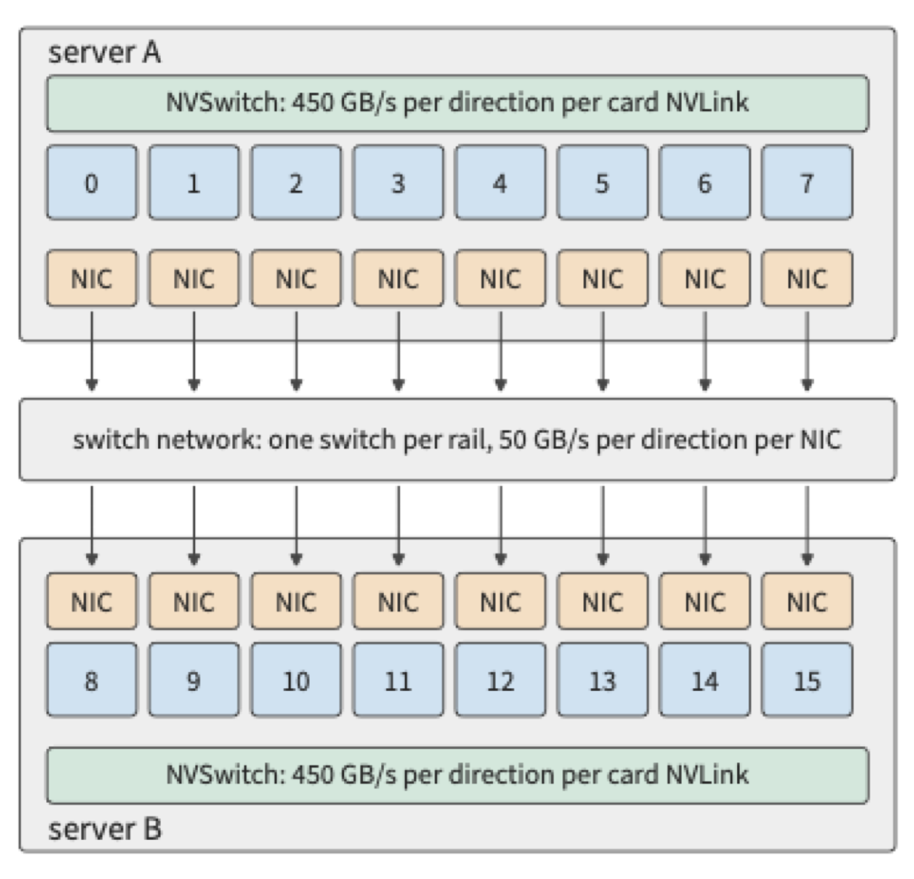
The server boundary in Figure 7-1 is also the communication boundary this chapter repeatedly analyzes. Take a 192 MiB gradient tensor, requiring all sixteen participants to receive the reduced result. In Example 7.6 (Section 7.6.2), the training step computation takes 20 ms, and the gradient is ready at 17 ms; for communication to be fully hidden behind computation, it must complete within 3 ms. This chapter takes 3 ms as the budget for this communication. This example is convenient for round-by-round calculation, and it also illustrates the main difficulty of cross-server collaboration: local computation results must pass through a NIC whose bandwidth is far below NVLink's before they can reach another server.
Because the NIC is so much slower than NVLink, we must first decide which categories of communication go between servers. This chapter continues to use the parallelism strategy overview from Section 6.1.4 without redefining it. Keeping frequent tensor-parallel reductions within the faster interconnect, while placing data-parallel gradient synchronization or pipeline-parallel stage handoffs between servers, is the class of candidate scheme that should be computed first; if local capacity is insufficient, context parallelism needing a wider context, or expert-parallel routing spanning multiple nodes, will require expanding the communication scope. Whether to place things this way must be decided by actual traffic and the critical path.
Crossing a supernode boundary does not itself change how much data must be exchanged; the algorithm, placement, precision, and whether the receiver deduplicates determine how many bytes must be transferred, while the path determines which exit these bytes pass through and how long they wait. Knowing only whether the network is InfiniBand or RoCE does not tell you the effective bandwidth, transfer latency, oversubscription ratio (the ratio of a switch's downlink to uplink bandwidth), in-flight window, or failure recovery time. The remainder of this chapter computes using explicitly given network parameters; in actual deployment, substitute the measured values of the corresponding system.
Experiment 7-1 · Extension: model partitioning between eight-card servers
Compute the minimum number of servers for the two inference models above, adding 8 GB of KV cache and workspace per card. Draw the division of labor for tensor parallelism or expert parallelism within a server and pipeline parallelism between servers, and for cross-server tensor parallelism, marking where one prefill and one decode require cross-server handoffs.
7.1.2 Traffic and Resource Model¶
Having fixed card location and gradient size, we next compute how long data takes on each segment of its path. A piece of data leaves GPU memory, passes through the accelerator interface to the NIC, then through the switch network, and finally is written to the receiver's memory. The same piece of data must traverse these interfaces and links in sequence, while different data blocks can be transferred concurrently across segments, forming a pipeline. Under sustained large transfers, the segment with the lowest bandwidth determines the total throughput. For example, a card can send at 450 GB/s per direction over NVLink, but its NIC can only send at 50 GB/s per direction, so that card's sustained send rate to another server is limited by the NIC's 50 GB/s.
Extending from a single path to the whole cluster, we can first choose the network boundary to analyze, then sum all data crossing it. Splitting network nodes into two groups, the links connecting the two groups form a cut set as in Chapter 6. If a task needs to transfer \(V_{\mathcal C}\) bytes across the cut set in one direction, and the effective bandwidth in that direction is \(B_{\mathcal C}\), the transfer time is at least
This gives a lower bound on transfer time: however scheduling proceeds, the number of bytes a link transmits per second cannot exceed its bandwidth. A full-duplex link's two directions are computed separately; if multiple ports share an internal interface, that interface's combined traffic is computed separately as well. The same data must pass sequentially through links in series, so end-to-end bandwidth is limited by the slowest segment, and bandwidths of the segments cannot be added together.
How wide the cut set is depends on how the switch network is organized. A Clos network consists of multiple layers of switches, providing multiple paths between endpoints through an intermediate switching layer. In a hierarchical Clos network, leaf switches connect to servers, and upper-layer switches provide multiple paths between leaf switches. Take as an example the NVIDIA Quantum QM9700 InfiniBand switch used in the DGX SuperPOD reference architecture: each port runs at the InfiniBand NDR rate grade, 400 Gbit/s, i.e., 50 GB/s per direction; if a leaf switch uses 48 ports for servers and 16 ports for the upper layer, total downlink bandwidth is 2.4 TB/s and total uplink bandwidth is 0.8 TB/s, and this 3:1 ratio is called the oversubscription ratio. These uplinks, totaling 0.8 TB/s, form the cut set that traffic leaving this leaf switch must cross. Servers connected to the same leaf switch can exchange data directly; only communication crossing leaf switches consumes uplink bandwidth.
Example 7.1: When is the benefit of adding more cards limited by cross-server communication? Arrange the sixteen participants in a ring for reduction (computed round by round in Section 7.2.1), with each server sending 360 MiB to the other; these bytes all pass through one NIC, at 50 GB/s per direction. Under the original card count, computation time is 20 ms. As card count increases, computation is evenly divided, while the cross-server transfer volume and path remain unchanged. Find the completion time for two arrangements: fully serial and fully overlapped.
Solution: The lower bound for transfer in one direction is
Let \(x\) be the multiple of the original card count. Computation time becomes \(20/x\) ms. The serial arrangement requires \(20/x+7.5\) ms; when computation and communication fully overlap, the total time equals the larger of the two. Doubling the card count reduces the two results from about 27.5 and 20.0 ms to 17.5 and 10.0 ms respectively. Increasing to fourfold, the serial arrangement is about 12.5 ms, and the fully overlapped arrangement is about 7.5 ms. Figure 7-2 plots both arrangements' curves against card count.
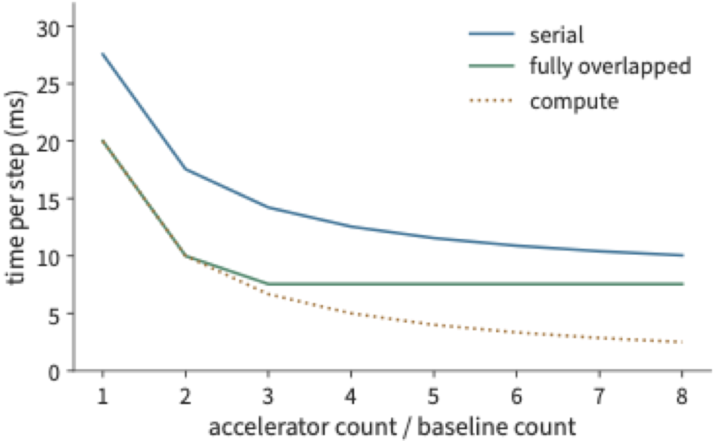
When computation time equals transfer time, \(20/x=7.5\), giving \(x\approx2.6\). Beyond this point, computation time is already shorter than transfer time, and adding more cards no longer shortens the fully overlapped arrangement's time. To keep shortening the time, one must either reduce the data volume crossing the cut set, or bring more NICs into simultaneous operation to raise the cut set's effective bandwidth. Section 7.2 will show how reorganizing the same reduction can achieve both at once.
This approach — fixed total task, increasing card count — is called strong scaling; weak scaling increases the task size as card count grows. For example, if the per-direction transfer volume also doubles while the exit bandwidth stays fixed, the communication time doubles. The shape of the scaling curve depends on how computation volume and cross-server transfer volume each vary with card count.
Experiment 7-2 · Extension: how communication volume and exit bandwidth limit the benefit of scaling
Following Example 7.1, consider two changes separately: halving the per-direction traffic, and doubling the exit bandwidth by having two NICs work simultaneously. For each, plot completion time against card-count multiple under both the serial and fully overlapped arrangements, and find the card-count multiple at which computation time equals communication time. Then let the traffic grow linearly with the card-count multiple, and find the card-count multiple that minimizes completion time under the fully overlapped arrangement.
Number of layers in a Clos network and bisection bandwidth. Earlier we treated a leaf switch's uplinks as the cut set. How wide the cut set is for the whole cluster must be computed starting from the port count of a single switch. Let each switch have \(k\) ports, each port providing 50 GB/s per direction; QM9700 has \(k=64\). A leaf switch uses \(d\) ports for servers and \(u\) ports for the upper-layer spine switches, and \(d/u\) is the oversubscription ratio. With no oversubscription, \(d=u=k/2\). In a two-layer Clos network, each spine switch uses \(k\) ports to connect one leaf switch each, and each leaf switch's \(k/2\) uplinks connect to \(k/2\) spine switches, so there can be at most \(k\) leaf switches and \(k^2/2\) endpoints; a three-layer network built as a fat-tree (a multi-layer Clos with no bandwidth narrowing at any layer, organized in pods — a pod is a group of leaf switches plus a middle layer of switches, with pods connected via top-layer switches) can hold up to \(k^3/4\) endpoints. At \(k=64\), two layers connect 2048 endpoints using 96 switches — exactly the 64 leaf switches plus 32 spine switches used for the 2048 GPUs in the DGX SuperPOD reference architecture; three layers connect 65536 endpoints using 5120 switches.34
Splitting a cluster into two halves with equal numbers of endpoints, the combined bandwidth of the links connecting the two halves is called bisection bandwidth. For a non-oversubscribed network, bisection bandwidth equals the combined bandwidth of half the endpoints: for two layers with 2048 endpoints, this is \(1024\times50=51.2\) TB/s; for three layers, 1638.4 TB/s. With an oversubscription ratio of 3, a leaf switch with 48 down and 16 up can connect 3072 endpoints using only 80 switches; 64 leaf switches have 1024 uplinks in total, and the bisection bandwidth is half of that combined, 25.6 TB/s — only a third of the 76.8 TB/s that a non-oversubscribed network of the same 3072 endpoints would give, with each endpoint's share of the bisection cut set dropping from 50 GB/s to 16.7 GB/s. Figure 7-3 shows a two-layer Clos network and the cut set crossing it.
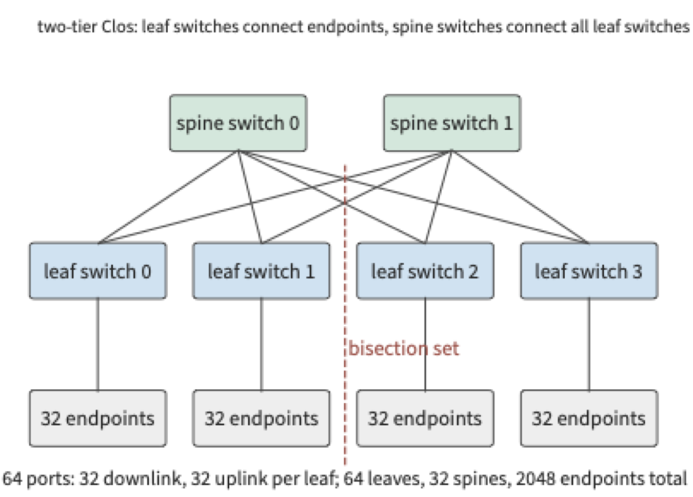
When the 1024-card training job in Section 7.6.4 occupies a whole number of leaf switches, its cut set is all the uplinks of these leaf switches:
| Oversubscription ratio | Down/up per leaf | Leaf switches occupied by 1024 cards | Cut-set links | Cut-set bandwidth | Per-card share |
|---|---|---|---|---|---|
| 1:1 | 32/32 | 32 | 1024 | 51.2 TB/s | 50 GB/s |
| 3:1 | 48/16 | 22 | 352 | 17.6 TB/s | 17.2 GB/s |
The oversubscription ratio also changes the value in the "exit growing with card count" column of the table in Section 7.6.4. That column takes the per-supernode exit as card count times 50 GB/s, implicitly assuming a non-oversubscribed switch network; at an oversubscription ratio of 3, the exit is only a third as large, and cross-domain transfer time becomes triple:
| Supernode cards | Per-node cross-domain send | Non-oversubscribed exit | 3:1 oversubscribed exit | Cross-domain transfer time (non-oversubscribed → 3:1) |
|---|---|---|---|---|
| 8 | 127 GB | 400 GB/s | 133 GB/s | 0.318 → 0.953 s |
| 64 | 120 GB | 3.2 TB/s | 1.07 TB/s | 37.5 → 112.5 ms |
| 128 | 112 GB | 6.4 TB/s | 2.13 TB/s | 17.5 → 52.5 ms |
| 256 | 96 GB | 12.8 TB/s | 4.27 TB/s | 7.5 → 22.5 ms |
The table shows pure transfer time. The cross-domain term in Section 7.6.4 also includes startup for \(2(H-1)\) rounds at 0.83 μs each; with a 128-card supernode, \(H=8\), total startup is about 12 μs, negligible against the millisecond-scale times in the table.
Discussion: when does an oversubscribed cut set become the bottleneck? An oversubscription ratio of \(r\) reduces each card's share of the cut set to \(50/r\) GB/s. If only a fraction \(f\) of the bytes a NIC sends need to leave the local leaf switch, the condition for the uplink not to be a bottleneck is \(f\le1/r\): with no oversubscription, no value of \(f\) is constrained; at \(r=3\), less than a third of the bytes can cross the leaf switch without being constrained. In the cross-server stage of hierarchical reduction, if the two paired servers are not under the same leaf switch (in the multi-rail topology of Section 7.2.5, servers with the same-numbered NIC connect to the same leaf switch, in groups of 32 servers each; this is the case where the two servers are not in the same group), then all of each NIC's bytes must cross the leaf switch, \(f=1\), and the oversubscribed cut set directly stretches this stage by a factor of \(r\); when the two servers are in the same group, the aligned pairing of Section 7.2.5 ensures each pair's bytes pass through only one leaf switch, \(f=0\), and the uplink carries none of this reduction's bytes. Placing the servers of the same synchronization group into the same group is the way to reduce \(f\).
Experiment 7-3 · Extension: how switch port count and oversubscription ratio determine the cut set
Change the switch port count to 128, and find the endpoint count, switch count, and bisection bandwidth for non-oversubscribed two-layer and three-layer Clos networks respectively. Keeping 64 ports, change the oversubscription ratio to 2:1, and find the cut-set bandwidth and per-card share for a 1024-card partition, and the cross-domain transfer time for the 128-card supernode in Section 7.6.4. Finally, find, at an oversubscription ratio of 3, what fraction of a NIC's bytes must stay within the local leaf switch for the cut set to no longer be the bottleneck in the cross-server stage of hierarchical reduction.
7.1.3 Unified Interconnect¶
The lower bounds above describe the limits of physical links. Programs face another problem: the same piece of data must often go through different access interfaces depending on whether it moves within a machine or across servers. This traces back to the long-standing division of labor between the bus and the network: tightly coupled interconnect attaches devices to the processor and memory system, suited to frequent, fine-grained collaboration; cluster networks connect large numbers of independent nodes and must also handle node and link failures. Once a model spans multiple servers, the same computation makes use of both mechanisms simultaneously. A local memory access and a remote transfer express similar data dependencies in the program, but travel different submission and completion paths.
When the author participated in the early design of UB, one of the core problems was how to provide a unified interface for local and remote collaboration. What an application wants to express is "read this data," "hand the result to the next stage," "wait for it to finish, then reuse the space." Unified interconnect provides a common interface for addressing, data access, and inter-device communication, letting CPUs, accelerators, and other devices all participate.
Understanding this unification requires distinguishing two things. The interface determines how a program expresses work; the physical path determines which resources that work passes through. A remote read can be issued with a single instruction, but the data still has to pass through the NIC's 50 GB/s exit; an asynchronous write can be submitted early, but the receiver must wait for the data to become ready before it can begin using it. Accordingly, this chapter first computes the required traffic, then the concurrent requests needed to fully use bandwidth, and finally the operation ordering the application requires. The benefits of a unified interface show up at these same three levels: reducing movement, shortening the issue path, and simplifying coordination. Section 6.5.5 already discussed, from the perspective of supernode scale, two design choices in UB: attaching the controller to the on-chip bus, and splitting connection state into separately stored endpoint records and transport channels. This chapter follows the path of a single remote access, computing stage by stage the effect of these two choices.
7.2 Cross-Node Traffic and Physical Paths¶
7.2.1 Cross-Server Traffic in Data Parallelism¶
A unified interface cannot eliminate necessary transfers, but the reduction algorithm can change which data needs to cross servers. Start with data parallelism: each participant computes a local gradient, corresponding elements are then summed, and finally every participant must obtain the complete reduced result. Take as an example the gradient of the gate projection in the first FFN layer of Qwen3-8B, with shape \([12288,4096]\), stored in FP32 at 4 bytes per element; each participant's input is
Section 6.4.2 already derived ring AllReduce: first ReduceScatter, so each card holds a slice of the reduced result, then AllGather to collect these slices onto every card; the tensor is split evenly into \(p\) parts, each of the two steps takes \(p-1\) rounds, and each round sends one \(M/p\) slice to the next participant. So each participant sends
Each of the sixteen participants sends 360 MiB, totaling 5760 MiB, across thirty rounds. The algorithm determines the total send volume; the participants' distribution across servers determines how much of it must cross servers, and through which NICs.
Example 7.2: which reduction algorithm can complete the transfer within the 3 ms budget? Using the two servers from Section 7.1, compare a non-hierarchical contiguous ring, an interleaved ring, and hierarchical reduction.
Solution: compute the cross-server transfer volume for each reduction scheme. The contiguous ring is arranged as 0, 1, …, 15. Of the sixteen directed edges, only 7→8 and 15→0 cross servers. Each round sends 12 MiB per edge; across thirty rounds, each direction sends 360 MiB total, 720 MiB combined; these bytes pass only through participant 7's NIC on server A and participant 15's NIC on server B, while the other fourteen NICs sit idle. If instead the ordering is interleaved as 0, 8, 1, 9, …, 7, 15, all sixteen edges cross servers, each round sends 12 MiB per NIC, and the cross-server total rises to 5760 MiB.
Hierarchical reduction first runs a ReduceScatter across the eight participants within each server. After seven rounds, each participant holds one-eighth of that server's reduction result, i.e. 24 MiB. The two participants on the two servers responsible for the same slice then run one AllReduce between themselves: each splits its 24 MiB into two halves, exchanging and reducing one half in one round, then exchanging the other half in a second round. Each pair sends 48 MiB combined across both directions, and eight pairs send 384 MiB combined; each pair uses its own rail, with all eight NICs working simultaneously. Finally, each server runs seven rounds of AllGather to obtain the complete result. Figures 7-4 through 7-6 show the paths for the three schemes respectively, and Figure 7-7 compares the cross-server byte counts among the three.
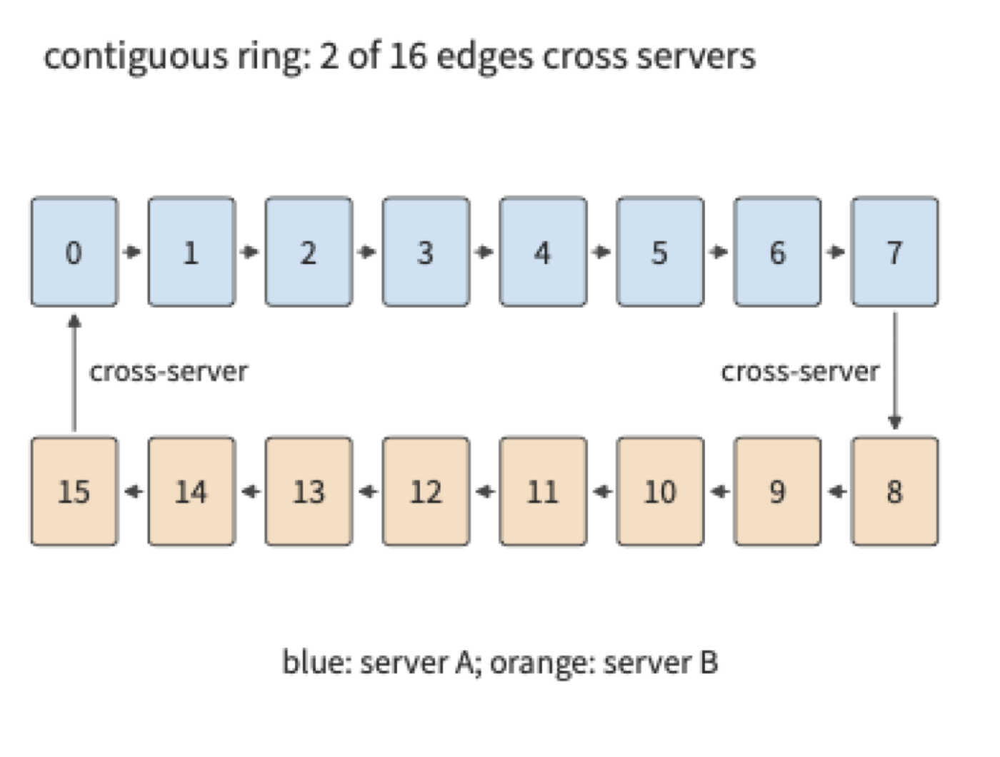
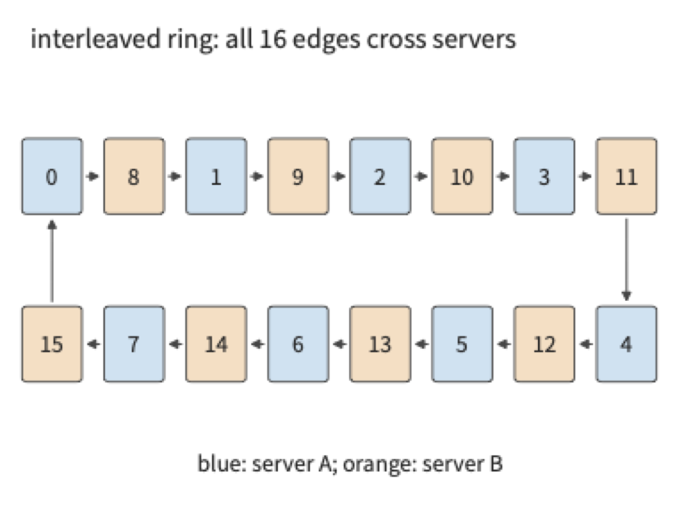
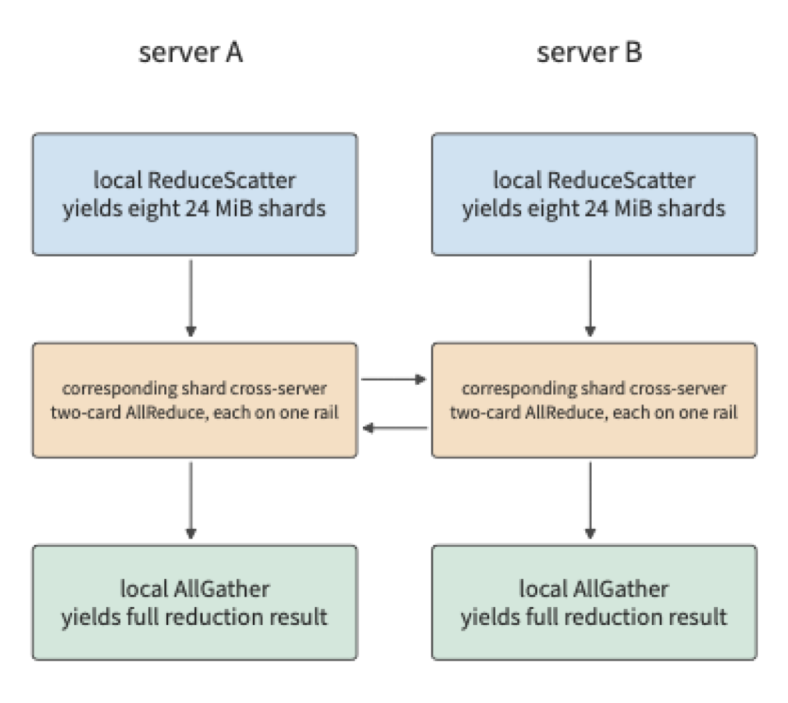
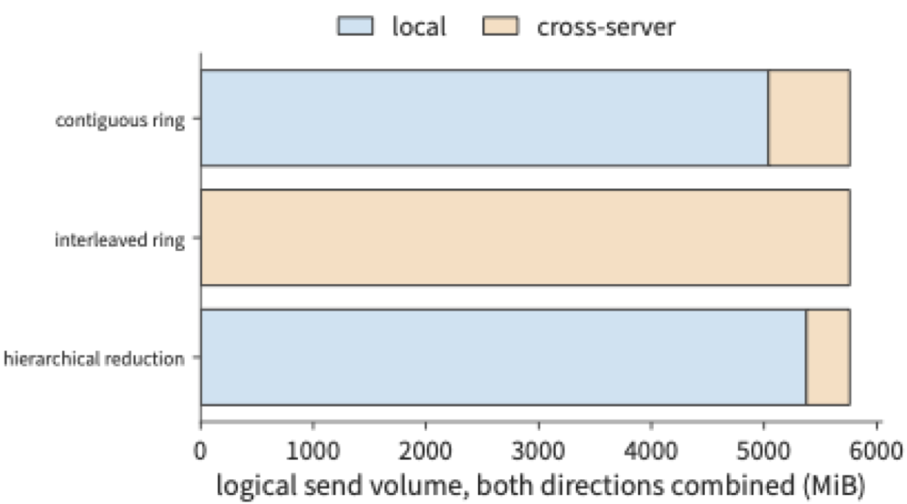
Solution: compute reduction time from the per-round link load. Rounds execute in sequence, with different transfers within the same round proceeding in parallel. Let \(V_{r,e}\) be the data volume passing through resource \(e\) in round \(r\), \(B_e\) the bandwidth of that resource, and \(\alpha\) the per-round startup time; the transfer model is then
Following the arrows of the three schemes above round by round turns the traffic into time. This expression separates two relationships: within a round, the slowest transfer dominates; across rounds, times simply add. Here we compute only data transfer time and per-round startup time.3
The contiguous ring sends 12 MiB per direction per round through one NIC, taking about 0.25 ms; the other fourteen edges of the same round travel over NVLink, each 12 MiB taking only about 0.03 ms, but all must wait for that one edge. So thirty rounds take about 7.6 ms in total. The interleaved ring has all sixteen edges each sending 12 MiB through their own NIC per round, also about 0.25 ms per round, also totaling about 7.6 ms across thirty rounds: the interleaved ring keeps all NICs busy, but increases cross-server traffic eightfold without shortening the time.
Hierarchical reduction's two cross-server rounds each send 12 MiB per NIC, totaling about 0.50 ms. The local ReduceScatter and AllGather total fourteen rounds, each participant sending 24 MiB over NVLink at 450 GB/s, totaling about 0.78 ms. Sixteen rounds of startup total about 13 μs, giving
The contiguous ring's transfer already exceeds the 3 ms budget, while hierarchical reduction leaves about 1.7 ms for reduction computation, propagation, and queueing. Hierarchical reduction reduces cross-server transfer volume by about 47%, and reduces communication time by about 83%. These two ratios differ enormously, and the reason lies not in byte count but in path: in each of the contiguous ring's thirty rounds, every round must wait for the cross-server edge to finish transferring 12 MiB through its NIC, while the other fourteen edges finish transferring over NVLink in about 0.03 ms and then simply wait for that edge, leaving the other fourteen NICs with nothing to transfer for the entire round; hierarchical reduction compresses the cross-server transfer into two rounds, with all eight NICs simultaneously transferring 12 MiB each, turning the cut set's effective bandwidth from 50 GB/s into 400 GB/s.
Discussion: how fast must local interconnect be for hierarchical reduction to pay off? Write local bandwidth as \(B_L\), keeping the NIC at 50 GB/s per direction. Hierarchical reduction's fourteen local rounds send 336 MiB in total, and the two cross-server rounds take about 0.5 ms; as long as \(B_L\) is not lower than the NIC bandwidth, the contiguous ring's time is always determined by that single cross-server edge, about 7.6 ms. Setting the two equal, \(336\ \mathrm{MiB}/B_L+0.5\ \mathrm{ms}=7.6\ \mathrm{ms}\), gives \(B_L\approx50\) GB/s: as long as the local interconnect is no slower than one NIC, hierarchical reduction is faster, and NVLink's 450 GB/s is far above this threshold. Hierarchical reduction incurs no penalty on this server, because each participant's local send volume (336 MiB) is no larger than the contiguous ring's (360 MiB), and the cross-server stage makes use of all eight NICs.
Hierarchical reduction is not always free. As a counterexample, consider a common PCIe server configuration (called the reference configuration below): four A100 80GB cards per machine, connected card to card via point-to-point PCIe Gen4 x16, 32 GB/s per direction; each machine equipped with one dual-port ConnectX-7, whose two 200 Gbit/s ports each provide 25 GB/s, sharing the same PCIe Gen4 x16 slot for this NIC, giving only 32 GB/s per direction as well. The contiguous ring over eight participants takes fourteen rounds, each sending 24 MiB; local edges are limited by the point-to-point link, cross-server edges by the NIC's slot, each round computed at 32 GB/s, taking about 11.0 ms. Hierarchical reduction's two cross-server rounds each need to send 96 MiB through the slot per direction, totaling about 6.3 ms, plus six rounds of local communication at about 9.4 ms, for a total of about 15.7 ms — actually slower than the contiguous ring. Setting the two equal gives a local bandwidth of about 64 GB/s, roughly twice the NIC slot bandwidth.4 The A100 PCIe's NVLink bridge provides 300 GB/s per direction, far above this threshold, but a single bridge connects only two cards, so two of the edges in a four-card ring still travel over PCIe; if every edge of the four-card ring had this bandwidth, hierarchical reduction would drop to about 7.3 ms, only then becoming faster than the contiguous ring. The difference stems from the shared interface: the cross-server stage concentrates all eight participants' slices into two rounds, and both rounds' traffic must pass through the same 32 GB/s slot, so the remote bytes saved by local reduction are partly offset by the longer remote rounds; and since the local link is no faster than that slot, the extra time added by local reduction cannot be recovered either.
Hierarchical reduction first completes partial reduction over the faster local interconnect, then sends the result out through the NIC. It reduces the number of cross-server bytes, and more importantly gives each NIC its own slice to transfer. When cross-server bandwidth is provided by multiple independent NICs, hierarchical reduction costs almost nothing; when cross-server bandwidth is a shared interface, hierarchical reduction is faster only if the time added by local reduction is less than the remote transfer time it saves.
A fourth scheme: in-network reduction. The first three schemes all have participants send data pairwise, with the switch only forwarding. In-network reduction has the switch perform addition while forwarding: NVIDIA's SHARP (Scalable Hierarchical Aggregation and Reduction Protocol) reduces data from multiple ports along an aggregation tree inside the switch chip, then distributes the result back, so endpoints never have to send the same data multiple times.35 Keeping hierarchical reduction's local ReduceScatter and AllGather unchanged, only the cross-server stage is replaced: each participant sends its own 24 MiB slice to the switch once, and receives the reduced result once — just one round. With two servers, each NIC still sends 24 MiB per direction, and the cross-server total remains 384 MiB, the same as hierarchical reduction; the time changes from two rounds' 0.505 ms to one round's 0.504 ms, saving only a single 0.83 μs startup.
The difference appears as the number of servers grows. Let \(S\) be the number of servers holding the same slice. Ring AllReduce has each NIC send \(2\frac{S-1}{S}\times24\) MiB over \(2(S-1)\) rounds; in-network reduction has each NIC always send once and receive once. The cross-server stage's time is shown in the table below and in Figure 7-8:
| Servers | Ring: send per NIC | Ring: rounds | Ring: time | In-network reduction: send per NIC | In-network reduction: time |
|---|---|---|---|---|---|
| 2 | 24 MiB | 2 | 0.505 ms | 24 MiB | 0.504 ms |
| 4 | 36 MiB | 6 | 0.760 ms | 24 MiB | 0.504 ms |
| 8 | 42 MiB | 14 | 0.892 ms | 24 MiB | 0.504 ms |
| 16 | 45 MiB | 30 | 0.969 ms | 24 MiB | 0.504 ms |
| 32 | 46.5 MiB | 62 | 1.027 ms | 24 MiB | 0.504 ms |
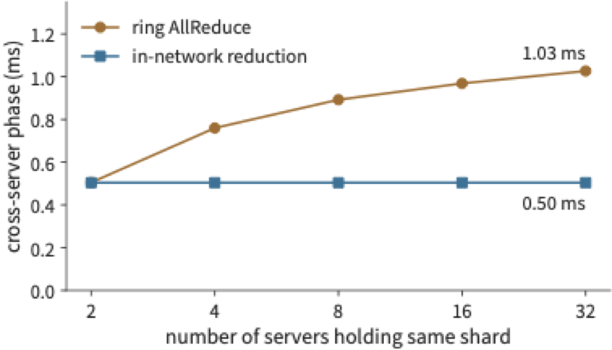
Discussion: When is in-network reduction clearly faster? With two servers, the two differ only by one startup; from \(S=3\) onward, the ring transfers \(2(S-1)/S>1\) times as many bytes as in-network reduction and incurs \(2S-3\) more round startups—the gap widens as the number of servers grows, and at 32 servers in-network reduction takes only 49% of the ring's time. This model only accounts for the NIC's serial sends and startups; how many bytes per second the switch's reduction engine can reduce, and which data types it supports, are inputs that must be supplied separately—once traffic exceeds that rate, the bottleneck shifts from the NIC to the switch. The SHARP paper measured, on 128 hosts, an 8-byte AllReduce dropping from 6.01 μs to 2.83 μs, and a 4096-byte AllReduce dropping from 46.93 μs to 14.48 μs: for small messages, the savings come mainly from the startup time saved by fewer rounds.35
Experiment 7-4 · Extension: when is in-network reduction worth it
Switch the gradient to BF16 (96 MiB per participant), and recompute the cross-server time for ring and in-network reduction with two and eight servers. Assume the switch's reduction engine has a per-direction reduction throughput of 200 GB/s, determine whether it becomes the bottleneck when eight rails reduce simultaneously, and find the minimum engine throughput at which in-network reduction remains faster than the ring. Finally, using the 8 KiB input from Section 7.6.3, compare how much the total startup time for 36 layers with two reductions per layer differs between the two schemes.
7.2.2 Communication Requirements of Tensor Parallelism and Pipeline Parallelism¶
Data parallelism reconciles the gradients of all participants through reduction. Tensor parallelism splits the computation of one layer across multiple participants, and the subsequent operator often must wait until the local results are reconciled before it can start, so communication within a layer directly delays subsequent computation. Pipeline parallelism cuts the model apart by stage, concentrating cross-server handoffs at stage boundaries. Under the two schemes, the number of times data crosses server boundaries differs.
First compute the data volume of one inter-layer handoff. Qwen3-8B has a hidden width of 4096, so one BF16 hidden vector is 8 KiB. In prefill, the same tensor for 8192 tokens is 64 MiB, while for single-request decode it is 8 KiB. Take the link bandwidth \(B\) as this chapter's NIC value of 50 GB/s, and the startup time \(\alpha\) per transfer as 5 μs; transferring \(M\) bytes takes
64 MiB takes about 1.3 ms, and 8 KiB takes about 5.2 μs. For the former, most of the time is spent transferring data; for the latter, about 97% of the time is spent on startup. When startup time equals transfer time, \(M=\alpha B=250000\) bytes, or about 244 KiB. When the data volume is far larger than this value, transfer time dominates and increasing bandwidth is more effective; when it is far smaller, reducing the number of transfers is more effective.
The formula above gives the cost of one handoff; for pipeline parallelism we also need to see how multiple handoffs interleave with computation. Pipeline parallelism places several consecutive layers on the same stage, passing activations between stages. While the previous stage processes the next micro-batch, the following stage can process the previous micro-batch. Take four forward stages, each taking 1 ms. One micro-batch passes through the four stages in sequence, finishing after 4 ms. With eight independent micro-batches fed in continuously, the first stage passes one micro-batch's result to the next stage every millisecond, and the last micro-batch finishes at the 11 ms mark.
Looking along the same number in Figure 7-9, one micro-batch must pass through all four stages; looking along the same row, one stage can process eight micro-batches in succession. The blank areas at the bottom-left and top-right are the idle time at pipeline startup and wind-down.
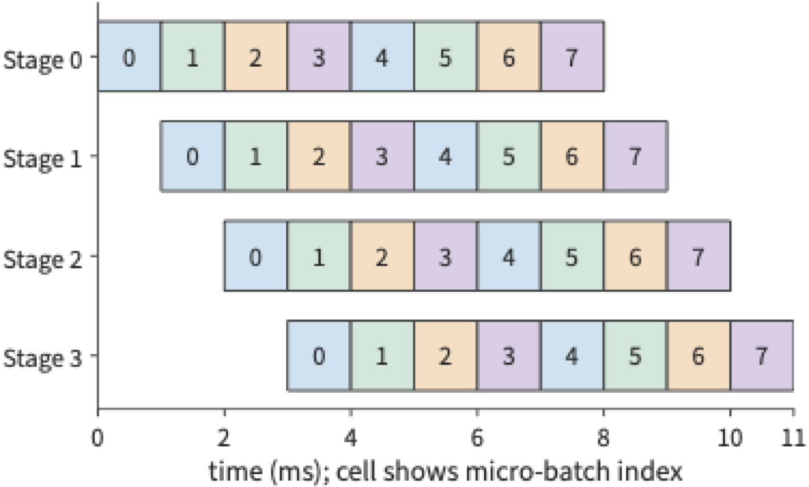
In general, with \(p\) equal-duration stages, \(m\) independent micro-batches, and each stage taking \(\tau\), the total time and the utilization of each stage are
With four stages and eight micro-batches, utilization is about 73%. To reach 90%, from \(m/(m+3)\ge0.9\) we need at least 27 independent micro-batches. Keeping every pipeline stage continuously busy requires enough independent micro-batches. In low-concurrency decode, the next token of the same request depends on the output of the previous token, so adding servers does not create new independent micro-batches; only increasing concurrent requests increases the independent work in the pipeline.
Consequently the two forms of parallelism produce different kinds of waiting: tensor parallelism must frequently reconcile local results, while pipeline parallelism leaves some cards idle at startup and wind-down. Prefill's tensors are large, so priority should go to reducing the data transferred across servers; low-concurrency decode generates tokens one at a time, so priority should go to reducing the number of communication startups per layer. The number of concurrent requests determines pipeline utilization.
7.2.3 Communication Load of Expert Parallelism¶
The communication of tensor parallelism and pipeline parallelism is determined by how the split is made; MoE adds one more variable: the experts chosen by each token can differ, so the send target changes accordingly. Expert parallelism places experts on different cards, and tokens are routed to the corresponding experts. Take 1024 tokens, each selecting eight experts, for a total of 8192 dispatches. Each activation is 8 KiB, half of which cross servers, so the input dispatched to remote experts amounts to 4096 pieces, totaling 32 MiB; combine returns a result of the same size, another 32 MiB.7
Let the number of tokens be \(n\), the number selected per token be \(k\), the size per activation be \(d\) bytes, and the boundary-crossing fraction be \(f\). If each dispatch is transferred individually, the dispatch transfer volume is \(nkfd\), and adding the expert results returned by combine gives \(2nkfd\) in total. Placing popular experts on the server where the sender resides reduces \(f\); changing the data type or encoding of the activation changes \(d\).
How this 32 MiB is distributed to the receivers also affects the transfer time. Sending it all to one 50 GB/s NIC requires at least about 0.67 ms to receive (Figure 7-10); splitting it evenly across the receiving server's eight NICs, with each receiving 4 MiB, drops the receive time to about 0.08 ms (Figure 7-11). In the reference configuration, the dual-port NIC's two ports share one 32 GB/s PCIe slot, so no matter how the traffic is split between the two ports, receiving 32 MiB still requires at least about 1.05 ms. Spreading the traffic evenly across NICs eliminates the single-NIC bottleneck; when ports share a slot, the shared slot then becomes the new bottleneck.
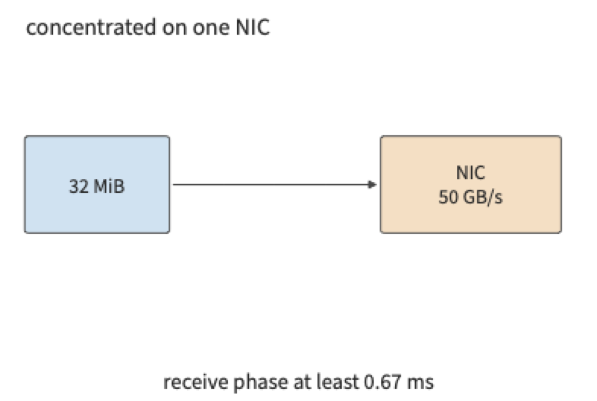
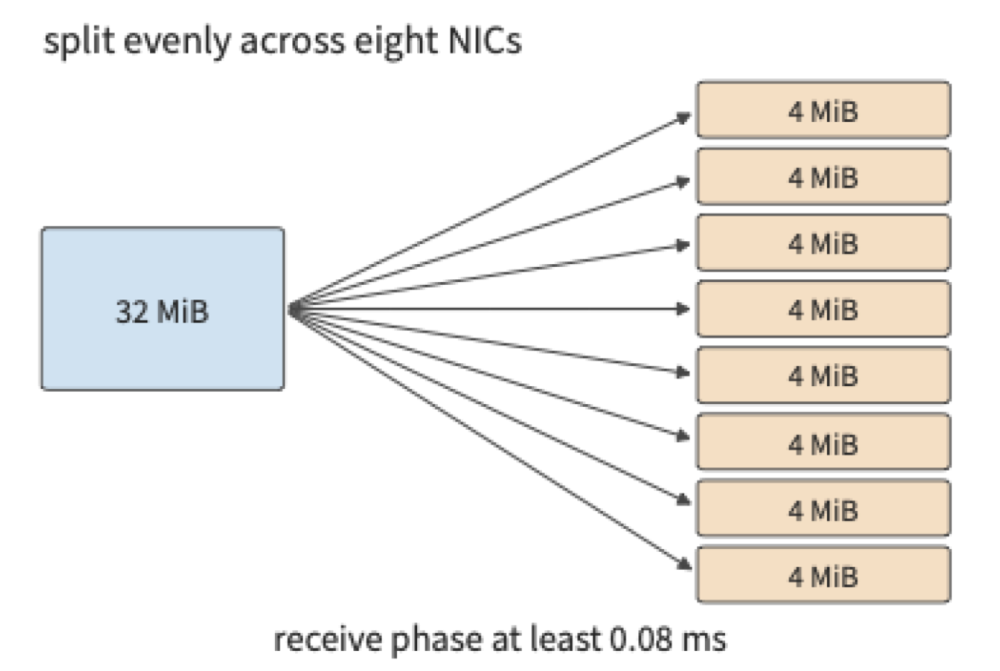
Having spread the receive targets across multiple NICs, we still need to trace forward to the shared interface they pass through. Figure 7-12 draws out the reference configuration's shared slot separately: no matter how the traffic is later split across the two ports, this 32 MiB must first pass through the same slot.
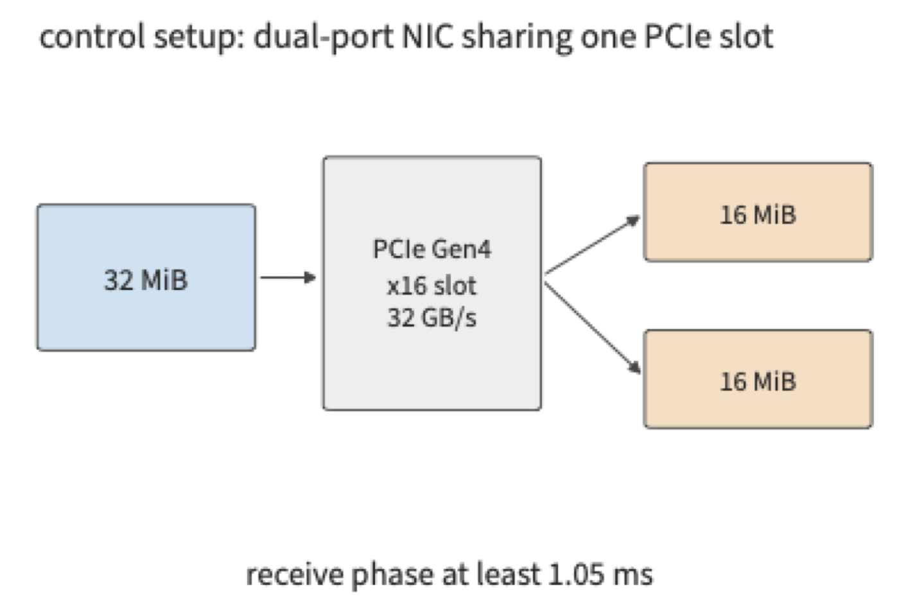
Comparing these three path diagrams, spreading the targets reduces the data volume on each individual NIC; looking along the shared ingress point in the last diagram, the full 32 MiB must still pass through it. When computing irregular communication, it also helps to first tally the traffic at each of these points separately.
Denote the payload sent from card i to card \(j\) as \(V_{ij}\). Summing along a row gives the sender's send volume, summing along a column gives the receiver's receive volume; summing the elements crossing a given cut gives that cut's transfer volume. Dividing each of these quantities by the corresponding bandwidth and taking the maximum is exactly Section 7.1's resource model applied to irregular exchanges.
This matrix also shows how the hotspots of dispatch and combine correspond. If tokens are sent to experts one piece at a time, and the return vector is the same size with no merging on the receiving side, the return matrix is the transpose of the send matrix: dispatch's hotspot receiver is combine's hotspot sender. Equal total bytes in both directions does not mean equal time in both directions: the returned data isn't ready until the expert finishes computing, and the available bandwidth, data format, and reduction location may also differ between the two directions. If dispatch uses FP8 and combine uses BF16, the returned payload is about twice that of dispatch, not counting metadata such as quantization scales. Section 9.4 will place this traffic together with computation readiness times in the same worked example.
Expert placement therefore has two interconnected goals: keeping more dispatches local, and spreading remote dispatches across receivers with spare capacity. Replicating popular experts trades extra capacity for less remote traffic; input destined for multiple experts on the same card can be transferred as a single activation and split among the experts once it arrives on that card. Both approaches reduce the transfer volume on the corresponding paths.
7.2.4 Multiple NICs¶
Expert dispatch illustrates both the benefit of parallel ingress points and the limits of a shared ingress point. The same analysis also applies to the sender side: adding a NIC only shortens transfer time when it truly provides additional available bandwidth and there is data assigned to it. Section 7.2.1's naive ring is one example: each of the server's eight NICs is connected to one card, yet the naive ring only gives one of them data to transfer; only after hierarchical reduction splits the shard among eight pairs of participants does the cross-server phase drop from 7.6 ms to about 0.5 ms. Having a NIC does not mean it is being used—the communication algorithm determines how many bytes each NIC gets.
The reference configuration illustrates another kind of limit. Its dual-port NIC has two 25 GB/s ports sharing one 32 GB/s PCIe slot. Using only one port, the eight-participant naive ring's fourteen rounds take about 14.1 ms; splitting each transfer's data into two segments and handing them to the two ports raises throughput only to the slot's allowed 32 GB/s, dropping the time to about 11.0 ms—not the roughly 7.1 ms that the two ports' combined 50 GB/s would suggest. Even switching to a four-port ConnectX-7 and bringing the third port into use, the slot is still the same PCIe Gen4 x16, so this transfer cannot be shortened further. Once the shared interface's bandwidth is exhausted, adding more ports no longer raises throughput.5
Another situation is when the NIC directly attached to one GPU is busy while the NIC of a neighboring GPU is idle. Borrowing the neighbor's egress requires first sending the data to the neighboring GPU over NVLink, adding a segment of local transfer. The multi-NIC communication system FuseLink takes exactly this path: using intra-machine GPU interconnects, it remaps the network buffer onto an idle NIC.8
Below we compare direct sending against relaying through a neighboring GPU. The directly attached NIC provides 50 GB/s per direction, the two borrowable neighboring NICs also provide 50 GB/s each; the NVLink to the neighboring GPU provides 450 GB/s per direction.
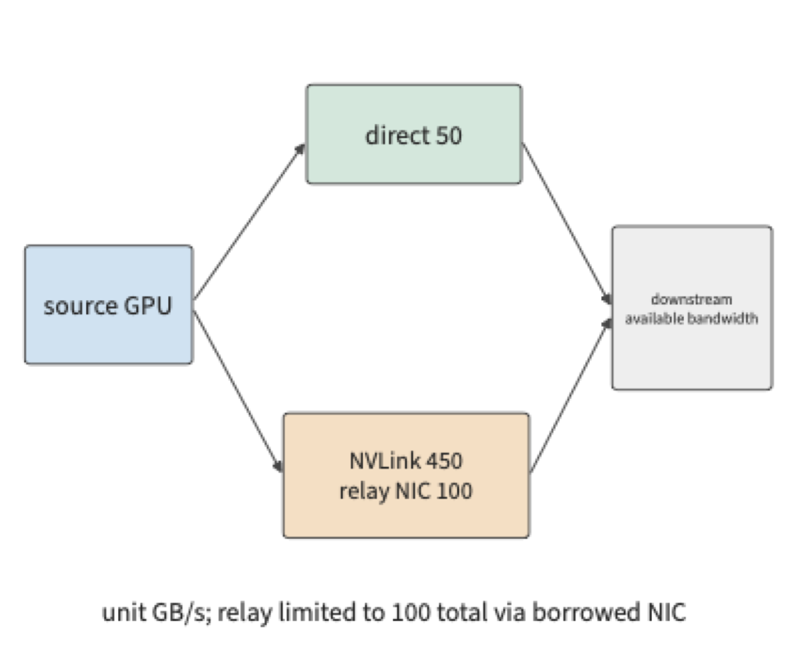
Following the branching in Figure 7-13: the direct path and the relay path can transfer simultaneously, but data must pass sequentially through the two segments inside the relay path. So the direct and relay paths together can provide \(50+\min(450,100)=150\) GB/s. Let \(B_D\) denote the bandwidth jointly allowed by the external network and the receive path; the effective send capacity is
where \(B_D\) is also measured in GB/s. When \(B_D\le50\), the direct NIC can already saturate the downstream bandwidth, and relaying provides no benefit; when \(50<B_D<150\), the relay's benefit grows as the downstream available bandwidth increases; beyond 150, the combined bandwidth of the two borrowed NICs becomes the new bottleneck. If the NVLink is simultaneously carrying traffic for local reduction, and the local bandwidth left for relaying drops below 100 GB/s, then the constraint on the relay path shifts to this local segment. A 1.125 GiB payload takes about 24.2 ms on the direct 50 GB/s path, drops to 12.1 ms when the downstream supports 100 GB/s, and drops to 8.1 ms when it supports 150 GB/s.
The bandwidth-based analysis of borrowing NICs above assumes each transfer's data volume is large enough. MoE decode's dispatch and combine have each card send several thousand small messages, at which point we must also check how many requests per second the NIC can initiate—that is, \(1/\delta\) from Section 7.3.4. Using that section's \(\delta\approx18.6\) ns for RoCE reliable-connection implementations, a NIC can initiate about 54 million requests per second; on a 50 GB/s link, only when a message is smaller than about 0.93 KB does the initiation rate become the bottleneck ahead of bandwidth. One MoE dispatch message is one token's hidden vector—with hidden dimension 7168, that's about 7 KiB in FP8 or about 14 KiB in BF16, both far above this crossover point, so the card holding the hot expert still exhausts bandwidth first, and borrowing a neighboring NIC by allocating bytes is sufficient. Only when each message is under 1 KB, such as control messages sent one at a time, does the initiation rate exhaust before bandwidth does; Section 9.4.2, when discussing expert replica placement, also accounts for the NIC's packet-processing capacity as a resource requiring reserved headroom in this case.13
Whether it's hierarchical reduction, expert placement, or multi-NIC relaying, the analysis steps are the same: draw the path, compute the data volume transferred over each link and interface, and find the longest-duration item.
Experiment 7-5 · Core: how local bandwidth and shared egress affect the choice of reduction algorithm
Fully redo Example 7.2, then switch to the reference configuration (four A100 80GB PCIe cards per server, connected pairwise over PCIe Gen4 at 32 GB/s per direction, dual-port ConnectX-7 with its two 25 GB/s ports sharing one 32 GB/s PCIe slot) and recompute the naive ring and hierarchical reduction. Under the reference configuration, raise the local bandwidth from 32 GB/s to the NVLink bridge's 300 GB/s (assume every edge between the four cards has this bandwidth), and explain why the choice of reduction algorithm flips, while under this chapter's configuration it does not. Then increase the number of ports used per server in the reference configuration from one to two to three, keeping the 32 GB/s slot fixed, plot reduction time against port count, and identify beyond how many ports adding more no longer shortens the time.
7.2.5 Multi-Rail Topology¶
Section 7.2.1's hierarchical reduction has eight pairs of participants each take one rail. The DGX SuperPOD reference architecture organizes the compute network into a multi-rail topology (rail-optimized): each server's eight NICs connect to eight different leaf switches, and NIC \(i\) on every server connects to leaf switch \(i\); leaf switch \(i\) together with all the NICs attached to it forms rail \(i\). Within the same group of 32 servers, traffic on the same rail reaches its destination in one hop through the leaf switch, while traffic between different rails must pass through a spine switch.36 The switching network in Figure 7-1 with "one switch per rail" is organized this way.
The cross-server phase of hierarchical reduction pairs rank \(i\) with rank \(i+8\): rank \(i\) uses NIC \(i\) on server A, and rank \(i+8\) uses NIC \(i\) on server B, and both NICs connect to leaf switch \(i\). So the traffic of all eight pairs stays within a single rail, passing through only one leaf switch, and not a single byte crosses the spine switch. Each rail carries 24 MiB per direction, taking 0.505 ms for two rounds; concentrating this 192 MiB on a single NIC would take 4.03 ms, and having eight rails work simultaneously shortens this to about one-eighth.36 The top half of Figure 7-14 shows this aligned pairing, and the bottom half shows the misaligned pairing discussed below.
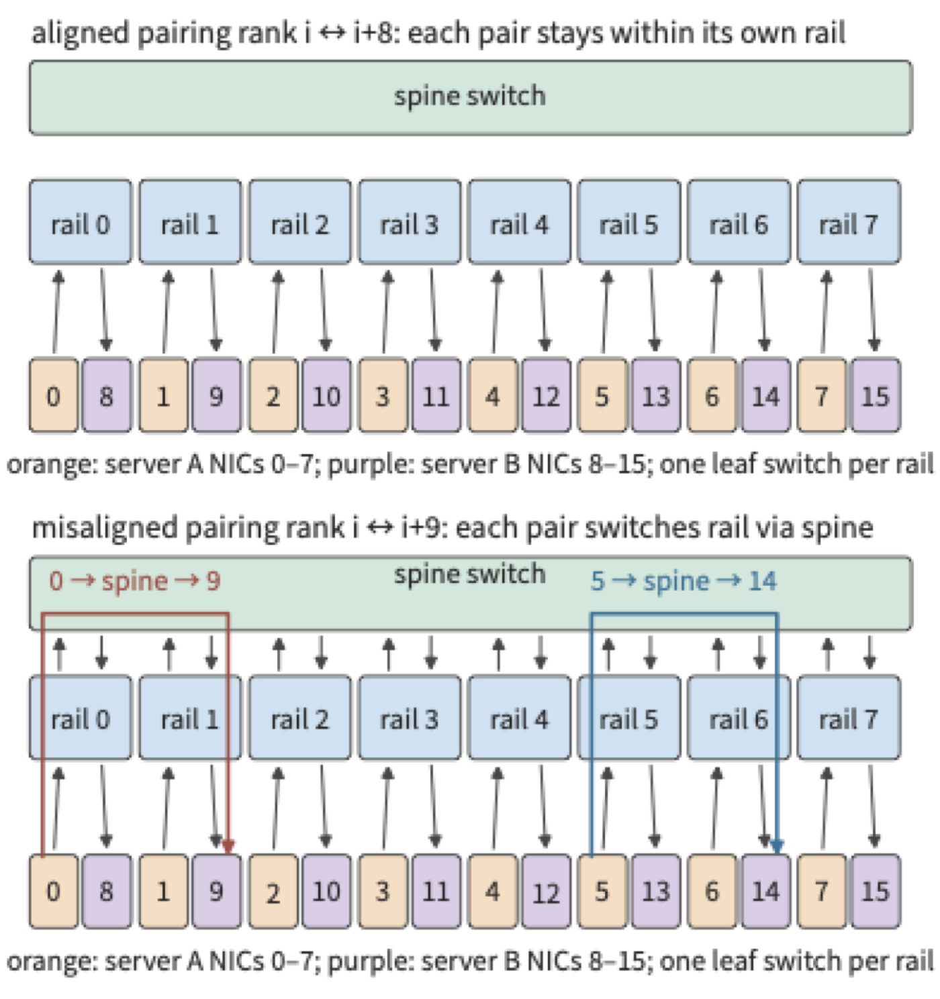
Changing the pairing to rank \(i\) with rank \(i+9\) (rank 7 with rank 8), rank \(i\) still uses rail \(i\), but its peer now uses rail \(i+1\). Each pair's bytes must first enter leaf switch \(i\), then cross to leaf switch \(i+1\) via the spine switch—all eight pairs without exception—so per direction, the full 192 MiB passes through the spine layer. The send volume per NIC hasn't changed, and the lower bound on the cross-server phase is still 0.505 ms; what changes is that these bytes now occupy links on the spine switch, sharing them with other jobs' cross-rail traffic, and also going through the multipath hashing discussed in Section 7.5.3. Whether pairing is aligned depends solely on whether the two ranks' indices within their respective servers match: equal \(i \bmod 8\) stays within one rail, unequal crosses the spine layer. The interleaved ring (Figure 7-5) pays this same cost on a multi-rail topology: all sixteen of its edges cross servers, edge \(i\to i+8\) is aligned, edge \(i+8\to i+1\) is not, so half the bytes must cross the spine layer.
Apply this rule to Section 7.6.4's 128-card supernode. Sixteen servers each with eight cards; the tensor-parallel group occupies all eight cards of one server, and the card at tensor-parallel coordinate \(t\) is always card \(t\) on every server, using rail \(t\); the sixteen data-parallel members at the same coordinate exchange, after reducing within the supernode, exactly the gradient shard for that coordinate across supernodes. The shards at the eight coordinates are equal in size (each card holds \(G=8\) GB), so the eight rails each carry one-eighth of the cross-supernode send volume, that is, 14 GB out of 112 GB, with no rail busier than another. A busier rail only appears when shard sizes differ (for example, from uneven tensor splitting), or when one NIC fails and its traffic is rerouted through a neighboring NIC over NVLink (Section 7.2.4).
Experiment 7-6 · Extension: rail alignment and spine-layer traffic
On two servers, change the pairing to rank \(i\) with rank \(((i+4)\bmod 8)+8\), and find the number of bytes crossing the spine layer. Then let NIC 3 on server B fail, with rank 11's traffic split evenly over NVLink between NIC 2 and NIC 4, and find the bytes carried by each rail and the time for the cross-server phase. Finally, in Section 7.6.4's 128-card supernode, switch to TP16 (one group spanning two servers), and explain which coordinates' shards each rail carries and whether the load remains balanced.
7.3 Paths and Concurrency in Remote Access¶
7.3.1 Data Transfer and Completion Notification¶
Section 7.2 only computed which links the bytes cross and how long that takes, without explaining how these bytes are handed off. In the cross-server phase of hierarchical reduction, card 0 already has its locally reduced shard and needs to hand it to card 8. One data handoff comprises two tasks: writing the shard to a location card 8 can read, and letting card 8 know the data is ready. The first changes where the data resides; the second tells the receiver when it can begin computing.
Section 6.5.5's one-sided read/write has the initiator directly access pre-authorized remote memory—for example, card 0 writes its shard into card 8's receive region: the initiator's NIC reads the shard from local memory, the target NIC writes it into card 8's memory, and the peer program is not involved in this move. Two-sided messaging requires the sender and receiver to cooperate: the receiver submits a receive request in advance and supplies a buffer, and the communication system matches arriving messages with the corresponding requests. A large shard with a known destination is suited to direct read/write; notifications from multiple senders are better placed in a message queue, which distinguishes each notification and hands it to the corresponding data consumer, referred to below as the consumer.
Large data and notification can thus be divided: write the shard first, then send a short message stating the shard is ready for use. Merging the write and the notification into a single submission saves one more round trip. The consumer begins reducing after receiving the notification; the ordering between write and notification is discussed further in Section 7.4.
Write and notification complete the data handoff. If the receiver must also process the data in a specified way, use a remote procedure call (RPC): this requests the peer to execute a specified function, and one call includes passing parameters, remote execution, and returning results. How the parameters are encoded directly affects the overhead of this path: JSON is a text-based data exchange format; base64 encodes every 3 binary bytes into 4 text characters. Placing 1 MiB of binary data into a JSON base64 field increases the encoded payload by about one-third. Switching to a binary request simultaneously reduces the bytes sent and the encoding work.
In a set of cross-host RPC measurements accompanying this book, request size dropped from about 1.33 MiB to 1.00 MiB, and the median client-side CPU processing time dropped from about 9.8 ms to 1.1 ms. Of 20 paired production calls, 11 pairs were faster overall, while network transmission and forwarding wait times fluctuated more.10 These measurements distinguish two kinds of time: reducing encoding saves local CPU time; shortening the entire call also requires reducing waiting in the network, forwarding, and remote execution.
Experiment 7-7 · Extension: how much remote call time can be saved by removing the encoding conversion
From the accompanying records, select paired calls with the same payload, and plot the timeline of client-side encoding, sending, waiting, decoding, and server-side execution. Explain why the server-side execution time is already included in the client-side wait time. Compute the reduction in transferred bytes from removing base64 encoding, and analyze how the share of time spent on encoding affects the speedup gained for the complete call.
7.3.2 Direct communication initiated by the accelerator that produces the data¶
Section 7.3.1 distinguished read/write, messages, and RPC from the receiver's perspective. On the sender's side, the question is: who first knows the data is ready, and who is responsible for submitting the request. Card 0's shard is produced on the GPU. If the CPU submits the communication, the GPU first reports readiness, the CPU constructs the request and hands it to the NIC, and once complete it hands the status back to the GPU. This control path involves multiple handoffs; even when the payload never passes through CPU memory, the handoffs themselves still take time.
RDMA NICs can already access authorized remote memory; NVIDIA's GPUDirect RDMA goes further, letting the NIC directly access registered and authorized GPU memory, so the payload need not be relayed through host memory. When the CPU initiates communication, the CPU is still responsible for submitting the request and processing the completion notification; when the accelerator initiates communication, the GPU itself constructs or triggers the request and reads the completion status, so it can issue the transfer as soon as the computation finishes. URMA is the unified remote memory access interface provided by UB. GPU access to a peer's memory over NVLink, and a device initiating asynchronous access over UB, are both implementations of this direct collaboration on their respective paths. Figures 7-15 through 7-18 in turn depict host RPC, CPU-submitted GPUDirect RDMA, GPU access over NVLink, and device-initiated URMA access.
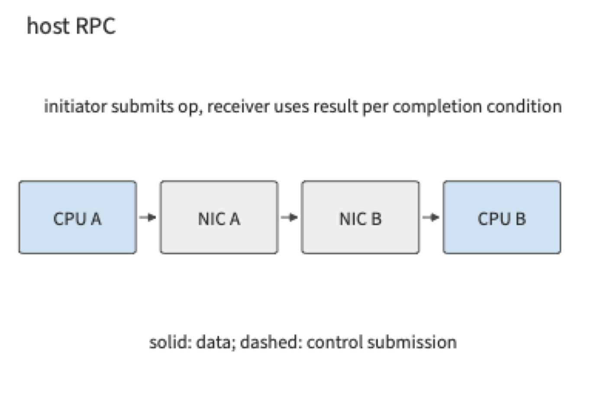
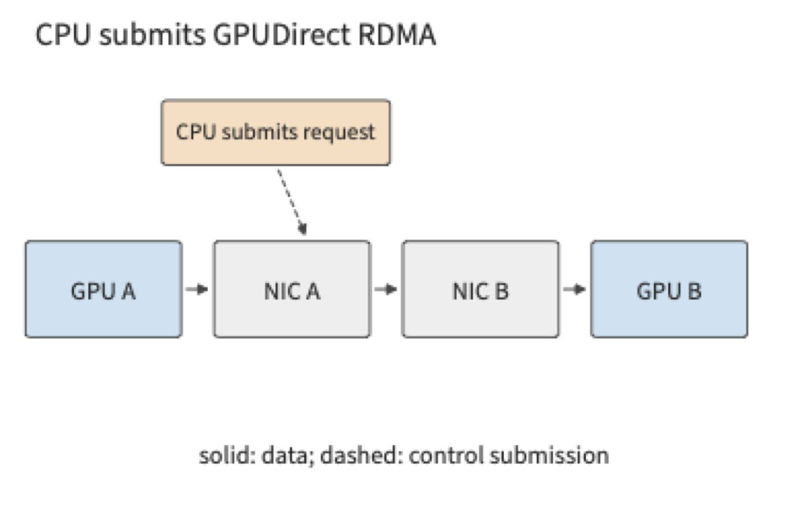
Once the data bypasses host memory, who initiates the transfer can be changed further. In Figure 7-17, the GPU itself initiates access to the peer's memory, eliminating the handoff that would otherwise require the CPU to submit the request each time.
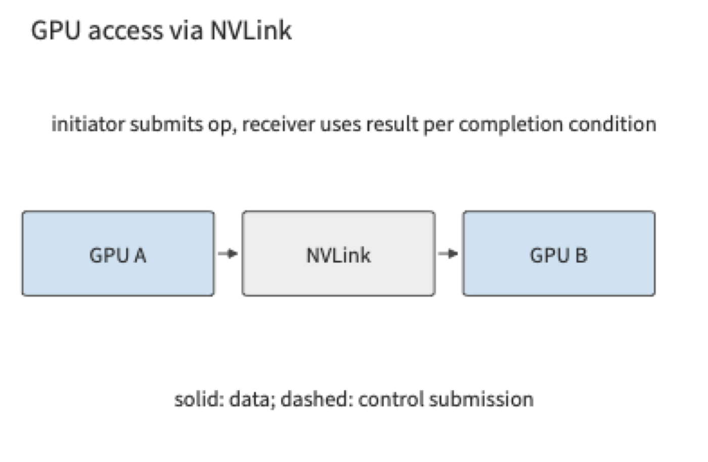
Figure 7-18 places the same initiation-and-completion relationship onto UB's asynchronous access interface. Tracing the payload along the solid line and the control along the submission-and-completion relationship lets us separate the cost of data transfer from the cost of request management.
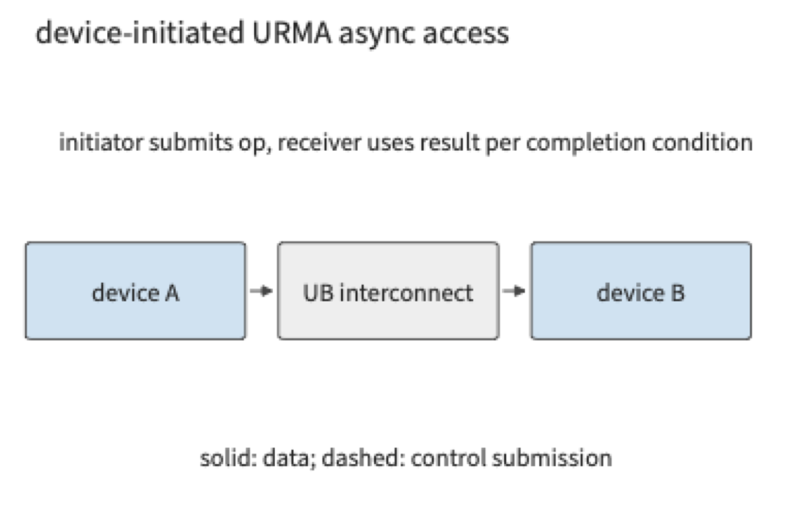
This change can be explained using the transfer-time formula from Section 7.2. Reusing the 50 GB/s link example from Section 7.2.2, the transfer time for 8 KiB of data is about 0.16 μs; if the startup time shrinks from 5 μs to 2 μs, the total time drops from about 5.2 μs to 2.2 μs — a saving of more than half. For a 64 MiB payload, the transfer itself takes about 1.3 ms, so the same 3 μs saving becomes negligible. Small transfers should therefore prioritize reducing submission overhead, while large transfers should prioritize higher bandwidth.
Having the host organize communication uniformly has the benefit of providing a general-purpose submission and completion-handling mechanism for arbitrary programs. In model execution, the producer, consumer, and readiness condition of the data are all well defined, so the frequent initiation and completion handling can be moved to the device side: the system establishes the address mapping and access permissions in advance, after which the device continuously initiates computation and communication without relaying through the host each time. The benefit is exactly the reduction in startup time seen in the example above.
The operating system is responsible for establishing mappings, setting permissions, and allocating resources; the device is responsible for fast, already-authorized operations; the completion notification hands the operation's result back to the runtime. Once responsibilities are divided this way, the thread that initiates communication on the device itself also becomes a limit on throughput. Analyzing this limit requires first determining how long a single request must wait, whether other requests can be initiated during that wait, and then computing how many requests can be processed per unit time.
7.3.3 Memory semantics: load/store versus read/write¶
To distinguish these two, first separate them by how the access is expressed. Remote access has two common expressions: the processor's load/store instructions, and explicit asynchronous read/write requests. Both need to track outstanding requests; the difference lies in who manages that tracking.
The result of a load can become the direct input to a subsequent instruction. The processor records this dependency and executes other independent instructions while waiting. An asynchronous request instead places the target address, length, and completion condition into a queue; software can submit multiple pieces of work in sequence and wait for the corresponding request to complete before using the result. The former hands the dependency to the instruction-execution mechanism; the latter hands it to events and the runtime. This book calls load/store synchronous access to emphasize that instruction dependencies are managed by hardware — not that the processor can only have one outstanding memory access at a time; modern processors can execute multiple independent loads in parallel, and stores can also enter a buffer first.
| Comparison | Load/store | Asynchronous read/write |
|---|---|---|
| Initiation and path | Processor instruction, reaching accessible memory via address mapping; on UB it can be handled by an on-die controller | Submits address, length, etc. as a request; advances via a queue, doorbell, or device-initiated interface |
| Dependency and completion | Hardware tracks the consumer of a load; the remote visibility of a store needs separate ordering guarantees | The runtime waits on a designated completion event before using the result or reclaiming the buffer |
| Typical use cases | Fine-grained reads, pointer access, data accessed frequently and needing low submission overhead | Bulk movement of activations, KV, weights, and explicit pipelining |
| Concurrency limits | Instruction dependencies, outstanding-access slots, address translation, and hardware resources | Request queue, completion queue, registered memory, software or device submission capacity |
| Fault handling | Depends on the platform's timeout, exception, and memory-fault mechanisms | Errors can be reported per request; timeouts, partial writes, and buffer reclamation must still be handled |
Both kinds of interface can adopt memory semantics, but cache coherence cannot be inferred merely from the interface's name. Single-sided read/write does not require the remote application to submit matching receive requests each time, but it still requires prior authorization and memory validity; load/store does not guarantee automatic coherence of caches shared across nodes either. The load/store path implemented in OpenURMA does not maintain cross-node cache coherence; the dependencies among write, publish, and read are arranged by the application itself. The PCIe round trip it eliminates comes from the change in controller location and request path — simply renaming a software interface to "load" does not yield the same benefit.31
Latency breakdown of a single remote read. Break the critical path of a single 64 B remote read into stages, assign a latency to each stage, and sum them to obtain the total time for that read. Three paths are compared here: an asynchronous read over a PCIe peripheral NIC, an asynchronous read over an on-die bus controller (UB's URMA interface), and a load instruction over an on-die bus controller. The given conditions are as follows: one on-die bus traversal takes 30 ns; one PCIe doorbell write takes 150 ns, one PCIe DMA read 500 ns and write 250 ns; one-way line propagation is 100 ns; a row hit on the target-side memory (the DRAM row holding the requested data is already open) takes 30 ns; NIC pipeline cycles are converted at a 322 MHz clock — 9 cycles for the peripheral NIC, 25 cycles for the UB asynchronous path, and 8 cycles for the load path; interface-library submission, request-descriptor construction, and completion polling all count as software overhead. The table below lists the stages in critical-path order; a blank cell means that path has no such stage.
| Stage | Category | PCIe peripheral NIC | UB asynchronous read | UB load |
|---|---|---|---|---|
| Interface-library submission | Software submission | 50 | 50 | |
| Construct request descriptor | Software submission | 30 | 30 | |
| Doorbell write | PCIe traversal | 150 | ||
| NIC DMA read of descriptor | PCIe traversal | 500 | ||
| On-die bus submission | On-die bus | 30 | 30 | |
| NIC send pipeline | NIC pipeline | 28 | 78 | 25 |
| Outbound line | Line | 100 | 100 | 100 |
| Target NIC receive pipeline | NIC pipeline | 28 | 78 | 25 |
| Target NIC DMA read of host memory | PCIe traversal | 500 | ||
| Target on-die bus memory access | On-die bus | 30 | 30 | |
| Target memory row hit | Memory and completion | 30 | 30 | 30 |
| Target NIC send response | NIC pipeline | 28 | 78 | 25 |
| Return line | Line | 100 | 100 | 100 |
| NIC receive response | NIC pipeline | 28 | 78 | 25 |
| Response payload DMA write | PCIe traversal | 250 | ||
| Completion record DMA write | PCIe traversal | 250 | ||
| On-die bus completion | On-die bus | 30 | 30 | |
| Completion queue polling | Memory and completion | 70 | 5 | |
| Interface-library polling | Memory and completion | 30 | 30 | |
| Sequence-number allocation serialization | Memory and completion | 50 | ||
| Total (derived) | 2222 | 746 | 419 | |
| Simulation measurement | 2236 | 757 | 500 |
The NIC pipeline times in the table have been rounded, and the totals are summed from the unrounded values. The path over the PCIe peripheral NIC totals 2222 ns, of which the five PCIe traversals account for 1650 ns; the UB asynchronous path has no PCIe stages and totals 746 ns; the load path also eliminates software submission and polling, totaling 419 ns. Figure 7-19 stacks the three paths by stage category as bar charts. In the author's OpenURMA implementation, under a two-node cycle-level simulation with the same conditions, the measured values were 2236, 757, and 500 ns, differing from the derived values by 14, 11, and 81 ns respectively. The discrepancy comes from the simulator's fixed overhead in passing data between modules; since the load path has the fewest stages and the shortest total time, this overhead accounts for the largest proportion there.32
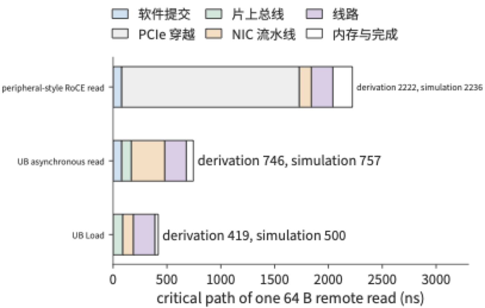
The extra stages in the PCIe peripheral NIC path are not nine independently optimizable inefficiencies but arise from three structural causes. First, the request must be written as a descriptor in host memory before the NIC reads it, hence the interface-library submission and descriptor-construction stages. Second, the NIC and processor each have their own address space, hence the doorbell write, descriptor DMA, and target-side DMA stages. Third, once the operation completes, the processor must be notified across address spaces, hence the response DMA, completion-record DMA, and two polling stages. Once the controller is attached to the on-die bus, the second category of stages merges into a single on-die bus traversal; once load instructions are used instead, the processor's own dependency tracking replaces the completion-notification mechanism, and the first and third categories of stages disappear entirely.
There is also a fourth path: the NIC remains a PCIe peripheral, but the request descriptor is constructed and consumed by a processor within the NIC itself — the third initiation location from Section 6.4.4. Working through the same table, this path eliminates the doorbell write and NIC DMA-read-of-descriptor traversals, saving 650 ns; the 80 ns for software submission and descriptor construction is instead performed on the NIC's own processor, valued the same way; the payload DMA write, completion-record DMA write, and target-side DMA read remain. The total comes to about 1572 ns, falling between the peripheral-style path's 2222 ns and the on-die bus path's 746 ns. What is eliminated is the traversal on the control path; what cannot be eliminated is that data and completion notifications must still cross two address spaces. This path was not simulated, only derived from the table's values.
As line latency changes, the gaps among the three paths change accordingly. The total time for each path equals a fixed overhead plus twice the one-way line latency \(L\): for the PCIe peripheral NIC it is 2022 ns plus \(2L\); for the UB asynchronous path, 546 ns plus \(2L\); for the load path, 219 ns plus \(2L\). Figure 7-20 plots \(L\) from 50 ns to 500 ns: the three lines have the same slope but different intercepts, and the absolute gap remains roughly 1.8 μs throughout, while the relative gap shrinks from 5.3× at \(L=100\) ns to 2.5× at \(L=500\) ns. The shorter the line, the greater the relative benefit from controller placement — which is why this benefit is most pronounced within a supernode; over long links spanning a datacenter, the line latency itself becomes the dominant part of the total time. These two components differ in nature. \(2L\) is set by the signal-propagation speed and cannot be eliminated by any path — it is the physical lower bound on a single remote read. The portion of the intercept above the load path's value is the cost of the abstraction layer, of which the five PCIe traversals alone account for 1650 ns. The 14, 11, and 81 ns gaps between derived and simulated values fall into the first category of gap described in Section 1.3.4: the model omitted the simulator's fixed inter-module overhead, and once that term is added back the gap disappears — there is no need to go hunting for implementation overhead.
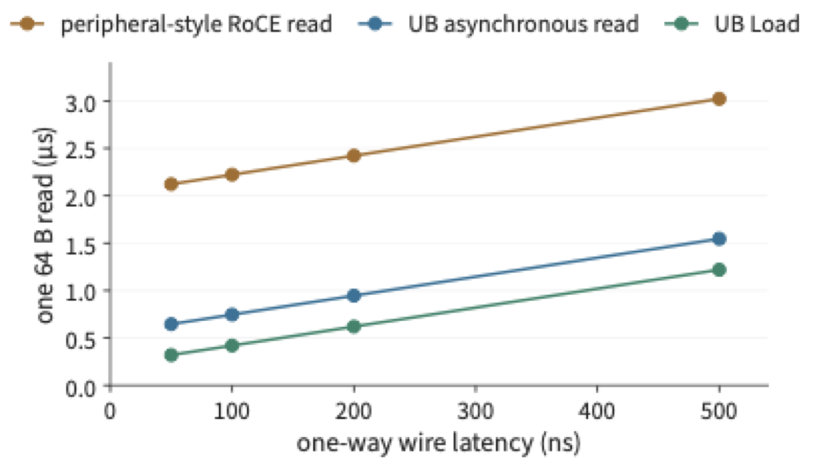
Now use the same access latencies to compare concurrency and dependency, and then discuss data reuse. The former applies to both kinds of interface; the latter is a placement choice — "access remotely on demand, or move the data back locally in advance" — and is independent of the interface used. Direct remote reads are not equivalent to load, and moving data back in advance does not correspond to any particular interface either.
Consider eight mutually independent remote reads. Hardware can process all eight at once, each taking about 2.2 μs over the PCIe peripheral NIC path (submission overhead already included). Issuing them one at a time as "send, wait, use" takes about 17.8 μs; issuing all eight together, the results all arrive about 2.2 μs later. If the first read returns the address for the second, and the second returns the address for the third, then each read must wait for the previous one's return before issuing the next. How many reads can be issued concurrently depends on how many requests have known addresses and are mutually independent.
Parallel reads exploit the independence between different requests. If multiple requests access the same piece of data, a different relationship can be exploited: on the first access, move the data locally, and reuse that copy for subsequent reads. Suppose a consumer will completely read an immutable 144 MiB KV snapshot, and there is enough local space to hold it. Both remote reads and the staging transfer go through this chapter's NIC, at 50 GB/s per direction; local reads use the H100's HBM bandwidth of 3350 GB/s. Including startup and destination-side write, one remote read costs about 3.02 ms, one staging transfer's fixed cost is about 3.07 ms, and each subsequent local read afterward costs about 0.046 ms.16
Let \(r\) be the number of reuses. The times for the two paths are approximately
Reading after staging becomes faster once \(r>3.07/(3.02-0.046)\approx1.03\) — that is, starting from the second full read. For a single read, direct remote access is slightly faster (3.02 ms versus 3.12 ms); for four reads, staging locally first shortens the total time from about 12.1 ms to about 3.3 ms, and the network only needs to transfer the snapshot once, cutting the transfer volume from 576 MiB to 144 MiB. Figure 7-21 depicts the two usage paths, and Figure 7-22 plots the crossover point of cumulative time.
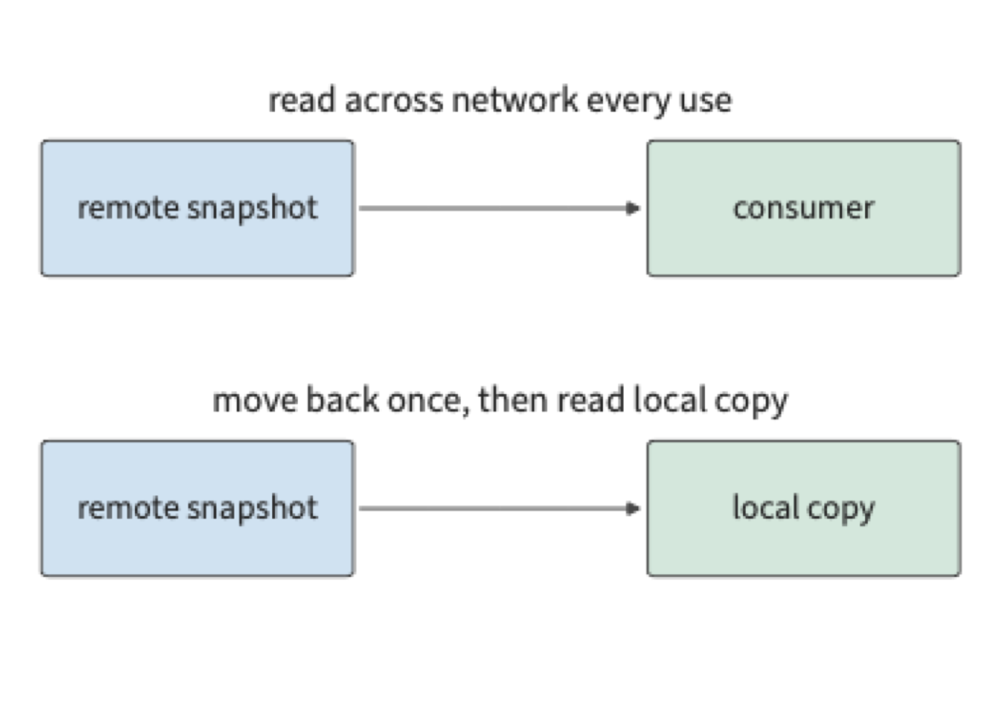
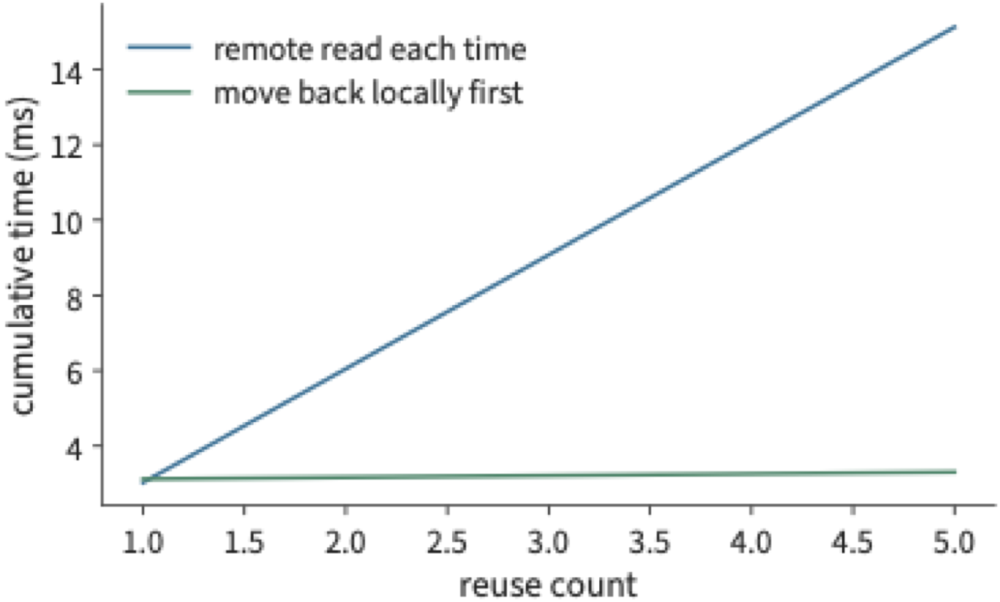
The difference between the two curves comes down to "pay a one-time staging cost, versus reading across the network every time." Now let's change the range accessed on each read. If a single call only accesses a small portion of the snapshot's locations, it can pass by reference, letting the remote function read the data on demand. Suppose each read only accesses 10% of the snapshot, while the staging approach still copies the entire snapshot. In this case, the cost of on-demand remote reads becomes about \(0.302r\) ms, each local access after staging costs about 0.0046 ms, and the crossover falls at about 10.3 reads — so only starting from the 11th read does staging locally save total read time (Figure 7-23).
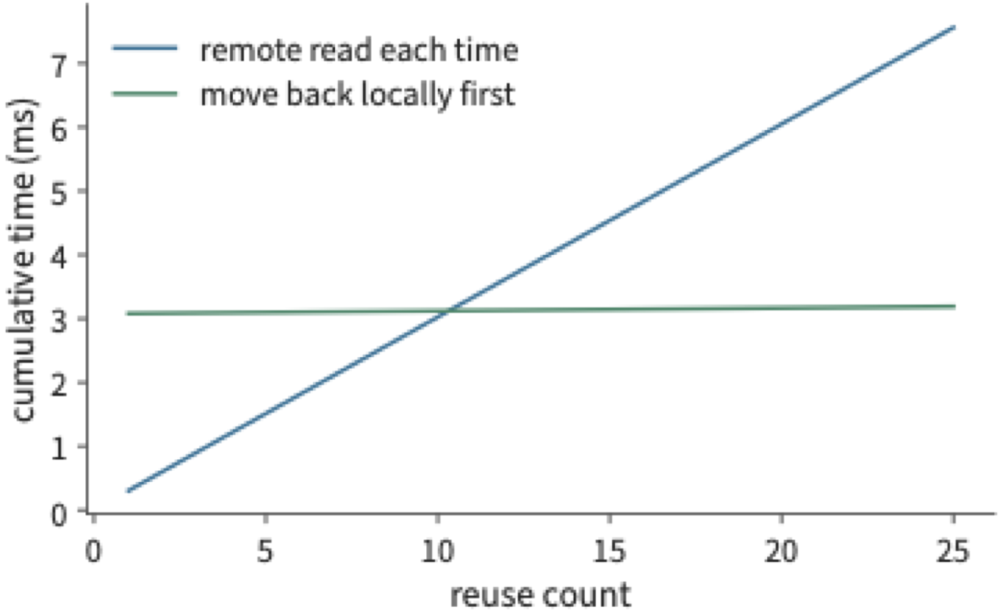
The choice between on-demand remote reads and staging the entire snapshot locally should therefore depend on the access range and the number of reuses. URPC is a remote procedure call interface over the unified interconnect, providing remote access in the form of function calls and supporting this pattern; passing by reference lets the callee fetch only the data it actually needs. Section 7.4 will explain when to notify other devices to use these objects, and when to release the space they occupy.2
7.3.4 Concurrency and throughput models¶
Section 7.3.3 used reuse to reduce the number of remote reads; for requests that must still cross the network, the link needs to always have data to transmit. This section analyzes how many concurrent requests are needed for a path with 50 GB/s per direction on a single NIC, as used in this chapter's examples. A request slot is a record holding the address, length, and status of one outstanding request: it is allocated on submission and released once the completion status has been processed, and it cannot be reused by a new request before then. Suppose each remote access transfers 256 B, and it takes 2 μs from issuing the request to releasing the request slot. In that 2 μs, the link can transfer 100,000 B, equivalent to the data volume of 390.6 accesses. To keep the link continuously supplied with data during the wait, at least 391 in-flight transactions — requests issued but not yet fully processed — must be maintained. Figure 7-24 depicts the lifecycle of a slot from allocation to release.
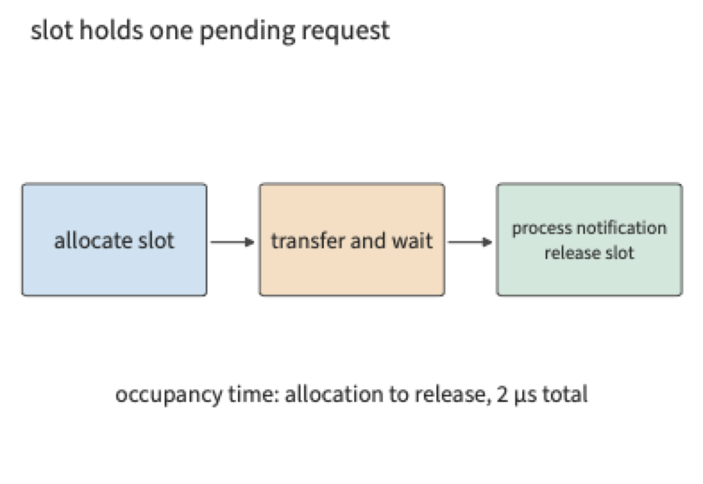
In general, if each transaction's payload is \(m\), the slot occupation time is \(T\), and the target bandwidth is \(B\), the required concurrency is
The bandwidth-latency product is the product of the target bandwidth and the wait time, representing the amount of in-flight data needed to keep the link continuously utilized during that wait. Dividing by the per-transaction payload then yields the number of requests. The faster the link and the longer the wait, the less data each return carries, and the more outstanding requests the system must track simultaneously.
Example 7.3: Why insufficient in-flight slots for remote reads prevent full use of the egress bandwidth. Each transaction transfers 256 B and occupies a slot for 2 μs, with a path bandwidth of 50 GB/s. Find the effective read bandwidth when using 128 active slots; then, given that the shortest interval between two consecutive transactions launched by the request-processing unit is 18.6 ns (the value for the RoCE reliable-connection implementation discussed later in this section), find the effective bandwidth upper bound when both the slot count and the launch rate limit throughput simultaneously.
Solution: 128 slots turn over once every 2 μs, providing \(128\times256\) B of payload, which gives at most about 16.4 GB/s. With only one transaction in flight, it would be 0.128 GB/s. How many slots have been allocated and how many are actually in use simultaneously are two different quantities.
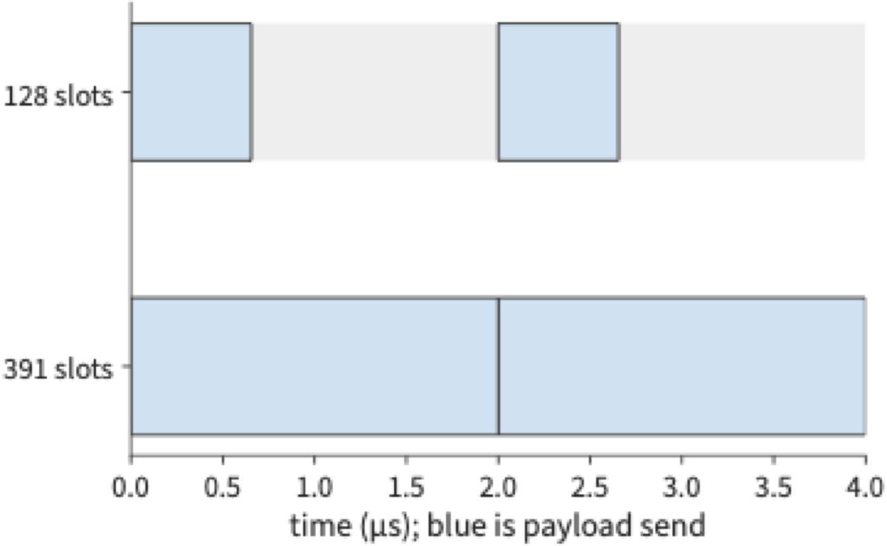
The gray intervals in Figure 7-25 arise because slots have not yet been released; even with enough slots, requests might not be submitted in time. If the request-processing unit launches one transaction every 18.6 ns, it can launch about 54 million per second at most, and 256 B transactions can only provide about 13.7 GB/s — even lower than the 16.4 GB/s that 128 slots would give. Even increasing to 391 slots, the request-processing unit still cannot submit requests fast enough to reach that rate. Combining the path bandwidth, the number of in-flight requests, and the launch rate into a single constraint gives
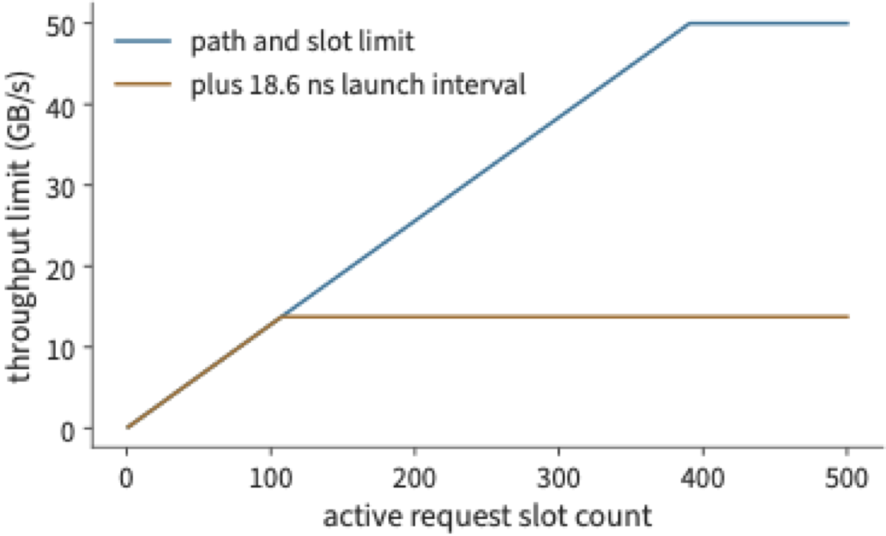
Here, \(T\) is the time a single request occupies a slot, and \(\delta\) is the shortest launch interval between two consecutive requests. The former determines how soon a slot can be reused; the latter determines the maximum number of requests that can be launched per second. Figure 7-26 compares the effective bandwidth when only the slot constraint is considered against when the launch-rate constraint is added.11
Discussion: how much concurrency does a remote read need to reach 50 GB/s? Keeping 256 B transactions, the launch interval would need to shrink to \(256/(50\times10^9)=5.12\) ns — shorter even than the 6.2 ns of the UB implementation discussed below — while maintaining at least 391 in-flight operations. Another approach is to merge adjacent accesses: switching each transfer to 4 KiB, a launch interval of no more than 82 ns suffices to reach 50 GB/s; an 18.6 ns interval then corresponds to about 220 GB/s, far exceeding the link — and with a 2 μs wait time, only 25 slots are needed to sustain 50 GB/s. The former increases the transaction rate; the latter transfers more data per request, lowering the per-byte submission overhead.
A concrete source of the launch interval \(\delta\) can be seen in OpenURMA's implementation: the slowest stage of the send pipeline accepts one request every 2 clock cycles, giving \(\delta\approx6.2\) ns at 322 MHz, or about 161 million requests per second at most. In a comparison using the same toolchain to implement RoCE reliable connections, each connection's sequence-number allocation has a sequential dependency, so each request takes 6 cycles, giving \(\delta\approx18.6\) ns, or about 54 million per second. Simulated with continuous bursts of 256 requests, the measured sustained rates were 150 and 54 requests per microsecond, respectively: RoCE matches the derived 53.7 per microsecond, while UB comes in about 7% below the derived 161; when the burst is extended to 1000 requests, UB rises to about 159 per microsecond, within about 1% of the derived value. Substituting into \(m/\delta\): at 64 B per request, the two give 10.3 GB/s and 3.4 GB/s respectively; at 4 KiB per request, 660 GB/s and 220 GB/s — both far exceeding the 50 GB/s per direction of this chapter's 400 Gbit/s NIC. That is, with small payloads the bottleneck is the request rate, while with large payloads the bottleneck shifts to the line.32
Why reads and writes are limited differently. The \(N\) and \(\delta\) in the formula have clear origins on PCIe. PCIe is a packet-switched bus, and each DMA read or write is a transaction layer packet (TLP). Writes are posted transactions: the packet carries the address and data and is issued as complete once sent, without waiting for a response. Reads are non-posted transactions: a request packet carrying a tag is issued, and the data is returned by one or more completion packets, matched back to the original request via the tag. The number of read requests a sender can have in flight simultaneously is limited by two things: the credits the receiver has pre-allocated for that transaction type, and the number of tags the sender can allocate. Figure 7-27 depicts the two types of transaction.
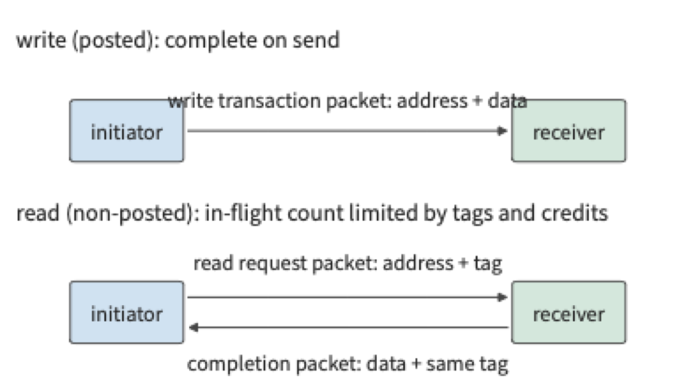
The limits imposed by credits and tags can be observed on real platforms. The author measured both limits in KV-Direct. The programmable NIC used accesses host memory over PCIe Gen3 x8, with a theoretical bandwidth of 7.87 GB/s; each 64 B DMA read or write carries a 26 B packet header and padding, so the packet-overhead-based upper bound is 5.6 GB/s, or 87 million operations per second. The round trip for a random DMA read is about 1050 ns, requiring 92 concurrent reads to saturate the link; but the host only issues 84 credits for DMA reads, and the FPGA's DMA engine only supports 64 tags, so at most 64 reads can be in flight, giving an upper bound of about 61 million per second when divided by the 1050 ns round trip; measurements show 64 B random reads achieving about 60 million per second, closely matching this upper bound. Writes need no response and consume no tags, and measurements come close to the upper bound given by packet overhead alone. Figure 7-28 plots these several upper bounds together: reads are limited by the in-flight count, writes by the packet-processing rate — exactly an instance of \(Nm/T\) and \(m/\delta\) each taking effect separately. Having the NIC pipeline address computation, memory access, and result handling itself is precisely what lets it keep issuing other requests while waiting for one read's result. These numbers also illustrate the checking order from Section 1.3.4: successively refining the model with the link bandwidth, packet overhead, and in-flight tag limits until it is within about 1.6% of measurement — at that point the model has no remaining omissions, and the residual gap need not be pursued further.12
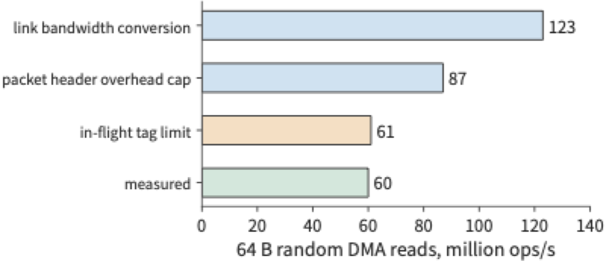
When the same PCIe link is shared by two kinds of traffic, this asymmetry turns into unequal contention. Suppose the direction into the GPU on the GPU's PCIe link carries two flows simultaneously: the NIC delivers remote data directly into GPU memory via posted writes; the GPU's copy engine is meanwhile copying data from host memory into the GPU, issuing read requests whose data returns to the GPU as completion packets. Once the link is saturated, posted writes must keep advancing per protocol, while the read side, once its in-flight tags are exhausted, cannot issue new requests and must wait for completion packets to return — receiving far less than half the bandwidth. The direction leaving the GPU is different: the GPU's copy to the host is a posted write issued by the GPU, while a remote read of GPU memory requires the GPU to reply with a completion packet; both must first fetch data from HBM and then send it out through the GPU's send path, so the bottleneck lies inside the GPU rather than on the link, and the two flows degrade more symmetrically. Figure 7-29 depicts both directions. To judge this kind of contention, first determine whether each flow is a posted write or a completion-bearing read, then see on which side of the link they converge and through which shared component. Later PCIe benchmarking tools such as rPCIeBench, studying shared PCIe paths, have also shown that in-flight workload and entry-point contention change how bandwidth is allocated.15 The formula above can be used to judge the bottleneck: whether the link bandwidth is exhausted, whether request slots have not yet been released, or whether the request-launch rate is too low.
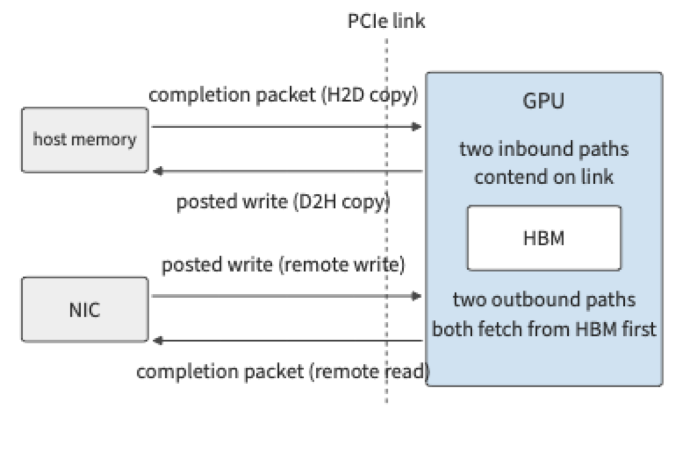
Hierarchical reduction reduces cross-server payload, and concurrent submission keeps the network transmitting continuously; the program still needs to know when this data can be used, and when the space it occupies can be released.
Experiment 7-8 · Extension: how many in-flight transactions are needed to saturate remote-read bandwidth
In Example 7.3, increase the slot occupation time from 2 μs to 4 μs; this time is measured from when the request is issued to when the slot becomes reusable. Find the number of in-flight transactions needed to sustain the target bandwidth for 256 B and 4 KiB transfers respectively. Fixing the launch interval at 18.6 ns, find the minimum transaction size needed to reach 50 GB/s; then recompute using the UB implementation's 6.2 ns. Finally, change the independent addresses to a pointer chain, and explain how the time needed to read through the entire pointer chain grows with chain length.
7.4 Data Handoff, Ordering, and State Management¶
7.4.1 Shard Creation, Consumption, and Buffer Reuse¶
Once data arrives, the receiver may not yet have started using it, or may already be using it. This resembles handing a tray of materials to the next stage of a process: the tray has arrived, but the other side still needs time to process the materials in it, and the materials on the tray cannot be swapped for the next batch before it is finished. Mapped onto communication, send completion, data visibility to the receiver, and receiver consumption completion must be judged separately. Section 7.3.4 treated slot occupancy time as a given; this section follows these events to determine when a buffer can be released.
In hierarchical reduction, card 0 hands its local shard to card 8, and card 8 adds it to its own shard. The sender needs to know when the source buffer can be overwritten, the receiver needs to know when the destination buffer can be read, and the next write needs to know when this destination buffer can be overwritten. These correspond to three distinct events.
A shard goes through the following process from creation to release: data creation, writing to the remote side, making the data visible to the receiver, issuing a readiness notification, reading and processing the data, and finally releasing the space. Whether the source buffer can be reused depends on whether the interface's completion semantics guarantee that the transfer no longer reads it; for the receiver to start using the data, the write must first be visible to it, and readiness notifications must be published and checked according to convention; whether the destination buffer can be overwritten still depends on the receiver finishing its use of the data within it. Completion of the network transfer itself cannot substitute for a "finished using it" notification.
For example, sending completes at 5 μs, and the consumer starts reading at 8 μs and finishes at 12 μs. The sender can reuse the source buffer as soon as sending completes, but the destination buffer cannot be overwritten until 12 μs. If the next write overwrites the destination address at 6 μs, the consumer reads the next batch of data instead; every byte transferred over the network is correct, yet the receiving program consumes the wrong data.
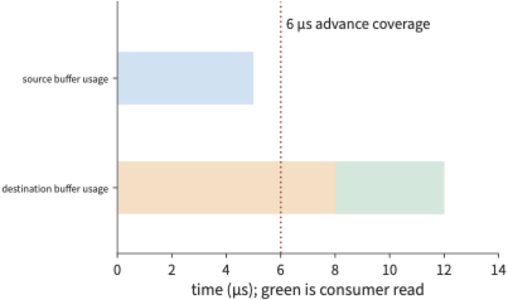
In Figure 7-30, the two occupancy intervals end at different events. Drawing "which event must occur before this can proceed" as arrows produces a dependency graph describing the correct handoff: nodes represent work, and an edge \(u\to v\) means that \(v\) must start only after \(u\) completes. For each node, taking the latest completion time among all its predecessors and adding its own execution time gives its completion time; the chain from start to end with the longest total time is the critical path.
This model explains both correctness and performance. Missing the "data visible → notification issued" dependency lets the consumer read unpublished data; extra edges forcing unrelated transfers to wait as well increase waiting. The task of state management is to record which nodes have completed, which dependencies have been satisfied, and which resources can be returned.
The ownership of buffers also affects the number of copies. If a communication library allocates a separate registered buffer for sending, the computation result must first be copied into it, metadata must be packed together with the data, and the receiver must then unpack it and move it into a contiguous region — all of this copying and packing consumes SM time. Having the computation write directly into a registered buffer avoids this step, but tightens the event ordering discussed in this section: sending can only be initiated after the computation finishes writing and the data is visible to the NIC, this buffer cannot be overwritten before sending truly finishes, and the receiver must also follow the same rules to determine when it can read and when it can reclaim.14
7.4.2 Separating the Transaction Layer from the Transport Layer: Jetty and Shared State¶
These dependencies and completion states need to be saved by the system somewhere. Does every added communication relationship require saving another identical set of transport records? A reduction among sixteen participants involves only a small number of communication relationships. As the system scales, one process has multiple threads, and each thread accesses multiple remote targets, so the number of relationships grows as a product. The application needs to record who submitted the request and to whom completion notifications should be sent; the transport layer needs to maintain sequence numbers, acknowledgments, retransmission, and congestion state. The former identifies the application, the latter guarantees reliable data transfer.
Application endpoints are the logical identities under which a program submits communication and receives completion notifications; transport state holds communication progress such as sequence numbers, acknowledgments, retransmissions, and send rate. Take 64 application endpoints, each accessing 128 remote targets, giving 8192 relationships in total. If a separate 1 KiB transport state is saved for each relationship, the transport portion alone occupies 8 MiB. If relationships pointing to the same target share a single transport state, only 128 copies are needed, totaling 128 KiB. What is saved is the transport state that would otherwise be kept separately for different communication relationships to the same target.
Application identity still needs to be retained. Each endpoint occupies 256 B, totaling 16 KiB; the binding information for each relationship occupies 64 B, totaling 512 KiB. Adding these parts, the total state with per-relationship exclusive storage is about 8.52 MiB, while sharing by target brings it to about 0.64 MiB. The number of transport state copies drops to 1/64 of the original, and the total state drops to about 1/13 of the original.18
Let \(L\) be the number of endpoints, \(P\) the number of targets, and let each endpoint, each relationship's binding information, and each transport state occupy \(e,r,t\) bytes respectively; then
The OpenURMA paper describes this separation in different terms: on a local interface with \(L\) application endpoints accessing \(P\) remote hosts, the core endpoint records and transport contexts grow as \(O(L+P)\); if every application relationship exclusively holds a reliable connection, this part grows as \(O(LP)\). This conclusion applies only to the core hardware state that can be shared; software mappings, permissions, outstanding requests, and caches do not all occupy only additive amounts of space. The equations above retain the \(LPr\) term because this teaching scheme explicitly accounts for per-relationship binding records; toward the end of this subsection we recompute once more using the record sizes from an actual implementation.31
The two equations directly show the space saved by sharing: \(LPt\) becomes \(Pt\), while the application relationship term \(LPr\) remains. UB separates Jetty from the transport channel (Section 6.5.5), adopting exactly this design: a single transport state can serve multiple application relationships.2
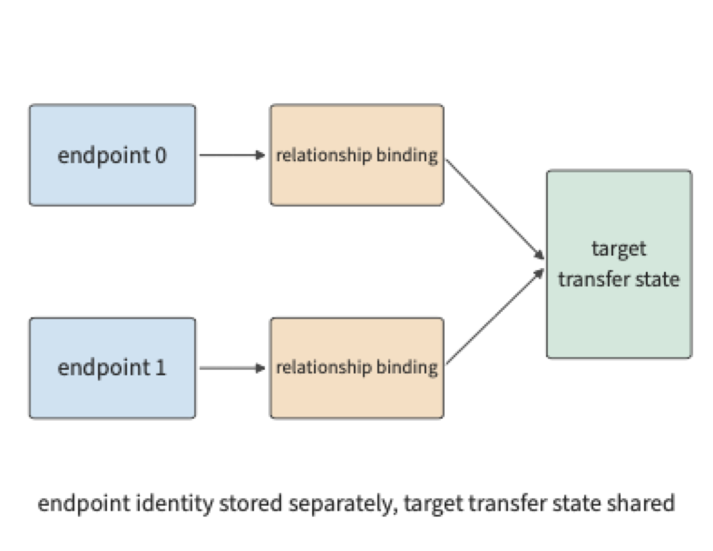
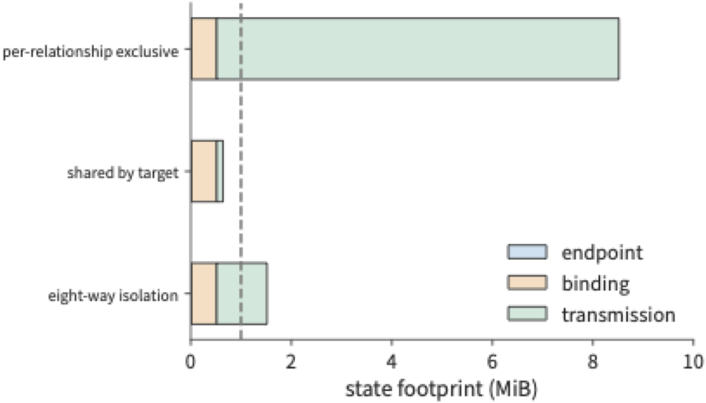
In Figure 7-31, multiple relationships reuse the same transport state, saving storage but potentially contending for that channel's send window, scheduling opportunities, and recovery resources. Layering does not require all transactions to be queued in a single globally ordered queue; the execution order, completion order, and packet arrival order of application transactions still need to be specified separately. If the implementation uses a shared first-in-first-out queue or sequential waiting, packet loss and long requests will cause head-of-line blocking (when the request at the head of the queue stalls, unrelated requests behind it can only wait); allowing independent transactions to keep making progress can reduce this impact, but it does not eliminate contention for shared bandwidth and windows. A large number of outstanding requests belonging to one communication relationship occupying a shared queue forces short requests from other relationships to wait. If \(K\) independent groups of transport state are established for different business purposes, total state becomes
Under the configuration above, the fixed portion is 528 KiB, and each additional group of independent transport state adds 128 KiB. 1 MiB of storage can hold at most three independent groups; four groups need 1040 KiB, already exceeding capacity; eight groups need about 1.52 MiB. Figure 7-32 plots the state capacity for these sharing strategies. Thus, business isolation must be arranged within storage capacity: allocating dedicated transport state for critical business while letting other business share can reduce the interference critical business experiences.
Besides sharing across different relationships, state can also be stored hierarchically. The complete state resides in main memory, while frequently used portions are cached on the NIC chip. Sharing can reduce duplicate records, letting a cache of the same size hold more communication relationships. Frequently used state staying in cache also reduces the number of reads of state from main memory. Thus, saving state space can also reduce request processing overhead.
Implementation record sizes and total state. The 256, 64, and 1024 B figures given earlier in this section are the values assumed for this section. The OpenURMA implementation's state structures give a set of sizes that can be checked against reality: 20 B per Jetty, 32 B per registered memory segment, 56 B per transport channel; for comparison, a RoCE reliable connection implementation saves a 512 B QP context per connection. Let there be \(N\) local endpoints accessing \(M\) remote endpoints; under the two organizational schemes, the state saved on the NIC is
Comparing with the earlier equations, here \(e=52\), \(t=56\), and \(r=0\): this implementation places relationship binding in a software mapping, and the NIC does not save hardware state for each relationship. At \(N=M=1024\), per-pair connections need about 512 MiB, while endpoints plus channels need only 108 KiB, a difference of about 4855x; even if the Jetty record is padded to the full set of fields in the specification (48 B), the ratio still exceeds three thousandfold. Figure 7-33 plots the two curves on a log scale: one with slope 2, one with slope 1, with their ratio growing linearly with \(N\).
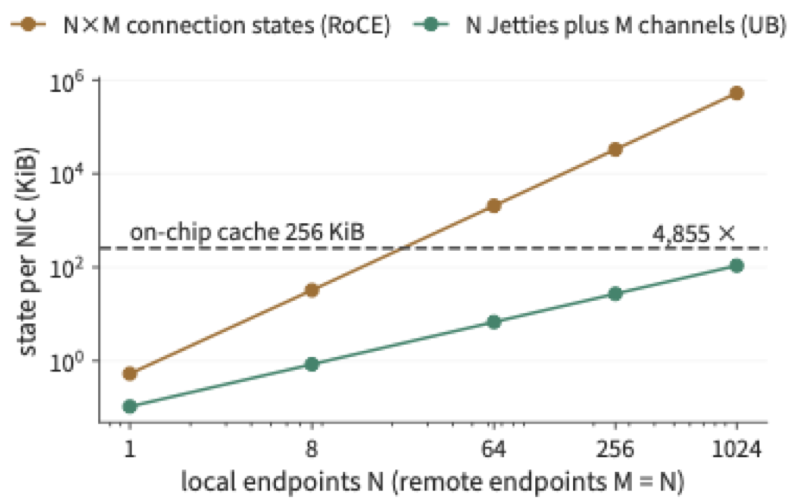
Total state and on-chip cache overflow. The NIC caches context on-chip, with the portion that doesn't fit spilling to host memory. Taking cache capacity as 256 KiB, per-pair connections overflow when \(512N^2+32N>262144\), i.e., \(N\ge23\); endpoints plus channels overflow when \(108N>262144\), i.e., \(N\ge2428\). After overflow, every operation must re-fetch context, and the cost depends on where the context resides: a PCIe peripheral NIC reads from host memory, with the initiator and target each performing one PCIe DMA read, adding about 1000 ns per operation; an on-chip bus controller reads from local memory, with both sides each performing one on-chip bus crossing and one memory access, adding about 200 ns. Figure 7-34 plots the latencies of these two paths, derived in Section 7.3.3, as a function of the number of active endpoints. All-to-all communication in training typically involves tens to thousands of endpoints, landing exactly in this range; within this range, every read under per-pair connections pays the cost of re-fetching context. The author's simulator determines overflow by entry count rather than byte count (512 entries for RoCE, 2048 entries for UB), placing UB's overflow point at 1024 endpoints; under both accounting methods the conclusion is the same: endpoints plus channels overflow more than an order of magnitude later, and the post-overflow cost is also an order of magnitude smaller.32
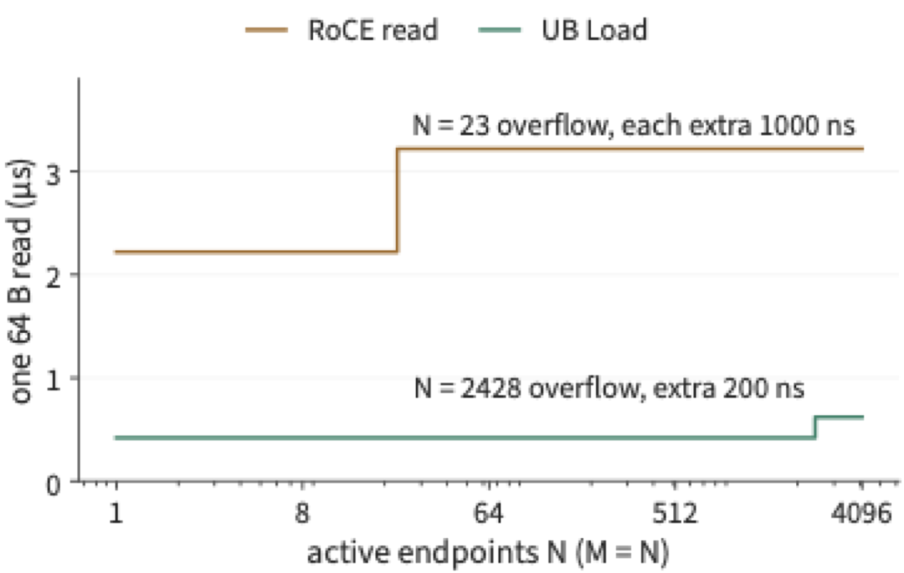
Experiment 7-9 · Extension: how many isolation groups can shared transport state support
Keeping 64 endpoints accessing only a single remote target, compute the total storage space required for exclusive versus shared transport state. Then change the number of active targets to 128 and raise available storage to 2 MiB; find the maximum number of complete isolation groups that fit. Compare the effects of increasing endpoint count versus increasing target count on fixed state and transport state. Finally, using the implementation's record sizes (20 B per Jetty, 56 B per transport channel, 512 B per connection context), find the overflow endpoint count for each organizational scheme when on-chip cache is 1 MiB.
7.4.3 Operation Dependencies and Failure Isolation¶
Section 7.4.2 reduces interference between different business units through independent transport groups. Unnecessary waiting can also arise within a single group of operations, depending on which operations the system forces to complete in sequence. Take card 0's shard-publishing process as an example. Operation A writes data D, operation B publishes a "D is ready" notification, and operation C transfers another unrelated piece of data. To use D correctly, the A→B order must be maintained, while C can use a separate, independent transport path.
Example 7.4: Which operations complete earlier when ordering constraints are relaxed? Writing by A takes 20 μs, followed by a recovery step of 80 μs, after which D becomes visible; B takes 2 μs; C takes 10 μs. Compare two arrangements: A, B, C completing in sequence, versus requiring only that B execute after A completes.
Solution: The write-recovery-notify dependency chain takes \(20+80+2=102\) μs. The serial arrangement makes C wait until 102 μs to start, with the whole group finishing at 112 μs. Keeping only the necessary dependency lets C start at time zero and finish at 10 μs; the notification chain still finishes at 102 μs. The whole group finishes 10 μs earlier, while C finishes 102 μs earlier. Figures 7-35 and 7-36 plot these two arrangements respectively.
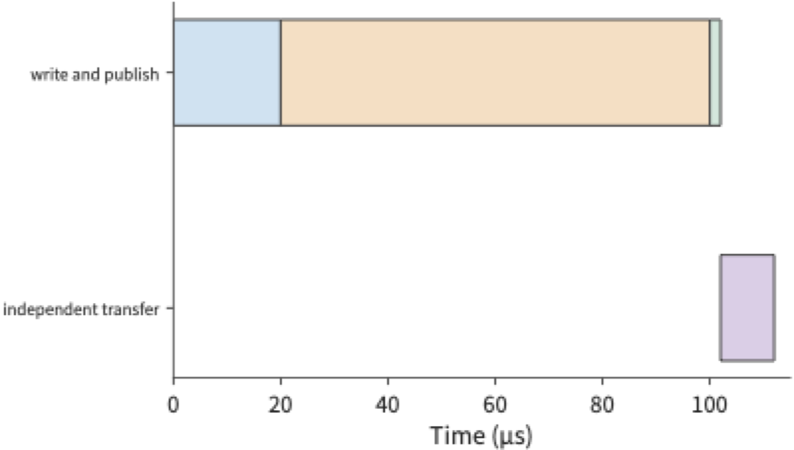
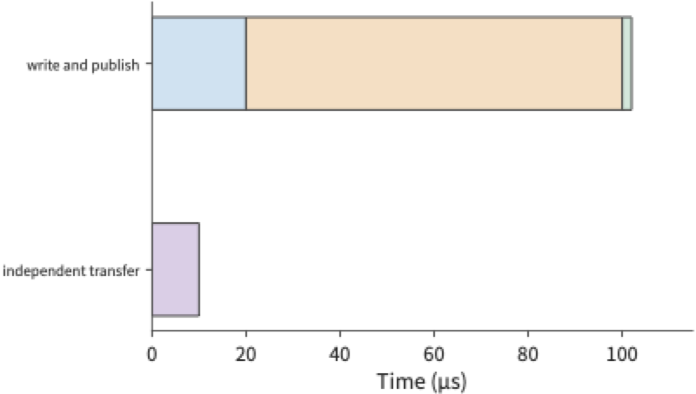
If the recovery time increases to 200 μs, C in the serial arrangement finishes only at 232 μs, while C in the independent arrangement still finishes at 10 μs. Removing the unnecessary dependency confines the stall caused by recovery to the chain that truly needs this data. For downstream tasks waiting on C, this isolation matters far more than the whole group finishing 10 μs earlier.17
Global ordering makes it easy for higher layers to describe the sequence of operations, but it also folds independent work into the same waiting chain. Once the computation graph makes the A→B publication dependency explicit, the interface and runtime can provide ordering guarantees around this dependency while letting C proceed independently. When the application provides more precise dependency information, the network only enforces ordering for the relevant operations accordingly, both guaranteeing that the receiver reads already-written data after receiving the notification and reducing unnecessary waiting.
Now suppose all operations share a single processing unit: from when A starts writing to when B completes the notification, that unit stays occupied, and C can only execute afterward. In this case, resource usage itself adds an ordering edge from the notification chain to C, and both arrangements finish at 112 μs. Program dependencies and resource dependencies must therefore be drawn on the same graph: reducing ordering constraints in the program still leaves resource constraints limiting the degree of parallelism.
Design case: hardware cost of ordering specified on demand. The author's OpenURMA implementation places UB's four ordering-service modes and three execution tags on the same send pipeline. Cycle-level simulation shows: regardless of which ordering a request requires, it takes 24 cycles from submission to the first packet leaving; only when a request explicitly requires waiting for prior operations to complete does the ordering tracker make it wait, and with at most four outstanding prior operations, the wait does not exceed 50 cycles, about 155 ns; requests that do not require ordering bear none of this overhead. More important is the isolation effect: stalling one initiator's request at the point where it waits for prior operations does not drag down four other initiators, whose 8 requests that do not require ordering are all still issued within 78 cycles (about 242 ns). As a contrast, requests within the same QP in a RoCE reliable connection must execute strictly in order — when one request waits, all subsequent requests wait as well. This is exactly the hardware manifestation of the arrangement in Example 7.4 where C is placed after A and B.31
Design background: how does global ordering simplify replication and coordination?
The author explored a design in the 1Pipe research where the network provides a global total order. All participants observe operations in the same order, letting higher layers use simpler ordering models for replication and coordination. When handling failures further, ordering and delivery need to be addressed separately: if a sender exits midway through sending, the system must determine which nodes have already received it; if a receiver exits permanently, the system must decide which work continues to run. These issues require separating the ordering guarantee from the delivery and recovery mechanism, and clearly expressing the dependencies the application actually needs.
The example above requires the notification to be issued only after the write completes. The receiver must also read the data at the correct moment, or else it may use a stale value even if the notification ordering is correct. Suppose D's initial value is 0, updated to 1 at 2 μs; the ready flag becomes visible at 3 μs. The consumer reads D early at 1 μs and reads the flag at 4 μs. At that point, it holds the new flag but the old data. Even if the read result is returned at 5 μs in "flag, then data" order, the D it saved is still 0.
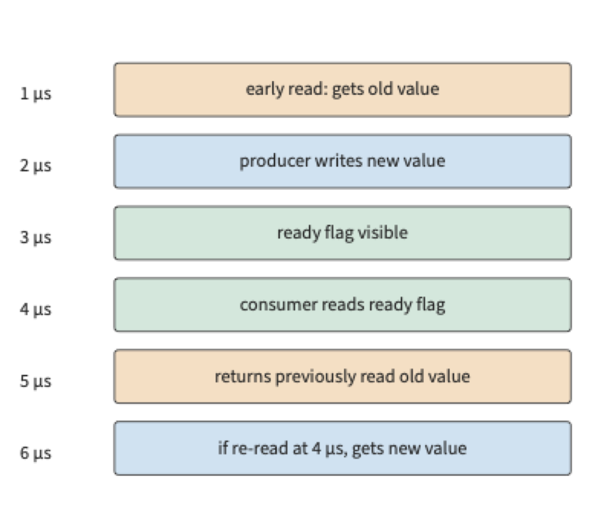
In Figure 7-37, moving the hollow point marking the result-return time later does not move the solid point marking the actual read time. This counterexample shows that ordering requirements must be enforced at the moment data is actually read. The consumer can either read D only after observing the flag, or read early, check for conflicts, and reread. If a conflict is detected at 4 μs and rereading takes 2 μs, the correct data is obtained at 6 μs. Ordering at the receiver side moves the wait to the receiving end, while conflict checking is responsible for determining which early reads remain valid. Relying on ordering guarantees to simplify programming requires saving this state and performing the corresponding checks.
7.4.4 Request Slot Release and Backpressure¶
The request slots discussed in Section 7.3.4 are only released once software has finished processing the completion notification, after which a new request can use them. The data buffer discussed in Section 7.4.1 has a separate usage window: while the receiver hasn't finished using the data, that buffer must remain reserved. If transfers speed up but completion notifications aren't processed promptly enough, a large number of "operation completed, slot not yet released" requests accumulate.
Take 16 operations, each transferring 8 KiB, submitted at most once every 1 μs, completing 5 μs after submission. With 16 slots, the last one is submitted at 15 μs, and all transfers finish by 20 μs. If software reads and processes four completion notifications every 20 μs, 16 notifications need four rounds, and the corresponding slots are not all released until 80 μs.
If there are only eight slots, the first eight submissions quickly fill all slots. The ninth submission must wait until 20 μs, when software has processed the completion notifications and released slots; subsequent requests continue to be submitted in batches, with all transfers not finishing until 48 μs. Doubling the slots moves the transfer completion time from 48 μs to 20 μs, but releasing all slots still doesn't finish until 80 μs.19
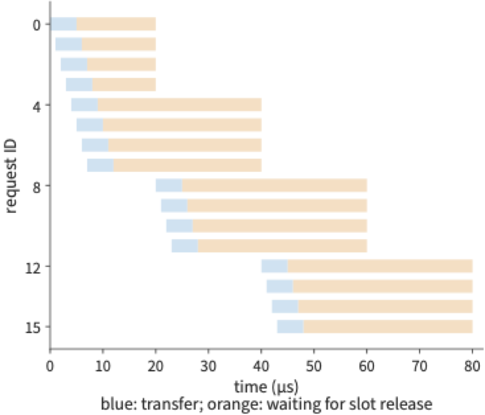
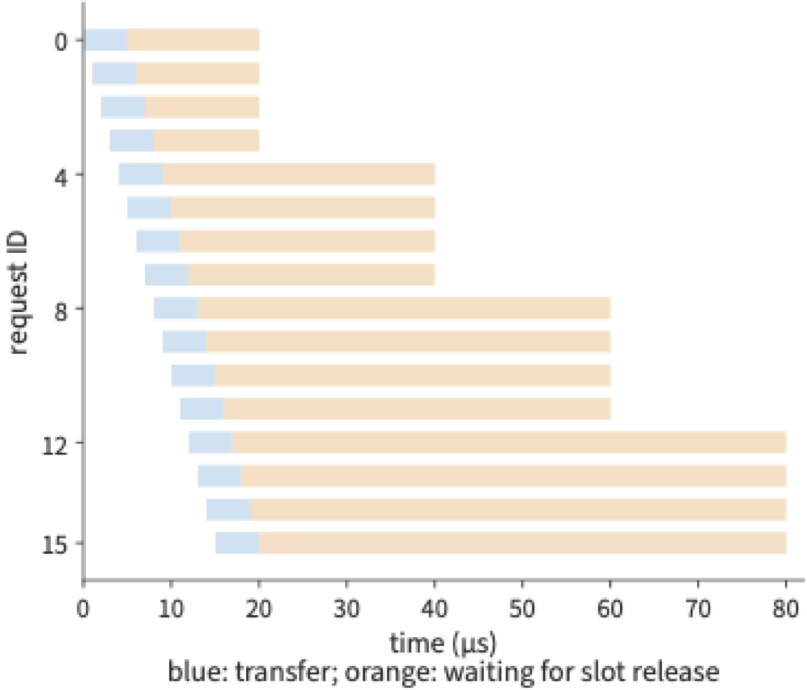
Comparing Figures 7-38 and 7-39, adding slots moves the blue transfer bars earlier, but the longer orange waiting period on the right still remains. What determines sustained throughput is how quickly these slots are ultimately released. Viewed through the concurrency and throughput model, the thread processing completion notifications handles only \(4/(20\times10^{-6})=200000\) items per second; at 8 KiB per item, that corresponds to a sustained processing capacity of about 1.64 GB/s. With this operation size, reaching a single NIC's 50 GB/s requires processing about 6.1 million items per second, roughly one every 0.164 μs. Adding slots can only absorb brief surges in request volume; sustained load requires either raising the completion-notification processing rate or increasing the payload per operation.
When completion notifications are processed too slowly, upstream submission needs to be constrained — this is exactly the backpressure introduced in Chapter 5: once request slots are exhausted, the endpoint pauses or slows down submission until slots are released; backpressure controls the upstream side by limiting the number of outstanding requests, preventing outstanding work from growing without bound. If a buffer can only be released once the remote program finishes using the data, backpressure propagates across devices; when many pieces of work share transport state, the scope of propagation is even larger.
After a failure occurs, old requests must also be terminated before their occupied space can be released. After canceling a request, the system first stops new submissions, then waits for or isolates old in-flight accesses, and only then releases the space. Otherwise, a late-arriving old write will overwrite the new object. Assigning a new version number to each reused object, revoking access permissions, and isolating disconnected endpoints all serve to prevent old requests from accessing space that has already been reallocated. After a timeout triggers recovery, the system must first confirm that old requests have ended, or block them from continuing to access the space, before reusing it. When multiple endpoints share a network, the same gap between arrival rate and processing rate turns into a queue inside the switch.
Experiment 7-10 · Core: how does relaxing operation ordering reduce waiting while keeping data correct
Change the duration of independent operation C in Example 7.4 to 50 μs, and find the completion times of the whole group and of the independent operation under both arrangements. Then assume the consumer needs 30 μs to process the data after receiving the notification, and mark the earliest time at which the destination buffer can be written with new data. For the stale-value counterexample, draw two execution paths: one reading after waiting, and one reading early followed by a reread upon conflict detection.
7.5 Congestion and Reliability in Shared Networks¶
7.5.1 From Fixed Traffic to Time-Varying Demand¶
Add to the configuration from the previous sections one more training job using two servers, and place both jobs on the multi-rail topology from Section 7.2.5: the two servers of each job belong to different groups (32 servers per group), so cross-server traffic on the same rail no longer arrives in a single hop but must go through the leaf switch's uplink to the spine layer; the flows of both jobs on this rail get hashed onto the same 400 Gbit/s uplink, 50 GB/s per direction. The cross-server phase of hierarchical reduction has each NIC sending at 50 GB/s, and when the two jobs' peaks overlap, demand exceeds this link's transmission capacity.
Example 7.5: Only 40% of link bandwidth is used on average — why does queueing still occur? Each of the two jobs has a 20 ms communication peak every 100 ms, both peaking at a rate of 50 GB/s, sending nothing the rest of the time. Assume the queue starts empty, both jobs send according to this schedule, and the buffer is large enough to hold all backlog.
Solution: The average total demand of the two jobs is
Compared with 50 GB/s, average utilization is only 40%. But when both peaks start simultaneously, the arrival rate exceeds the outgoing rate by 50 GB/s, and within 20 ms the backlog grows to
After the peak ends, it still takes \(1\ \mathrm{GB}/50\ \mathrm{GB/s}=20\) ms to drain. Both jobs stop sending at 20 ms, but the outgoing link needs another 20 ms of transmission to finish sending this backlog. If the second job is delayed by 20 ms, the peaks are entirely non-overlapping, at most 50 GB/s arrives at any instant, and the queue stays empty. Both arrangements send the same total amount of data; the difference lies in the relative timing at which the two jobs start sending. Figure 7-40 plots the arrival rate under different degrees of peak overlap, and Figure 7-41 plots the corresponding backlog.20
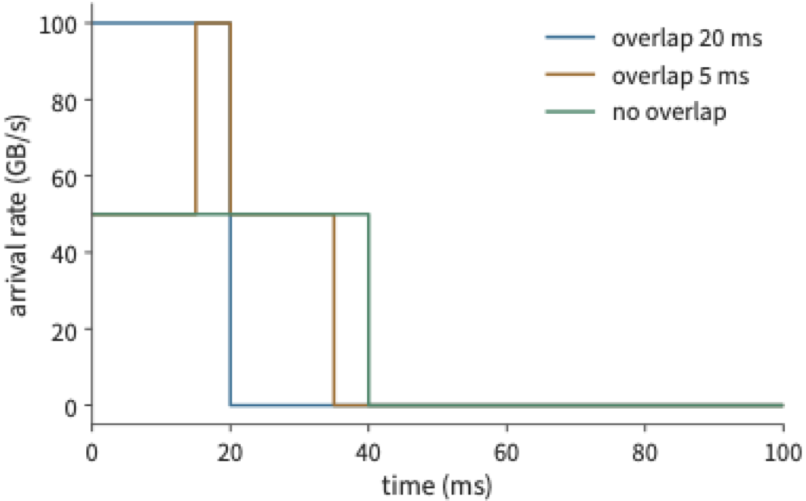
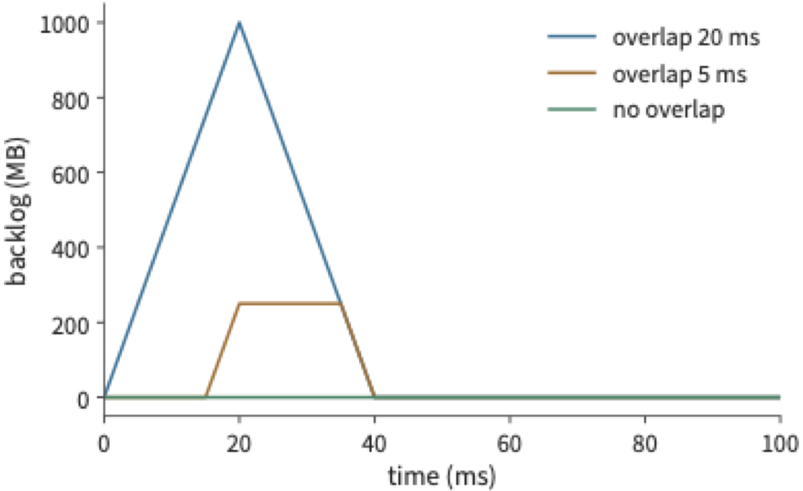
Discussion: how much offset in sending time is needed to create backlog on a shared outgoing link? When the overlap duration is \(h\), the added backlog is \((100-50)h\). An overlap of just 5 ms already produces 250 MB of backlog. If only 512 KiB of buffer is reserved for this burst, starting from an empty queue, the tolerable overlap duration is about \(512\ \mathrm{KiB}/50\ \mathrm{GB/s}=10.5\) μs. Even if the error in sending time only causes millisecond-scale overlap, it far exceeds what this buffer can tolerate.
The idea of staggering peaks has already been implemented in systems. CASSINI exploits the periodicity of training communication to arrange job placement and communication timing to stagger peaks, while monitoring drift and readjusting.21 The experiments accompanying this book ran a controlled comparison using two CPU-based distributed data-parallel (DDP) training jobs with a one-time peak offset: after delaying one job by 50 ms, the phase of the two jobs continued to drift during the run, and across three rounds of measurement, the overall job completion time actually increased by about 2% to 3%.22 Periodic scheduling requires continuously maintaining phase; congestion control, by contrast, adjusts the send rate in real time based on feedback about deviations from expectation.
7.5.2 Feedback Delay and Buffer Capacity¶
Staggering peaks reduces peak overlap, but actual transmission still deviates from the plan. So we also need to slow down the sender promptly once the queue starts to grow. When data arrives faster than the outbound link can send it, the excess accumulates in a queue. Let queue length be \(Q\), arrival rate be \(\lambda(t)\), and outbound rate be \(B\). While the queue is nonempty and not full,
When the arrival rate exceeds the send rate, the queue grows; when the arrival rate falls below the send rate, the backlog shrinks.
There are two mechanisms for lowering the arrival rate promptly. Link-level flow control lets a neighboring receiver pause the upstream sender when its buffer runs low, preventing overflow of the receive buffer. End-to-end congestion control carries bottleneck information back to the sender, lowering the send rate. The former quickly blocks local overflow; the latter lets the source's send rate adapt to the capacity of the entire path.
Continuing with 100 GB/s arrival against a 50 GB/s outbound rate, suppose the total buffer is 512 KiB and 256 KiB is already occupied. Each additional microsecond brings 50 KB more data than departs, consuming the remaining space, which can sustain this for only about 5.2 μs. If feedback does not slow the sender until 20 μs, it will generate 1 MB of excess data; after subtracting the remaining space, about 738 KB gets dropped.23
Denote the remaining buffer as \(Q_{\mathrm{free}}\) and the delay from congestion detection to slowdown as \(T_f\). Avoiding this overflow requires
So, given the arrival and send rates, we can work backward from the buffer size to the allowable feedback delay. Doubling the remaining space doubles the tolerable feedback delay; doubling the gap between arrival and outbound rate halves the tolerable feedback delay. At the rates above, if slowdown takes 50 μs, an extra 2.5 MB accumulates.
After feedback arrives, the backlog still has to be drained. Slowing the sender to exactly 50 GB/s makes the arrival rate equal to the outbound send rate, so the existing queue stays constant; slowing to 40 GB/s leaves 10 GB/s of margin per second for draining, so 512 KiB takes about 52 μs to clear. Counting from the start, the queue returns to zero at about 72 μs. Congestion control must both stop the queue from continuing to grow and leave margin for draining the backlog. Figure 7-42 shows this feedback loop, and Figure 7-43 shows the buffer filling and draining.
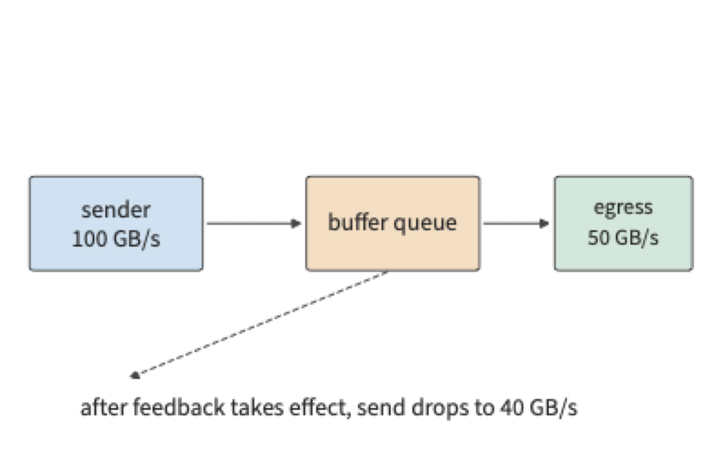
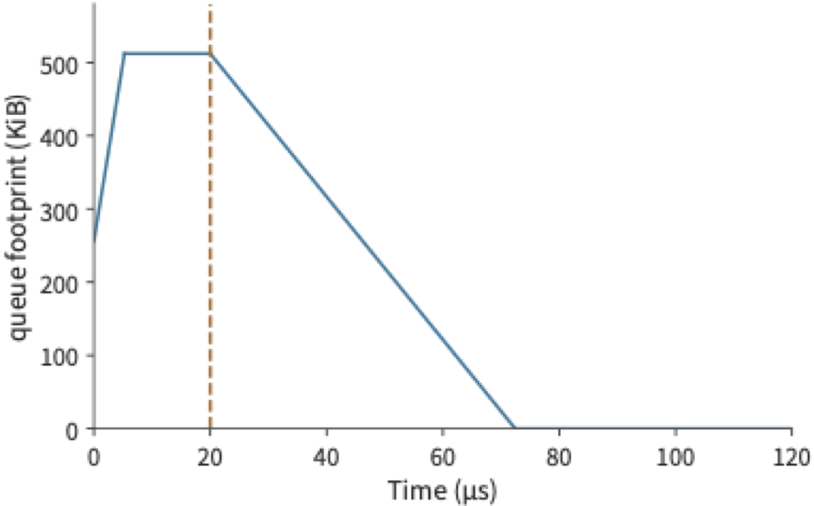
In Figure 7-43, the moment feedback takes effect determines how long the queue stays full, and the magnitude of the slowdown determines how steep the decline is. Various congestion control mechanisms all work by changing these two quantities. Explicit Congestion Notification (ECN) has switches mark packets to carry queue information back to the sender; DCQCN is an algorithm that uses this notification to adjust RDMA send rates; delay-based methods observe queueing from changes in round-trip time; UB's C-AQM has endpoints and the switching network collaborate on active queue management (slowing the sender based on queue state before the queue actually overflows). To understand these mechanisms, first identify which segment of the feedback path each one shortens, and what the sender changes upon receiving the information. Thresholds, update step sizes, and feedback frequency together determine the speed and magnitude of the queue's response.
Many-to-one convergence and link-level flow control. The 100 GB/s arrival rate above came from two jobs. Collective communication itself can also produce steeper arrival rates. If ReduceScatter is implemented directly, each participant sends shard \(j\) straight to the holder of shard \(j\), completing in one round. If \(N\) participants send to targets one by one in the same order, and each sends at the NIC's full rate \(B\), then during the interval when it is holder \(j\)'s turn, the other \(N-1\) senders are transmitting to it simultaneously, and the switch port leading to it receives data at a rate of \((N-1)B\); if the send order is staggered by rank, each target receives only one flow at any given moment. The situation where multiple senders transmit to the same outbound port simultaneously is called incast. Substituting \(\lambda=(N-1)B\) into the equation above, with each sender at \(B=50\) GB/s, the outbound rate also 50 GB/s, and remaining buffer of 1 MiB: at \(N=8\) the arrival rate is not one flow's 50 GB/s but seven flows combined, 350 GB/s:37
| \(N\) | Senders | Arrival rate | Excess rate | Allowable feedback delay |
|---|---|---|---|---|
| 8 | 7 | 350 GB/s | 300 GB/s | 3.50 μs |
| 16 | 15 | 750 GB/s | 700 GB/s | 1.50 μs |
| 64 | 63 | 3150 GB/s | 3100 GB/s | 0.34 μs |
Link-level flow control and end-to-end congestion control correspond to two different feedback distances here. One implementation of link-level flow control is IEEE 802.1Qbb's Priority-based Flow Control (PFC): when a receive port's queue exceeds a threshold, it sends a pause frame to the upstream neighboring port, pausing a single link by priority. Its feedback distance is only one hop: for a 30 m cable at 5 ns/m, the pause frame travels upstream in 150 ns, data already on the wire travels downstream in 150 ns, plus 30 ns for serializing a 1500 B packet at 50 GB/s, totaling 0.33 μs. Excess data that continues arriving within this 0.33 μs must have buffer space to hold it; this reserved space is called headroom: at \(N=8\) it is \(300\ \mathrm{GB/s}\times0.33\ \mu\mathrm{s}=99\) KB, at \(N=16\) it is 231 KB, and at \(N=64\) it is 1.02 MB — none exceeds 1 MiB. The DCQCN paper gives an example of 22.4 KB per port per priority, based on a 1500 B maximum transmission unit (MTU). The feedback distance for end-to-end congestion control (ECN marking and DCQCN slowdown) is a 20 μs round trip; the excess data flooding in during these 20 μs is 6.0, 14, and 62 MB — that is, 5.7, 13.4, and 59.1 MiB — none of which fits in a 1 MiB buffer. Figure 7-44 shows queue growth under these three values of \(N\) alongside the two feedback distances.
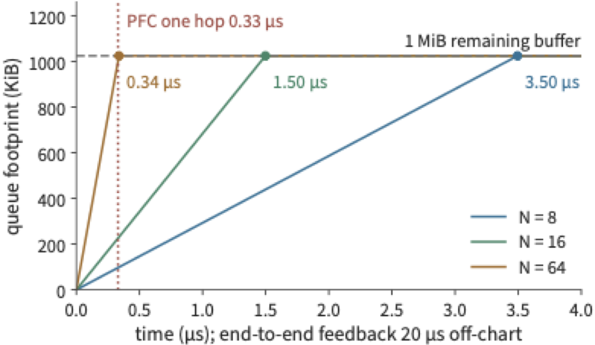
The two distances determine the division of labor: PFC blocks the neighboring hop within 0.33 μs, keeping the buffer from overflowing during the 20 μs that DCQCN needs; DCQCN then lowers the source's send rate to a level the outbound port can sustain, at which point the pause can be released. Relying solely on end-to-end feedback to avoid packet loss requires \((N-2)\times50\ \mathrm{GB/s}\times20\ \mu\mathrm{s}\le Q_{\mathrm{free}}\): a 1 MiB buffer only permits \(N\le3\), and even 4 MiB only reaches \(N\le6\). Enlarging the buffer to 4 MiB changes the allowable feedback delay to 13.98, 5.99, 1.35 μs — still far less than 20 μs.37 PFC's cost is left for Section 7.5.4: pauses propagate hop by hop upstream, and when they form a circular dependency, the result is deadlock.
Experiment 7-11 · Extension: how buffer size and slowdown magnitude affect backlog decay
Given an arrival rate of 100 GB/s, an outbound rate of 50 GB/s, and an initial backlog of 256 KiB, find the tolerable feedback delay for total buffers of 512 KiB and 1 MiB. Assume feedback takes effect exactly when the buffer fills up, and set the post-slowdown arrival rate to 50, 45, and 40 GB/s respectively; find the time from feedback taking effect to backlog clearing, and explain why one of these conditions cannot drain the backlog.
Experiment 7-12 · Extension: incast buffer and feedback distance
Change the outbound rate to 100 GB/s (two NICs) while each sender remains at 50 GB/s, and recompute the allowable feedback delay and PFC headroom for \(N=8\), 16, 64. Then change the cable to 100 m, find the one-hop feedback distance, and determine whether the headroom at \(N=64\) still fits within 1 MiB. Finally, find the maximum \(N\) for which end-to-end feedback alone avoids packet loss when the round-trip time is 5 μs.
7.5.3 Multipath and Retransmission¶
Feedback control mitigates congestion by lowering the send rate; if other paths still have spare bandwidth, traffic can also be diverted to them. Clos networks provide multiple candidate paths. Assigning different connections to different paths spreads out traffic on hotspot links; splitting packets of a single transfer across multiple paths lets it use the bandwidth of several links at once. The latter approach also brings the delay differences between paths to the receiver.
Take a BF16 hidden-state vector for four tokens, 32 KiB total, split into eight 4 KiB packets, round-robined across two independent 50 GB/s paths. Serializing each packet takes about 82 ns, so each path takes about 0.33 μs to send its four packets. With both paths having a 1 μs propagation delay, the whole transfer is delivered at about 1.33 μs; the same eight packets over a single path would take about 1.66 μs. The two paths each handle half the sending work, completing the transfer in parallel.24
Change the second path's propagation delay to 9 μs, and the last packet on that path doesn't arrive until about 9.33 μs. Later packets that arrive early on the fast path must wait for the missing packet ahead of them to be filled in; the receiver may need to buffer up to 12 KiB of out-of-order data. With the same total byte count, using an extra path is actually much slower than a single path, because the serialization time saved is only about 0.33 μs, far smaller than the added 8 μs of path delay.
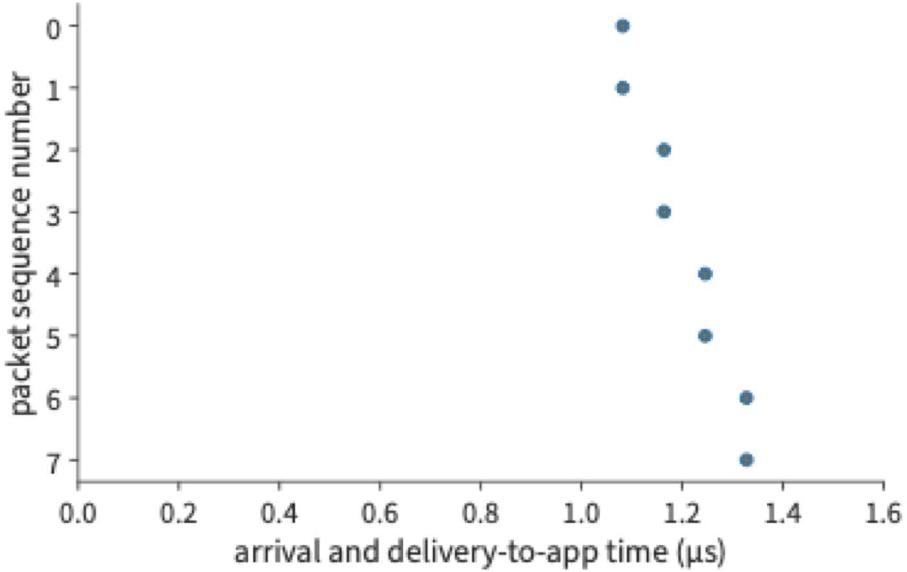
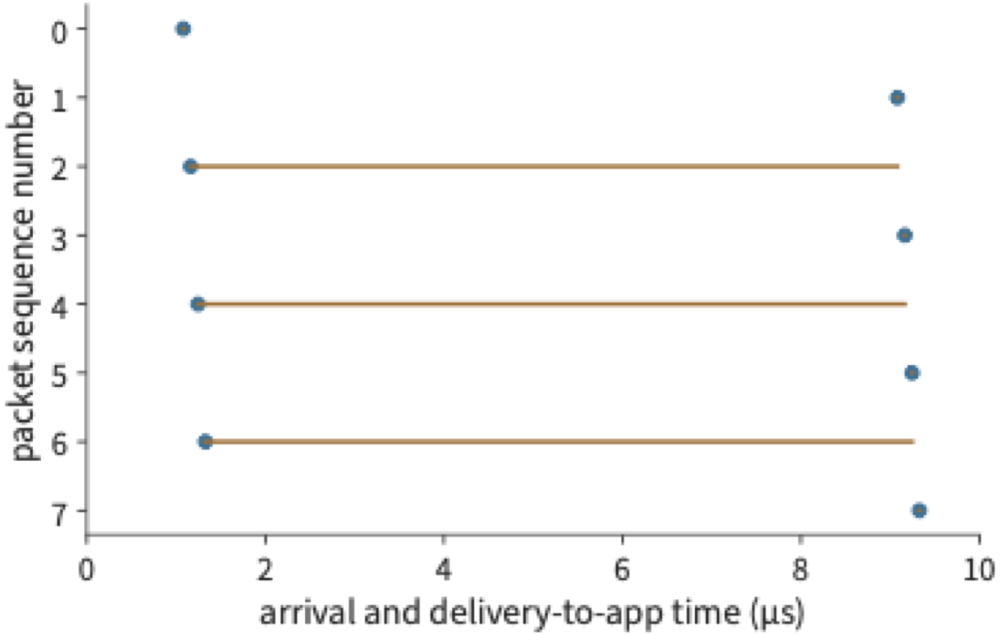
The horizontal lines in Figures 7-45 and 7-46 show that finishing sending on the fast path does not mean the whole transfer can be handed to the application. The two paths save on send time but may increase the time spent waiting for missing packets. We can derive directly the condition under which dual-path transfer is faster. A single path needs to send eight packets; dual-path sends four on each. Serializing each packet takes about 82 ns, so dual-path saves about 0.33 μs. If the second path's propagation delay exceeds the first's by more than this 0.33 μs, even splitting evenly loses its time advantage. On a 50 GB/s link, this margin is only a bit more than twice the propagation delay of a 30 m cable (about 150 ns), so even a small difference between paths cancels it out; splitting a transfer of a few dozen KiB evenly across paths with different delays is rarely worthwhile. Path selection or uneven allocation should reduce the number of packets assigned to the slow path, so that the last packet on each path arrives at roughly the same time. Multipath only pays off when the serialization time allotted to each path is much larger than the path delay difference — the 8 MiB packet spraying discussed below is exactly such a case.
Besides slow propagation, packet loss is another scenario, and it causes a different kind of wait. Suppose packet 0 is lost and is retransmitted 20 μs after its original send completion; the whole transfer isn't deliverable until about 21.2 μs — delivery must wait for the gap to close, regardless of how early the rest arrived. At this point the other seven packets have all arrived, and the receiver has buffered 28 KiB of payload, needing to retransmit only the missing 4 KiB; if instead everything from the missing packet onward is resent, another 32 KiB must be transmitted. Selective retransmission uses state that tracks reception progress to trade for fewer duplicate transmissions; Figure 7-47 shows this scenario of resending only packet 0. OpenURMA's two-node simulation offers the same comparison: UB's transport layer uses selective acknowledgment, resending only the missing packets, so throughput declines gently as packet loss rises; go-back-N retransmission, at the same loss rate, must resend the entire window.31
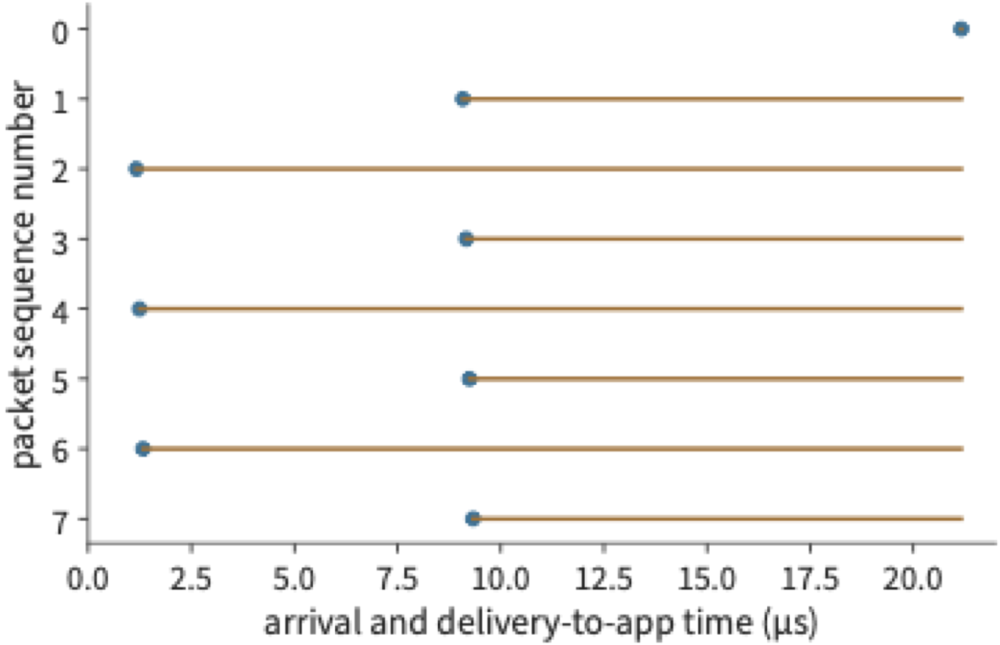
Retransmission raises a separate question: when to decide that a gap needs recovery. Waiting too long makes the stall after a genuine loss longer; resending a packet on a slow path that simply hasn't arrived yet adds duplicate traffic. The distribution of path delays determines how much reordering detection must tolerate, and the state the receiver tracks determines how much data arriving after the missing packet it can buffer. Reliable delivery, together with the application dependencies from Section 7.4, jointly determines which already-arrived operations can proceed.
Hash collisions across multiple paths. Earlier we split packets of a single transfer across multiple paths; the other approach mentioned at the start of this section assigns paths by connection (flow), which avoids reordering but may concentrate several flows onto the same link. When a cross-group flow leaves a leaf switch, it must pick one of that leaf's uplinks. Switches typically hash on packet header address and port fields to select an uplink, called equal-cost multipath (ECMP): all packets of the same flow take the same path, and different flows are distributed across different uplinks by hash value. Since hashing is effectively random, the probability of two flows landing on the same uplink is nonzero. The flows that can collide are cross-group flows on the same leaf switch: in Section 7.2.5, although the staggered pairing sent eight flows into the spine layer, they originated from eight different leaf switches, each leaf carrying only one cross-group flow, so they never meet on the same leaf's uplinks. Rail alignment minimizes the cross-group flows on each leaf specifically to avoid this collision. If \(n\) equal-rate flows on the same leaf are hashed independently and uniformly across that leaf's \(m\) uplinks — a non-blocking leaf with \(k=64\) has 32 uplinks, a 3:1 oversubscribed leaf has 16 — let \(L_{\max}\) denote the number of flows on the busiest uplink. Without collisions, the busiest uplink carries \(\lceil n/m\rceil\) flows; when each flow fairly shares its link's bandwidth and the whole group waits for the slowest flow to finish, the group's speed is only \(\lceil n/m\rceil/\mathrm{E}[L_{\max}]\) of the collision-free rate. Computing the exact distribution of the maximum load, the p99 column in the table below is the 99th percentile of \(L_{\max}\) — that is, in 99% of hash outcomes, the busiest uplink carries no more flows than this value:38
| Flows \(n\) | Uplinks \(m\) | Busiest-uplink flows without collision | \(\mathrm{E}[L_{\max}]\) | p99 | Collision-free probability | Speed relative to collision-free |
|---|---|---|---|---|---|---|
| 8 | 32 | 1 | 1.66 | 3 | 38.6% | 60.1% |
| 8 | 16 | 1 | 2.06 | 4 | 12.1% | 48.5% |
| 32 | 32 | 1 | 3.53 | 6 | \(1.8\times10^{-13}\) | 28.3% |
| 32 | 16 | 2 | 4.83 | 8 | 0 | 41.4% |
| 128 | 16 | 8 | 13.36 | 18 | 0 | 59.9% |
With only eight cross-group flows on one leaf, a non-blocking leaf has a 38.6% chance of a complete collision-free outcome; once a collision occurs, two flows concentrate on one uplink, each getting half the bandwidth, and the busiest uplink averages 1.66 flows, leaving the group at only 60.1% of the collision-free speed on average. Halving the uplinks on an oversubscribed leaf drops the collision-free probability to 12.1% and the speed to 48.5%. The worst case is when a whole group of 32 servers each sends one cross-group flow and the non-blocking leaf has exactly 32 uplinks: with flows equal to uplinks, it's almost certain that some uplinks sit idle while others carry three or four, leaving the group at only 28.3%. When flows greatly outnumber uplinks, the relative fluctuation of random assignment shrinks: 32 flows across 16 uplinks gives 41.4%, and 128 flows across 16 uplinks gives 59.9%. Figure 7-48 shows the busiest link's load for these configurations. The tipping condition: collisions are costliest when the flow count is close to the uplink count, and less costly when flows greatly outnumber or are greatly outnumbered by uplinks; avoiding this cost means either using rail alignment to reduce cross-group flows on the same leaf, or abandoning per-flow assignment in favor of the packet spraying discussed below.
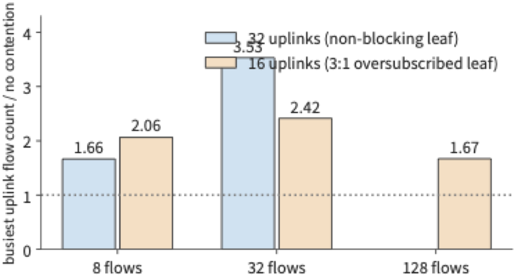
Packet spraying. Splitting packets of the same flow across multiple paths eliminates flow-level hash collisions, at the cost of the reordering computed earlier in this section. Take an 8 MiB prefill activation (BF16 hidden-state vectors for 1024 tokens), split into 2048 4 KiB packets, round-robined across eight 50 GB/s paths with propagation delays ranging from 1 to 8 μs. Each path handles 1 MiB, taking 20.97 μs to serialize; the slowest path adds 8 μs, so everything arrives by 28.97 μs, about 29.0 μs; the same 8 MiB over a single path takes 167.8 μs plus 1 μs propagation, totaling 168.8 μs. Spraying saves serialization time and adds path delay differences; per the condition derived earlier in this section, as long as the slowest path's delay is less than \(168.8-21.0=147.8\) μs, spraying is faster — here the slowest path is only 8 μs. The cost of reordering is that the receiver must buffer packets that arrive early: packets on fast paths must wait for lower-numbered packets on slower paths, and the receiver holds at most 339 packets, 1.39 MB, at once.38
Ultra Ethernet (a specification aimed at AI and high-performance computing) builds both of these ideas into its transport layer: packets are sprayed across multiple paths by entropy value (a field in the packet header that switches hash on for path selection), typically with 64 to 256 entropy values, and when feedback shows a path is congested, fewer packets are routed onto it; lost packets are retransmitted selectively — only the missing ones — rather than by resending the entire window with go-back-N.38 This is exactly the model in Figure 7-47: spraying gains the bandwidth of every link, and selective retransmission confines the cost of loss to the missing packets, at the price of the receiver maintaining reordering state.
Experiment 7-13 · Extension: how path delay differences and retransmission delay in-order delivery
Let the second path's propagation delay vary between 1 μs and 9 μs, and find the propagation delay of the second path at which splitting evenly across two paths takes the same time as using only the first path. Then have the first and second paths carry five and three packets respectively, and find the completion time when the first path's propagation delay is 1 μs and the second's is 9 μs. Keeping the first-packet-loss scenario, increase the recovery wait from 20 μs to 40 μs, and compute the moment data first becomes deliverable in order, along with the amount of data that must be buffered before that.
Experiment 7-14 · Extension: hash collision and spraying boundaries
Find the busiest link's expected load and speed relative to collision-free when 16 flows are spread across 32 uplinks, and compare with the table's case of 8 flows across 16 uplinks, which shares the same \(n/m=1/2\). Change the spraying path delays to uniform intervals from 1 to 30 μs, and find the completion time and peak reordering buffer; then find the slowest path delay at which spraying stops being faster than a single path. Finally, change the packet size to 1 KiB, and explain how the peak reordering buffer's packet count and byte count change.
7.5.4 Deadlock¶
In Section 7.5.3, already-arrived packets must be held until the gap is filled before their space can be freed. Endpoint backpressure and link-level flow control also propagate this kind of waiting upstream: when the receiver has no free slot, the sender upstream cannot keep transmitting. If the action that releases a resource itself requires that same resource, a cycle forms. Consider two requests holding resources A and B respectively; the first still needs to acquire B to complete, and the second still needs to acquire A to complete. Both are waiting for the other to release first.
In a reduction system, this kind of cycle can span multiple levels: a request fills the receive buffer, the completion response waits on the send queue, and the send queue in turn waits for the remote end to free the space occupied by the request. Drawing an edge for "holding one resource, requesting the next" produces a resource dependency graph. When every resource on a cycle is held, all the release conditions stall simultaneously. Figure 7-49 shows such a cycle, and Figure 7-50 shows the solution described below of reserving a path for responses.
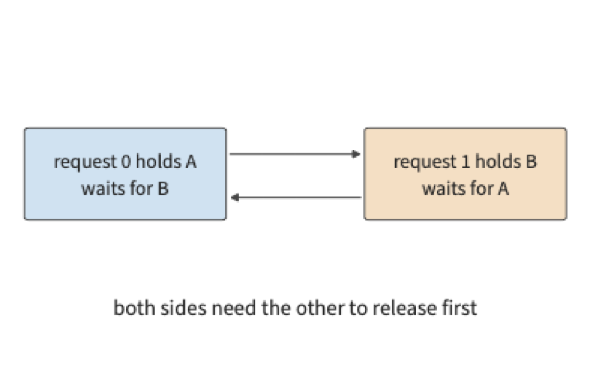
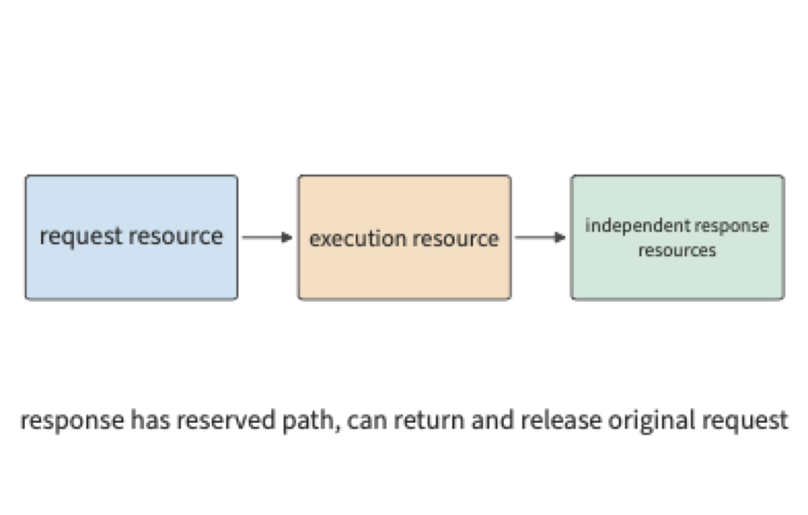
One solution is to impose a strict ordering for resource requests — for example, requiring all work to request A before B. This way, work holding B never has to wait on A again, breaking the cycle. Another solution is to reserve an independent buffer and sending opportunity for completion responses. Suppose the receiver's eight data slots are full and the sender is waiting for release; if the response also had to occupy these same data slots, everything would stall together. Adding independent response slots lets the release message after processing data return, freeing the space occupied by at least one request so the data queue can keep cycling.
Virtual channels use logically separate queues to partition resources. Putting requests and responses into different channels, and imposing a direction on resource requests, can build an acyclic dependency structure. What actually matters here is independent capacity and ordering of use.
Memory access may also require address translation and page-table reads. If the original request waits on address translation, and address translation in turn triggers a remote access, and both compete for the same exhausted pool of slots, the same cycle forms. When the author participated in UB's design, we had to jointly analyze the dependencies among transaction processing, memory access, and link transmission. Only by reserving resources for completion notifications, address translation, and failure recovery can the system avoid stalling under congestion or failure.
7.6 From Communication Improvement to Task Completion¶
7.6.1 The Critical Path Starts from Data Readiness¶
Sections 7.2 through 7.5 followed a piece of data through transmission, waiting, completion notification, and space release. To judge how much training time these improvements can save, we must also account for the computation process that produces and consumes this data, and determine when communication actually begins. One card enters a collective communication call very early, while another card's gradient has not yet been computed; the former waits for the latter inside the call. This wait is recorded as part of the communication call's duration, but its root cause lies in the preceding computation or data preparation.
Consider four participants that must perform a local reduction, becoming ready at 0, 0, 0, and 2 ms respectively, and executing a 0.4 ms exchange once all are ready. Following the dependency graph from Section 7.4, the start time of the exchange equals the maximum of the four readiness times, and the whole group finishes at 2.4 ms. Halving the exchange duration changes the completion time to 2.2 ms; if all four participants were ready at the start, the completion time would become 0.4 ms. The two optimizations act on different nodes of the dependency graph, and Figures 7-51 through 7-53 illustrate these three scenarios in turn.26
This readiness skew also exists in large-scale training systems. MegaScale, a large-scale distributed training system, found during performance diagnosis that network bandwidth remained stable, but the gap in when participants began communicating kept growing, and the waiting time within ReduceScatter grew accordingly. Further analysis revealed that this discrepancy was related to host-side operations during forward computation.25 Measurements from this book's companion experiments, using the Gloo collective communication library with four processes on CPU, show the same relationship: with a 4 KiB input, when one participant arrives about 25.1 ms late, the median completion time for the whole group rises from about 1.6 ms to 26.6 ms; the tail segment after the last participant arrives remains about 1.6 ms.27
Therefore, the task timeline should be drawn starting from the moment data is generated. Splitting gradients into multiple buckets lets reduction begin as soon as each bucket's gradient is generated; while the next bucket is still being computed, the previous bucket can already be transmitted. Communication for different buckets competes for the NIC and links, and the parameter update must wait for the last bucket's reduction to complete. Bucketing lets communication start earlier, overlapping with subsequent gradient computation.
7.6.2 Computing Communication Time in a Hierarchical Network¶
Example 7.6: Which should be optimized first — the reduction algorithm, execution order, or link bandwidth? Continuing with the earlier example's 192 MiB gradient. The gradient becomes ready 20 ms after computation begins, and the update after reduction takes 2 ms. Compare a continuous ring against hierarchical reduction, then examine insufficient concurrency, early communication, and link degradation.
Solution: first compute the training step time when reduction and computation run serially. Computation → reduction → update forms a serial chain. Using the transmission model from Section 7.2, the total time for the continuous ring is about \(20+7.6+2=29.6\) ms, and for hierarchical reduction about \(20+1.3+2=23.3\) ms. Communication time drops by about 83%, but the whole step shortens by only about 21%. The 20 ms computation and 2 ms update occupy the rest of the time.
In general, let \(T_c\) be the time unaffected by the optimization, \(T_n\) be the communication time, and \(s\) be the communication speedup factor; then the overall speedup is
Next consider the concurrent-request limit from Section 7.3. If each NIC has only 128 in-flight 256 B transactions and the slot turnaround time is 2 μs, then—ignoring the issue rate for now—each NIC's remote throughput is capped at 16.4 GB/s. In hierarchical reduction, each NIC sends 24 MiB across servers, so the remote transfer alone needs about 1.5 ms; adding local communication and startup, total communication is about 2.3 ms, and the whole step is about 24.3 ms. Only after increasing to 391 active transactions with a sufficient issue rate does it recover to about 23.3 ms. After changing the reduction algorithm, the request submission and processing rate must also be fast enough to realize the algorithm's advantage.
Now consider overlap. Suppose the data requiring communication is ready 17 ms after computation begins, while the remaining computation still needs 3 ms. This 3 ms of computation can execute concurrently with communication. The two use hardware resources that do not contend with each other, and the update must wait for both to finish. In this case,
Figures 7-54 through 7-59 show six arrangements in turn, each using the same time scale. The gray computation interval stays unchanged; the length of the blue communication interval is determined by transfer volume and throughput, while its starting point is determined by when the data becomes ready.
When data becomes ready at 17 ms and overlaps with computation, the whole step for the continuous ring is about 26.6 ms, and for hierarchical reduction about 22.0 ms: hierarchical communication ends around 18.3 ms, earlier than the 20 ms computation end time, and the update begins right after computation finishes. Even if data becomes ready as late as 18.7 ms, hierarchical communication can still hide behind computation. Further shortening communication no longer changes this critical path; at that point, computation or the update must be shortened to reduce total time further.
Discussion: after reducing the NICs, does reduction become the training step's bottleneck again? If only one of the eight rails remains available, all eight shards per server must pass through this single remaining NIC, giving 96 MiB per direction per round, 192 MiB across both rounds; remote transfer rises from about 0.5 ms to about 4.0 ms, and communication becomes about 4.8 ms. With data ready at 17 ms, communication does not finish until 21.8 ms, and the whole step is about 23.8 ms. As communication time grows, a larger portion of it can only complete after computation ends.
Comparing these timelines in order: reducing communication volume shortens the blue band, insufficient concurrency lengthens it, and earlier data readiness shifts it to the left. The green update must wait until both computation and communication finish before it can start. The three models of traffic, concurrency, and dependency together give a clear order of optimization. First use hierarchical reduction to cut cross-server transfer and ensure every NIC has a shard to transmit; then use concurrent request submission and processing to saturate link bandwidth; once bandwidth hits its limit, look for communication that can start earlier; and once communication time is fully hidden behind computation, optimize whichever of computation or update now determines the completion time.
7.6.3 Communication Bottlenecks in Training and Inference¶
The blue band in Figure 7-54 can be shortened significantly because, with large gradients, data transfer accounts for most of the communication time. In low-concurrency decode, an 8 KiB hidden vector must be handed off repeatedly between layers; the actual data transfer takes very little time, and it is the per-call startup overhead that dominates. Take a ring of eight participants, with a 5 μs startup per round and an effective bandwidth of \(B\) per participant; for an input of size \(M\), one reduction takes
The fourteen rounds of startup together total 70 μs. Taking the link bandwidth as this chapter's 50 GB/s NIC, setting the payload term equal to the startup term gives \(M=2\) MB, about 1.91 MiB. When the input exceeds this order of magnitude, the fraction of time spent on data transfer grows; 8 KiB is far below this, so most of the time comes from startup.
Reading Figure 7-60's horizontal axis from left to right, the segment with small data size is nearly flat, while the segment with large data size rises with increasing payload. Raising bandwidth mainly flattens the slope on the right; shortening startup time mainly lowers the curve in the flat region on the left.
For an 8 MiB input, raising bandwidth from 50 to 150 GB/s drops one reduction from about 364 μs to 168 μs; for an 8 KiB input, it drops only from about 70.3 μs to 70.1 μs. Suppose we run a 36-layer model with one such reduction each for attention and FFN per layer; 72 serial reductions total about 5.1 ms under both bandwidths, a difference of only about 14 μs. Reducing per-round startup from 5 μs to 2 μs, however, cuts about 3.0 ms off those 72 reductions.28
Therefore, training and large-batch prefill benefit more readily from reducing bytes, increasing bandwidth, and overlap; low-concurrency decode instead needs fewer cross-server synchronizations within a layer and a shorter path from initiation to completion. This also explains the pipeline parallelism scheme discussed in Section 7.2: keeping one stage local reduces remote communication within that stage, while how many independent requests are processed simultaneously determines pipeline utilization.
Beyond average latency, occasional long waits can also delay task completion. Take 100 communication events, of which 98 take 0.4 ms, one takes an extra 2 ms due to late readiness, and one takes an extra 10 ms due to recovery. The average is about 0.52 ms; the p99, taken as the 99th value when sorted from smallest to largest, is 2.4 ms. Halving the normal transfer time reduces the p99 to 2.2 ms; if recovery events increase to two, the p99 is then determined by the communication event that includes failure recovery, becoming 10.4 ms.26
Normal transmission, data preparation delay, and failure recovery can each become the dominant factor in determining task completion time. Frequent small-data transfers need lower per-call startup overhead; lengthy failure recovery needs a smaller failure scope. After a communication failure occurs during training, the communication group must be rebuilt and training state restored; Chapter 10 covers this process further.
Both the bandwidth and startup-overhead comparisons keep the communication pattern fixed. The communication pattern itself can also change: adjusting the parallelism scheme and expert distribution can reduce the number of handoffs; having the accelerator initiate communication directly, or delegating initiation and completion handling to an offload unit, can shorten each handoff. MoE's routing, dispatch, and combine impose requirements on network operations; whether the network can complete these operations efficiently, in turn, affects expert granularity and cross-node deployment. If model computation speeds up due to specialized hardware while communication time itself stays the same, its share of the critical path rises.
The same traffic analysis also applies to state migration in inference. Continuing with the same DeepSeek V4.1 conversation used throughout this book, suppose this request must migrate to an instance that does not hold its global KV. First compute the transfer time for the global history payload: with a 128K context, transferred over a single ConnectX-7 running at 200 Gbit/s, giving an effective bandwidth of 25 GB/s. V4-Flash's 439.281 MiB needs about 18.425 ms, while V4.1's 111.250 MiB needs about 4.666 ms. State compression cuts about 13.759 ms off this transfer path.30
This 13.759 ms is the time the migration scheme can save on the transfer step. If a request goes through queueing, cache lookup, transfer, and rebuilding local SWA state in sequence, the recovery time is the sum of these four segments; however much the transfer shortens, the total time shortens by the same amount. Chapter 9 will compare this recovery path against staying on the original instance to wait, or recomputing from the input, to decide where a request should execute.
7.6.4 Fixing 1024 Cards: How to Re-choose After the Supernode Grows¶
Earlier sections used sixteen participants to analyze the path; this section scales up to 1024 cards: keeping the total card count fixed while changing the supernode size from 8 to 64, 128, and 256 cards, to examine which times change. We first fix the computational workload and the parallelism scheme, then vary network conditions separately, and finally re-compare parallelism degrees.33
Fixed model and training job. We adopt Qwen3-32B's shape: 64 layers, hidden dimension 5120, parameter count \(P=32\times10^9\). 1024 H100 SXM 80 GB cards are organized with tensor parallelism 8 and data parallelism 128, written as TP8×DP128, with every eight-card tensor-parallel group contained within one supernode. Each update processes a fixed \(2^{20}\) tokens, and each data-parallel replica processes a micro-batch of 8192 tokens; the meanings of global batch size, precision, and optimizer update all stay unchanged. Training state is counted at 16 bytes per parameter, giving 64 GB per card; we further assume that 8 GB of activations and workspace suffice, and for now we do not use ZeRO (Zero Redundancy Optimizer, which shards optimizer state, gradients, and parameters across data-parallel replicas).
Gradients are transmitted in BF16, so the shard held by each card is \(G=2P/8=8\) GB. Let the supernode have \(S\) cards, so the number of supernodes is \(H=1024/S\), and each supernode contains \(q=S/8\) data-parallel members at the same tensor-parallel coordinate. Figure 7-61 shows the grouping within a 64-card supernode: the eight cards in the same row form one model replica, and the cards in the same column belong to the same gradient-synchronization group.
Cross-supernode transfer volume. The \(q\) data-parallel members within a node first perform ReduceScatter, leaving each card with a \(G/q\) gradient shard; the \(H\) supernodes holding the same shard then perform AllReduce; finally, an AllGather is done within the node. Using the ring algorithm, each card sends \(2(H-1)G/(Hq)\) across nodes, and multiplying by the \(8q\) cards within the node gives the send volume per direction per supernode:
As the node scales from 8 to 128 cards, \(q\) increases from 1 to 16, and the cross-node bytes per card decrease, but the total send volume per supernode per direction only drops from 127 GB to 112 GB. So expanding the supernode by 16× does not mean the bytes passing through the exit port also drop by 16×.
Within a node, NVLink is taken at 450 GB/s per card per direction: 8 cards is exactly one HGX H100. The 64-to-256-card cases correspond to the NVLink Switch System, which can connect up to 256 Hopper GPUs into a single NVLink domain with 115.2 TB/s of all-to-all bandwidth—exactly 256 cards at 450 GB/s each. Across nodes, each card has one ConnectX-7 at 50 GB/s per direction. Startup per round is \(\alpha_L\) within a node and \(\alpha_R\) across nodes, both taken as 0.83 μs per Section 7.1.1. Let \(B_L\) be the per-card per-direction bandwidth within a node, \(B_{\mathrm{NIC}}\) be the per-direction bandwidth per NIC, and \(B_{\mathrm{out}}\) be the available unidirectional exit bandwidth of the whole supernode; the hierarchical gradient time is
The terms are, in order, the local reduction and gather, the cross-node startup, and the slower of the two—the NIC or the shared exit port. A real system may also be affected by switching-network cut sets and local concurrent communication; this example assumes the network can provide the listed bandwidths, with no overlap between stages.
Total training step time. Effective compute per card is taken as the H100 SXM's BF16 dense peak of 989.4 TFLOP/s times 41%, about 405.7 TFLOP/s; the 41% is the reported BF16 MFU for Llama 3 405B trained on 16384 H100s with TP8, PP16 (pipeline parallelism with 16 stages), DP128. Per the definition in Section 1.2.2, 41% means 59% of peak compute did not translate into model computation. Part of that is work this first-order estimate does not count, such as the quadratic term in attention and the recomputation done during training to save GPU memory; another part is avoidable waiting, such as the readiness skew from Section 7.6.1 and the insufficient in-flight requests from Section 7.3.4. Computation is estimated as \(6P\times2^{20}/(1024\times405.7\ \mathrm{TFLOP/s})\approx0.485\) s, ignoring attention's quadratic term. Forward and backward per layer together are counted as four tensor-parallel AllReduce operations; the BF16 hidden tensor for 8192 tokens is 80 MiB, and across 64 layers this totals about 0.086 s; the optimizer update is counted separately at 0.050 s. The step time and throughput \(\Theta\) (tokens processed per second) under a fixed schedule are then
This is a fixed-schedule estimate that chains together computation, tensor-parallel communication, gradient synchronization, and update; a real system would subtract out the portion already overlapped along the timeline of gradient readiness. As a comparison, we also compute a non-hierarchical continuous data-parallel ring: each tensor-parallel coordinate has only one cross-node ring edge, without spreading this edge across other NICs. The table below takes the faster of the two algorithms in each case.
| Cards per supernode | Number of supernodes | Local DP members \(q\) | Cross-domain send per node | Exit scales with card count: step time/throughput | Exit fixed at 400 GB/s: step time/throughput |
|---|---|---|---|---|---|
| 8 | 128 | 1 | 127 GB | 0.939 s/1.117M tokens/s | 0.939 s/1.117M tokens/s |
| 64 | 16 | 8 | 120 GB | 0.690 s/1.520M tokens/s | 0.939 s/1.117M tokens/s |
| 128 | 8 | 16 | 112 GB | 0.672 s/1.560M tokens/s | 0.935 s/1.122M tokens/s |
| 256 | 4 | 32 | 96 GB | 0.663 s/1.581M tokens/s | 0.896 s/1.171M tokens/s |
"Exit scales with card count" takes \(B_{\mathrm{out}}=S\times50\) GB/s, meaning every card's 400 Gbit/s NIC connects into the switching network—implying that a larger node is provisioned with proportionally more simultaneously usable external ports and sufficient switching capacity; the exit does not automatically widen just because the node grows. "Exit fixed" instead lets each supernode connect only 8 lanes of 400 Gbit/s into the QM9700 switching network, totaling 400 GB/s, the same as one HGX server. In the latter's 64-card scheme, hierarchical reduction needs about \(31.1+300.0=331.1\) ms, which is actually slower than the continuous ring's about 317.7 ms, so the table selects the continuous ring here. This matches the judgment from Section 7.2 about whether local reduction pays off. The "exit scales with card count" column also implicitly assumes a non-blocking switching network: as computed in Section 7.1.2, a 3:1 oversubscription cuts each supernode's exit to one-third, raising the 128-card node's cross-domain term from about 17.5 ms to about 52.5 ms, adding about 35 ms to step time; Section 7.2.5 explains how these cross-domain bytes are spread evenly across the eight rails in a multi-rail topology.
Figure 7-62 shows how throughput varies with supernode size under three network conditions. Going from 8 to 64 cards raises throughput by about 36% when the exit scales with card count. An 8-card supernode is just one server; each card must synchronize its entire 8 GB gradient shard over the NIC, taking 0.318 s—a third of the step time. At 64 cards, the shard is first reduced to one-eighth over NVLink, so each card only exchanges this small piece across nodes, dropping gradient synchronization to about 69 ms. Going from 128 to 256 cards raises throughput by only about 1.3%, because at that point computation and tensor-parallel communication already occupy 86% of the step time. If internal bandwidth is further raised from 450 to 900 GB/s—the per-direction bandwidth of fifth-generation NVLink—the 128-card node reaches about 0.614 s, 1.709M tokens/s; this gain comes from the higher internal bandwidth, not from the node size itself.
Re-comparing parallelism degrees. A larger high-speed domain can accommodate a larger tensor-parallel group, but need not be filled to capacity. For a 128-card supernode, under the exit-expanded condition, enumerate tensor parallelism of 8, 16, 32, 64, with corresponding data parallelism of 128, 64, 32, 16, keeping the global token count fixed. As each data-parallel replica must process more sequences, with each sequence still 8192 tokens, both the row count of the local matrix and the tensor-parallel transfer volume must be recomputed; assuming these shapes all achieve this example's effective compute, the step times are about 0.672, 0.753, 0.942, and 1.333 s respectively. TP8 remains best here: a larger tensor-parallel group means more activations to exchange per replica, and the savings in local gradient synchronization do not offset the increased activation exchange. When tensor parallelism exceeds the number of KV heads, layouts such as replicated KV must also be supported; this example assumes the kernel supports this with sufficient headroom.
This screening shows that 1024 cards can train one model together, but that does not mean every layer of the model is split across all 1024 cards. If switched to inference, several smaller instances can each handle requests and isolate failures independently; Section 6.7.4 used the same method to compute the effect of supernode size on decode throughput. When real training has different local matrix efficiency, memory, or overlap capability, some combination of tensor, context, and pipeline parallelism may work better; one should expand the scheme and recompute as in Section 6.7.3, rather than treating this example's TP8 as a universal answer.
Failure recovery overhead. All the throughput figures above assume the job never interrupts. In synchronous training, a single card's failure can halt the entire job; unlike an independent inference instance, a data-parallel replica cannot simply be dropped, since that would change the samples and gradients used in this update. Unless the system provides local recovery or an elastic scheme that preserves training semantics, it must roll back to a consistent checkpoint. Suppose that every \(I\) seconds, effective computation pauses for \(C\) seconds to save a checkpoint, the job's interruption rate is \(\lambda\), and recovery takes \(R\) seconds. When the failure rate is low and the failure time is roughly uniformly distributed within the checkpoint interval, the overhead ratio can be roughly estimated as
This only estimates average effective progress and does not guarantee tail latency. Independent card failures can have their interruption rates summed by card count, while supernode-level shared-device failures should be counted by their actual failure scope; not all failures should be treated as independent. The interruption rate is taken from statistics for Meta's research cluster: a 1024-card job experiences an interruption on average every 7.9 hours, with the interruption rate proportional to card count, equivalent to about one interruption per card every 337 days (about 8090 hours) on average; Chapter 10 also uses this dataset. These statistics already include shared-device failures, so this example does not add a separate supernode-level shared-failure term, and the interruption rate does not vary with supernode size; any interruption triggers recovery of the whole job. Every 600 seconds, effective computation pauses for 10 seconds to save a checkpoint. Recovery is taken as a fixed 60 seconds, plus the time to read back each affected supernode's 64 GB of per-card state over one PCIe Gen5 x16 link (64 GB/s per direction). For the 128- and 256-card nodes, recovery times are 188 and 316 seconds respectively, with added overhead of about 3.4% and 3.8%; under the exit-expanded condition, effective throughput is about 1.509M and 1.523M tokens/s: the 256-card node recovers more slowly, but its added overhead remains smaller than its improvement in normal throughput.
The interruption rate comes from statistics for one cluster, and the checkpoint interval and recovery channel are given inputs. A larger node may reduce the number of shared devices, but may also enlarge the loss and recovery traffic from a single failure; with spare cards, local recovery, or a different failure rate, these figures should be recomputed. Therefore, when comparing schemes, one should report normal-operation throughput, the recovery model, and effective training progress within the target time together; Chapter 10 expands on checkpointing and recovery protocols.
7.6.5 Deployment and Common Pitfalls¶
Large gradients, small-volume transfers, and failure recovery each highlight a different bottleneck: bandwidth, startup overhead, and dependency waiting, respectively. Comparisons of deployment schemes should likewise start from these workloads. InfiniBand, RoCE, and UB each provide specific connection and communication mechanisms; when choosing a deployment scheme, first use the three models in this chapter to compare the communication paths of each option. The connection between GPU and NIC, shared interfaces, and switching topology determine available bandwidth; the request submission and completion mechanisms determine actual throughput; and the application's synchronization and recovery mechanisms determine execution ordering.
To compute available bandwidth, you must first clarify how physical ports are connected. For example, in Ascend 950, UBoE and UB Link both share SerDes according to a pre-configured scheme, and the purpose of a given group of SerDes is determined by port configuration. Only after the port's purpose is selected can you compute the actual usable link bandwidth in that direction.29 Once the interface is unified, programs can access it in a common way, while port configuration determines which links the data passes through and how much bandwidth those links have.
Public AllReduce run records let us analyze the combined effect of these factors. With a 16 GiB input, and with input and output using separate buffers, two eight-card H100 servers of the same specification as this chapter's example take about 68.7 ms, and four servers take about 91.0 ms.9 Adding servers brings more participants and a longer collaboration path.
This chapter's derivations also help clarify four common pitfalls.
Pitfall: if the total amount sent is the same, the communication time is the same. The flat contiguous ring, the interleaved ring, and hierarchical reduction all send 5760 MiB, yet the cross-server portion is 720, 5760, and 384 MiB respectively, using one, eight, and eight NICs respectively. Transmission time depends on which resources the data passes through; the arrangement of participants changes how many bytes each NIC handles.
Pitfall: low average link utilization is sufficient to handle communication peaks. Two periodic jobs need only 20 GB/s on average, but when their communication peaks overlap they reach 100 GB/s, backing up 1 GB at a 50 GB/s egress. What the buffer holds is the deficit accumulated over some interval, and phase and feedback determine how long that deficit keeps accumulating.
Pitfall: returning in order guarantees reading correct data. A stale value read before the data update does not become the new value just because the return is delayed. The dependency between publish and read must constrain the actual moment of the read; executing ahead of time requires checking and re-reading.
Pitfall: the communication speedup equals the task speedup. Hierarchical reduction reduces communication from about 7.6 ms to 1.3 ms, and the serial training step from about 29.6 ms to 23.3 ms; making data ready earlier further reduces the hierarchical scheme to 22.0 ms. The same communication optimization saves a different total amount of time depending on the execution order.
As I understand it, the starting point of unified interconnect is to let devices directly access remote data and initiate communication, let upper layers explicitly express dependencies, and let lower layers reuse the same transmission state. Evaluating these designs requires answering three questions: which bytes are no longer moved, which interval is no longer waited on, and what additional request state must be kept and what additional processing must be performed to achieve this.
Experiment 7-15 · Core: how much training and inference time can communication optimization save
First, recompute the 1024-card example, keeping the global token count fixed while varying supernode size, egress cap, and local bandwidth one at a time, and record which communication algorithm and tensor-parallel candidate perform better. Then halve the recovery channel's bandwidth and compare effective progress. Finally, recompute Worked Example 7.6 and draw the full-step timeline for the flat contiguous ring, hierarchical reduction, insufficient in-flight requests, early communication, and having only one NIC left. Find the latest moment data can become ready such that hierarchical communication is exactly covered by 20 ms of computation. Then switch to 36 layers with two 8 KiB reductions per layer, and consider separately increasing bandwidth to three times its original value and reducing each startup overhead to 2 μs; explain why the order of improvement differs between the two kinds of workload.
Chapter Summary¶
From single-card operators to supernodes and on to the datacenter, sharding and scheduling always revolve around the same set of data dependencies. To analyze a cross-server task, start by tracing a single piece of data: follow the algorithm to determine which participants it must be handed to, then follow the topology to determine which resources it passes through. The two-server example first performs local reduction, cutting the cross-server transfer volume from 720 MiB to 384 MiB and letting eight NICs work simultaneously, which shortens the transfer time on the bottleneck link. The switching network itself is also a resource to account for: the oversubscription ratio determines how wide the cut is, whether the rails are aligned determines whether bytes travel one hop or through the spine layer, hash collisions and incast determine effective bandwidth and buffering, and in-network reduction collapses the cross-server stage into a single round.
Once the communication path is chosen, requests still need to be submitted and processed continuously. The bandwidth-latency product determines how many bytes must be in flight; the data volume per request together with the submission interval determines how much data can be submitted per second; and the processing speed of completion notifications determines how quickly a request slot can be reused. Sharing state saves capacity, while isolating state controls interference; when data becomes readable and when it can be released determines how long this state must be retained. Adding up the stages of a single remote access shows that whether the controller sits behind PCIe or on an on-chip bus determines the fixed overhead per access, and whether connection state scales with the number of endpoints or with the number of endpoint pairs determines whether it can stay in on-chip cache.
The 1024-card example further shows that supernode size, intra-node bandwidth, and external egress are separate conditions. Expanding the high-speed domain from a single eight-card server to 64 cards keeps more reduction local, cutting gradient synchronization from about a third of step time down to around a tenth and raising throughput by about 36%; beyond that, the gains quickly diminish. Once the high-speed domain is expanded, the combination of tensor parallelism and data parallelism can be re-compared, but egress limits and the cost of local reduction or recovery overhead can both shift the choice. A job using all the cards in a cluster does not mean every kind of communication needs to span all of them.
Finally, drawing the ordering relationships among data preparation, transmission, use, and recovery produces a dependency graph. Reducing the volume of data transferred and the amount of request-processing work, starting independent operations earlier, and shortening the critical path are the three ways network optimization translates into task benefit. The next chapter will use these execution and interconnect capabilities to build a single-instance inference service, and Chapter 9 will further organize data handoff across instances.
-
For the method of computing model scale and state size, see Model Resource Accounting and Chapter 7 Extended Material. The mixed-precision Adam example allocates 16 bytes of training state per parameter; the trillion-parameter inference example computes weight capacity at 0.5 byte per parameter. ↩
-
UB specification and operating system reference design cross-check notes. ↩↩
-
Two-level gradient reduction computation, flat contiguous ring, interleaved ring. Model shape is fixed; each round synchronizes at a barrier, and the listed times are the sum of payload transfer time and startup time under contention-free conditions: NVLink at 450 GB/s per direction, one NIC per card at 50 GB/s per direction, 0.833 μs startup per round. Run
python3 calculations/calc.py hierarchical-gradient --inputs calculations/scenarios/hierarchical-gradient-example.json --format mdto recompute. ↩ -
Hierarchical reduction for the reference configuration, flat contiguous ring, interleaved ring: four A100 80GB PCIe cards per server, inter-card PCIe Gen4 x16 point-to-point at 32 GB/s per direction; one dual-port ConnectX-7, with two 200 Gbit/s ports each at 25 GB/s, sharing the PCIe Gen4 x16 slot's 32 GB/s per direction; 0.833 μs startup per round. The A100 80GB datasheet lists PCIe 4.0 at 64 GB/s and the two-card NVLink bridge at 600 GB/s, both aggregate figures across both send and receive directions; the ConnectX-7 datasheet lists 1/2/4-port configurations, with a single-card aggregate of up to 400 Gbit/s, and a host interface of PCIe Gen5 x16/x32; the reference configuration computes this card as installed in a PCIe Gen4 x16 slot. The figure for 300 GB/s local bandwidth is obtained by recomputing with
local_bytes_per_secondchanged to 300 GB/s. ↩ -
For the reference configuration, the flat contiguous ring with one port, two ports, and three ports: cross-server messages are striped across ports, and the PCIe Gen4 x16 slot's 32 GB/s per direction does not increase with the number of ports. For the single-NIC hierarchical reduction in Section 7.6.2, see single-NIC hierarchical reduction. ↩
-
HGX H100 datasheet: eight GPUs interconnected via NVSwitch, with 900 GB/s NVLink between GPUs and network rates up to 400 Gbit/s; NVIDIA H100 specifications list H100 SXM's 900 GB/s NVLink and 128 GB/s PCIe Gen5, both aggregate across both send and receive directions; the NVLink specification page gives per-GPU NVLink bandwidth by generation; the ConnectX-7 datasheet: single port up to 400 Gbit/s, host interface PCIe Gen5 x16; DGX H200 datasheet: eight GPUs paired with eight 400 Gbit/s ConnectX-7 NICs. The configuration of one 400 Gbit/s NIC per card is taken from the public run record for experiments/ch07/07-03: two HGX servers, each with 8 H100s and 8 ConnectX-7 400 Gbit/s InfiniBand NICs. The rail-based topology in which identically numbered NICs connect to the same switch is described in the DGX SuperPOD H100 reference architecture. The PCIe Gen5 x16's 64 GB/s per direction exceeds the NIC's 50 GB/s, so the NIC is the constraint on this path. The 0.833 μs startup time per round is derived from the same public record: in the raw log, a 16-rank out-of-place AllReduce at message sizes from 16 B to 128 B takes 24.93–25.68 μs; taking 25 μs and dividing by the 30 rounds of a ring AllReduce among sixteen participants gives this value. The actual algorithm NCCL selects for small messages is not disclosed in the log; this is converted here only using this chapter's ring model. ↩
-
Model parallelism case study, Chapter 6 main text. This chapter's EP example uses 1024 tokens, eight dispatches per token, 8 KiB per dispatch, a cross-boundary ratio of one-half, and a routing scheme constructed for teaching purposes. ↩
-
Ren et al., Enabling Efficient GPU Communication over Multiple NICs with FuseLink, OSDI 2025; formal conference paper, communication path derivation. Relay path values in this passage follow this chapter's configuration: NIC at 50 GB/s per direction, NVLink at 450 GB/s per direction; for the plugin implementation and experimental platform, see the original paper. ↩↩
-
Verification of the public run record for experiments/ch07/07-03. Data comes from a user-submitted record in the official project. ↩
-
RPC phase and pairing recomputation, original record of 264 calls. Changes in CPU phase and request bytes, and changes in paired calls, are tallied separately. The measurement path is a Mac forwarding via SSH to a Linux host, including encryption, forwarding, and network variation; pairing complete calls saves a median of about 10.1 ms. ↩
-
Remote read window, sequential waiting: path at 50 GB/s, 256 B per transaction, 2 μs slot occupancy. The 18.6 ns and 6.2 ns startup intervals are taken from the request-rate figure in the UB interconnect computation (in the OpenURMA toolchain, RoCE reliable connections take 6 cycles per request and UB takes 2 cycles per request, at a 322 MHz clock). Request waiting and service startup interval are each defined separately in the formula. ↩
-
Bojie Li et al., KV-Direct: High-Performance In-Memory Key-Value Store with Programmable NIC, SOSP 2017, §2.4 and Figure 3; for further discussion of PCIe credits and tags, see Chapter 5 of the author's PhD thesis. These figures are quoted for the original platform (PCIe Gen3 x8, FPGA NIC); other platforms have different credit counts, tag counts, and latencies, but share the same structure in which reads are limited by in-flight count and writes are limited by packet rate. ↩
-
The crossover point between packet rate and bandwidth is derived from the 18.63 ns startup interval for RoCE reliable connections in Section 7.3.4 and this chapter's NIC bandwidth of 50 GB/s, giving about 931 B; for FuseLink's bandwidth borrowing see 8; for MoE dispatch's hidden dimension of 7168 and FP8 dispatch with BF16 combine, see the DeepEP README snapshot. ↩
-
The DeepEP README snapshot describes the buffer sizes reserved separately for NVLink and RDMA; the overhead of copying and packing is inferred from this section's event model, not measured against any particular version. ↩
-
Hou et al., Understanding Routable PCIe Performance for Composable Infrastructures, NSDI 2024, experiments conducted on a PCIe Gen3 platform; PCIe paths and diagnosis. ↩
-
Remote read and retrieval of an unchanging KV snapshot. The snapshot is 1024 tokens of Qwen3-8B, BF16 full-layer KV, totaling 144 MiB; remote read and transfer back are computed at 50 GB/s per direction for ConnectX-7 with 391 in-flight 256 B transactions, and local read/write at H100 SXM's HBM bandwidth of 3350 GB/s; one transfer-back has a fixed cost of about 3.075 ms, each remote read is about 3.025 ms, and local reads are about 0.046 ms. The 10% access counterexample scales the per-access cost proportionally, while still computing the transfer-back cost for the entire snapshot. ↩
-
Necessary dependency and stale-value counterexample, shared-resource variant, reading on remote ordering research and a fixed NVSHMEM implementation. Target-side ordering is a design that would require new hardware support; the reference experiment on current NICs is used to observe request and completion timing. The publish chain's 20+80+2 μs and the stale-value counterexample's 1–6 μs are two independent inputs. "Execute everything strictly in order" serves as the serial baseline strategy. ↩
-
Active relationships and transmission state, eight-way isolation. The model separately accounts for three categories of capacity: endpoints, relationship bindings, and transmission state. ↩
-
Completion notification processing and slot release, additional slots. The polling period, the number of completion notifications processed per poll, and slot occupancy time are teaching conditions. ↩
-
Periodic demand and queue, staggered, phase drift. The arrival rate in the example varies according to the given period. ↩
-
Rajasekaran et al., CASSINI: Network-Aware Job Scheduling in Machine Learning Clusters, NSDI 2024; job placement and phase scheduling. The paper's main experiments use 24 servers with a single A100 40 GB each, 50 Gbps NICs, and a 2:1 oversubscribed logical network; each job has exclusive training devices but shares the network. ↩
-
experiments/ch07/07-08: real CPU training and one-time staggering. The three-round results account for an initial 50 ms delay, and model and optimizer state are verified consistent; this comparison is used to analyze CPU execution ordering. The environment is a shared CPU with Gloo loopback; completion time across three rounds increases by 2.27%–3.32%. ↩
-
Finite buffer and feedback delay. The feedback moment is set at 20 μs, and the send rate after feedback is adjusted according to the problem setup. ↩
-
both paths equally delayed, unequal path delays, specified packet-loss recovery. Byte counts are tallied at the application payload level. Both paths run at 50 GB/s, packets are 4 KiB, using fixed payload with round-robin allocation, and the recovery moment is given by the problem setup; the 32 KiB retransmitted starting from the missing packet is used to compute the extra payload. ↩
-
Jiang et al., MegaScale: Scaling Large Language Model Training to More Than 10,000 GPUs, NSDI 2024; official paper, collective communication diagnosis. ↩
-
Readiness skew teaching record, 100 mixed records, two recovery records. p99 takes the \(\lceil0.99N\rceil\)-th item after sorting. ↩↩
-
experiments/ch07/07-10/rank-readiness: readiness skew across four Gloo processes. Apple M2 Max, local CPU, 180 formal records; group completion is measured from the earliest barrier return to the latest call return, and the tail after the last arrival still includes reduction, scheduling, and wake-up. The main text uses the median across different sample statistics; for the per-sample timeline, see the original record. ↩
-
Network planning and collective communication case study. The small-message example assumes 5 μs startup per round, with each participant's effective bandwidth set at this chapter's NIC bandwidth of 50 GB/s and also at three times that, 150 GB/s; the ring model computes payload transfer plus startup, with values given in the
small_messagesentry of this chapter's teaching example; the earlier large-block reduction uses the 0.833 μs per round derived from nccl-tests records. ↩ -
UB and Ascend 950 source cross-check, including UB Base Specification 2.0.1, the operating system reference design 2.0, and the official Ascend 950 white paper. Domains, transport modes, bidirectional bandwidth, and SerDes multiplexing are each accounted for separately. ↩
-
DeepSeek V4.1 official technical report, Sections 1, 2, 3, and 6; fixed conditions and recomputation carried across chapters. ↩
-
Bojie Li, "Reflections Behind Unified Bus," the sections on Jetty, transaction ordering, and Load/Store; OpenURMA paper, revision dated 2026-06-02 (arXiv:2605.28717), §3 design, §7–§9 state and latency, §10 ordering, §12 transport, §13 summary of results. Sources and scope for this integration. ↩↩↩↩
-
For the parameters and results of stage latency, request rate, and state growth, see the UB interconnect computation; run
python3 calculations/calc.py ub-fabric --format mdto recompute. Each stage's latency is taken from the values given in Table 7 of the OpenURMA paper, record sizes are taken from Table 3, and simulation reference values are taken from §8.1 and §8.3. The derivation sums all stages serially and does not account for overlap between concurrent requests. ↩↩↩ -
Fixed 1024-card scenario, full computation and candidate comparison, script. The shape comes from the Qwen3-32B configuration, approximating total parameters as 32B. H100 SXM's BF16 dense peak is given in the hardware table; the 41% MFU figure is taken from Table 4 of the Llama 3 paper; the NVLink Switch System connecting up to 256 GPUs with 115.2 TB/s of full-switching bandwidth is given in the Grace Hopper architecture blog snapshot; the fifth-generation NVLink's 1800 GB/s per GPU (bidirectional aggregate) is given on the NVLink specification page; the figure of a 1024-card job interrupting on average once every 7.9 hours, with interruption rate proportional to card count, is given in Figure 7 of the Meta cluster reliability paper. Checkpoint interval and pause, and fixed recovery time, are given inputs. ↩
-
64-port non-blocking Clos, 3:1 oversubscription: leaf switches with \(d\) downlinks and \(u\) uplinks, with upper layers non-blocking with respect to leaf uplinks, in a three-tier fat-tree pod structure; bisection bandwidth is computed as half of the top-tier link capacity; the 1024-card partition computes the cut set by occupying an integer number of leaf switches; supernode egress is taken from the 1024-card scenario at 50 GB/s per card multiplied by card count and divided by the oversubscription ratio, and cross-domain bytes are taken from the 1024-card computation. Switches are taken as the NVIDIA Quantum QM9700 (NDR 400 Gbit/s) used in the DGX SuperPOD H100 reference architecture, whose Table 3 uses 64 leaf switches and 32 spine switches for 2048 GPUs, matching the count for a 64-port two-tier Clos. Run
python3 calculations/calc.py clos-cut --inputs calculations/scenarios/clos-cut-example.json --format mdto recompute. ↩ -
In-network reduction comparison: the local stage is the same as hierarchical reduction, and the cross-server stage has each NIC send its shard once and receive the result once; for \(S\) servers, the ring computes \(2(S-1)/S\) shards per NIC over \(2(S-1)\) rounds, with 0.833 μs startup per round; the throughput of the switch's reduction engine is not included in the model. SHARP's definition is taken from NVIDIA SHARP documentation, and the measured values are taken from the abstract of the SHArP paper. ↩↩
-
Aligned pairing, misaligned pairing: two servers with eight NICs each, where NIC \(i\) connects to the leaf switch of rail \(i\); the cross-server stage is a ReduceScatter plus AllGather between two ranks, counting only serial NIC sends and a 0.833 μs startup per round. The multi-rail topology, with a group of 32 servers reaching the same rail in one hop and crossing rails via the spine layer, is taken from pages 8 and 14 of the DGX SuperPOD H100 reference architecture PDF. ↩↩
-
Incast feedback, 4 MiB buffer: \(N-1\) senders each at 50 GB/s sending toward a 50 GB/s egress, under a fluid model; one-hop feedback distance is the round-trip propagation of a 30 m cable plus the serialization of one 1500 B packet, and end-to-end feedback distance is taken as a 20 μs round trip. The definition of PFC pausing a full-duplex link by traffic class is taken from the IEEE 802.1Qbb entry; the 1500 B MTU and the 22.4 KB headroom per port per priority are taken from §4 of the DCQCN paper. ↩↩
-
8 flows on 32 uplinks, 8 flows on 16 uplinks, 32 flows on 32 uplinks, 32 flows on 16 uplinks, 128 flows on 16 uplinks: each flow on a given leaf switch hashes independently and uniformly onto that leaf's uplinks; the distribution of the maximum load is computed exactly as a truncated exponential polynomial, and the speed relative to a collision-free assignment is \(\lceil n/m\rceil\) divided by the expected maximum load (for \(n\ge m\), this is the effective cut in the results file). Packet spraying follows the same packet-reordering model used in this section: an 8 MiB transfer split into 4 KiB packets rotates across eight 50 GB/s paths, with per-path latencies of 1 to 8 μs given as input. Spraying and entropy values are taken from Ultra Ethernet Specification v1.0.1§3.6.5.2; the cost of falling back N steps is taken from UEC Overview, page 5. ↩↩↩